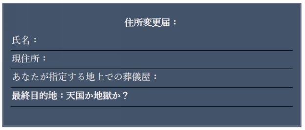

| 悪魔の仮面を剥ぐ | |
| ジョン・ラミレス | |
| Lehigh Valley Japanese Ministries Media (2016) | |
悪魔の仮面を剥ぐ
Unmasking the Devil
永遠の命を奪う敵を倒す戦略
ジョン・ラミレス著
リーハイバレー・ジャパニーズ・ミニストリーズ 翻訳・校正
大塚友子 翻訳
ロイド美代 校正
著作権者 ジョン・ラミレス 二〇一五年
著作権者の許諾なく著作物を利用することが法的に認められる場合を除き、無断で複製、公衆送信、配布等の利用をすることはできません。また、利用が認められる場合でも、著作者の許可無く変更、削除することを禁じます。
全ての日本語での聖書引用は特に注釈が無い限り新改訳新約聖書及び旧約聖書より引用。著者が引用し、同書にも引用された英語版は欽定訳聖書(KJV)、トーマス・ネルソン社の一九八二年発行の新欽定訳聖書(NKJV)、International Bible Society一九七三年、一九七三年、一九七八年、一九八四年、二〇一一年発行のHoly Bible, New International Version (NIV)、一九九六年、二〇〇四年発行のHoly Bible, New Living Translation (NLT)。
表紙デザイン、テリー・クリフトン
発行元
アメリカ合衆国、ペンシルバニア州
リーハイバレー・ジャパニーズ・ミニストリーズ・メディア
「この本は我々が悪魔よりも三枚上手であるための手助けをしてくれる。我々に勝利をもたらす素晴らしい啓示である。」
イッツ・スーパーナチュラルの司会者、シド・ロス
お礼のことば
私は福音を恥とは思いません。福音は、ユダヤ人をはじめギリシヤ人にも、信じるすべての人にとって、救いを得させる神の力です。（ローマ一章十六節）
初めに、私の主であり救い主であるイエス・キリストに全ての栄光と名誉と称賛を捧げ、二冊目の本「悪魔の仮面を剥ぐ」を書くチャンスをくださったことに感謝します。主無しではできなかったことでした。私を神のしもべとしてくださったことに感謝します。
いつも思い起こすのは、神は二度目のチャンスを与えてくださるお方だということです。私が悪魔崇拝をしていた時、自分の地区には一七九件の建物があり、ありがたいことにイエス・キリストは私の住所をご存じだったのです。ある夜、恵みと憐れみの神が現れて、私を解放してくださったのでした。
また、神がアセンダント・グループのラウル・デイヴィスとレティシア・ゴメスに私を引き合わせてくださり、ラウルがあの朝、クリスチャンテレビ番組で私の話を聞くことができたことにも感謝します。神の促しにより、彼は私に連絡をとってきたのでした。ラウルは神に仕える男性で、実生活においても本当に誠実な人物です。彼と知り合いになれたことを感謝します。
また、私を家族の一員として迎えてくださり、素晴らしい伝統を分かち合ってくださったデスティニー・イメージ社とそのスタッフにも感謝します。一生忘れません。
また、ＴＢＮの方々や７００クラブ、チャーチ・チャンネル、エンド・チャーチアニティ、シャノン・デイヴィスのオメガマン・ラジオ、ウォッチマン・ラジオのリチャード・ケルトナー、エターナル・プラナーのロブ・レニー、１オン・ワンのデイモン・デイヴィスにも、感謝と愛を送ります。これらは素晴らしいミニストリーであり、イエスの御名の下でこれらのミニストリーと共に活動ができることを光栄に思います。
自分が仕えることができた多くの教会にも感謝し、あなたたちが私に扉を開いてくださったことを神に感謝します。
私のミニストリーだけでなく、私個人の人生の一部となってくれた、霊的な覆いでもあるフロリダ州オーランドのチャンピオンズ・ミニストリーにも感謝します。使徒アレクサンダーとサンドラは私に本当に良くしてくれました。彼らが主と確かな歩みを歩んでいることも神に感謝します。
過去十二年間、タイムズ・スクエア・チャーチという素晴らしいミニストリーの元で、霊的に養い支えてもらい、幸運にもデービッド・ウィルカーソン牧師に指導してもらった三年間のことを心から感謝します。デービッド牧師、会えなくて寂しいですが、いつかまた会えることを楽しみにしています。
デニース・ロフレードにも心から感謝します。神に仕える素晴らしい女性として、この本をタイプしてくださり、この出版にあたっての霊の戦いに挑んでくれました。本当に感謝します。
アンジー・キースリングにも感謝します。彼女は私の親友で、編集者でもあります。彼女のミニストリーであるエディトリアル・アティック（editorialattic.com）があることも神に感謝します。彼女の仕事ぶりは、一冊目の「悪魔の大釜からの脱出」の時と変わらず素晴らしいものです。もう一度、お礼を申し上げます。
オメガマン・ラジオのキリストの兄弟であるシャノン・デイヴィスにも特別に感謝します。彼のミニストリーがあることを神に感謝し、霊の戦いと解放によって、一緒に暗黒の王国を破壊するように、神が私たちをつなげてくださったことにも感謝します。囚われ人を解放するための章を書くことを手伝ってくれました。あなたは、キリストの中における生涯の兄弟です。
心の底から愛する私の娘、アマンダにもこれを捧げます。美しい女性に成長してくれました。あなたの父親であることを本当に名誉に思います。神があなたを通して必ず素晴らしいことをなさるでしょう。あなたは私にとって、全てにおいて特別な人です。この世にたくさんの娘たちがいる中から、神があなたを選んで私に与えてくださったことに、今再び感謝します。
また特別な母親をくださった神、主イエス・キリストに感謝します。母を心から愛しており、彼女は神からの贈り物です。彼女のような母親を持つことは、良い真珠を見つけるようなものです。
弟のジョージとストック、君たちは特別で素晴らしい人です。神があなたたちの人生に働きかけているのを見ることができ、また私があなたたちの兄であることにも感謝しています。
また、イエスをメシアと信じるイスラエル人は地上の宝石でもあり、そのような兄弟を与えてくださった神に感謝します。私はイスラエルに深い愛情を抱いており、それは自分の祖国でもあるプエルト・リコに対する愛情を上回るものです。ジェフ・クルー、アラン・ビンジャー、デービッド・バーコウィッツ（「サムの息子」を名乗った七十年代の連続殺人犯で、獄中でクリスチャンとなり「希望の息子」と名を変えた）などの神に仕える男たちが、御言葉をユダヤの超自然的な視点で理解することを私に教えてくれました。素晴らしいウェブサイトを作ってくれたネイト・ビンジャーにも感謝します。イェシュア（イエス・キリストのヘブル名）と言う救い主を私たち与えてくださったユダヤの人たちに本当に感謝しきれません。
私はイエス・キリストの中で終身刑を過ごし、仮釈放はいりません。イエス様、ありがとう。
「ことの始まり以来、俺は地上にいるんだよ。人類が持っているあらゆる感覚を育んできたのさ。人が欲するものを知っているし、だからといって俺は人を裁いたりしない。なぜかって？なぜなら俺は人を拒まないからさ。人は不完全だが、人間が大好きなんだ！俺は人道主義者だよ。たぶん人類最後の人道主義者だろう。ケヴィン、頭がいかれていない人だったら、二〇世紀が俺の手中にあるってことを否定できないだろう？
お前さんよ、気取るなよ。お前がどんなにできるやつでも、お前が来るってことを誰にも知らせてはならない。それは失礼だぞ。自分を小さく無害に見せるのさ。目立たない男になって、ダサい、ハンセン病の、どうしようもない奴隷のような虫けらになるのさ。俺を見てみろ。初日から過小評価されている。俺が世界を仕切ってるなんて、思いもしなかっただろう？」
― 映画「ディアボロス／悪魔の扉」でアル・パチーノ演じるジョン・ミルトン役のセリフ
もし私がこの人物が誰なのかを言わないで、あなたがこのセリフだけを読んだら、この人が言っていることはもっともだと思うだろう。不幸なことに、このような考え方に陥る人は、サタンに影響されやすい。
映画「ディアボロス／悪魔の扉」（一九九七年ワーナーブラザーズ）で、キアヌ・リーブス演じるケヴィン・ロマックスは道徳心を持った南部出身の弁護士で、彼のところにジョン・ミルトンからお声がかかり、ニューヨークの弁護士事務所に来るように誘われる。だがそこで、ミルトンは法的にも非常に灰色の状況をロマックスに押し付け、富のためにロマックスの道徳心と正義感を捨てることを強いるのだ。これらの事件はロマックスを試すものとなり、映画の終わりにはジョン・ミルトンが実はサタンであることがわかる。ミルトンの「虚栄が俺のお気に入りの罪だ。虚栄は全ての罪への扉を開くからだ」というセリフが有名だ。
「ディアボロス ― 悪魔の扉、原題 The Devil's Advocate」はフィクションだが、ケヴィン・ロマックスのようにサタンの元で何年も働いていた人が、そこから逃げ出して来て新たな人生を歩みだした、という人に実際に出会ったことを想像してもらいたい。そしてその人がサタンの手口を暴き、イエス・キリストに従う信者たちや、他の人たちに、サタンがどのように人類をおびき寄せようとしているか、どのように長い間何億という人たちを巧みに騙してきたのか、その機密情報を流そうとしていることを考えてもらいたい。そしてこの人はサタンの攻撃を打ち負かす鍵をあなたに与え、サタンを絶対的に克服するためのツールを一人ひとりに持たせてあげたいと思っているのだ。想像ごっこはここまでにしよう。私の名前はジョン・ラミレス。ラッパ歌手のリル・ウェインが「自分は地獄に行って、戻って来たのさ。切符を見せてやろうか」と歌っているが、これは正に私のことなのだ。
自分が語ることは全て真実であり、それはこれまで以上に貴重なメッセージになると思う。人々は現代社会の中でサタンが演じる役割について、そしていかにやつを負かすかを知りたがっている。あなたが手にしているこの本が、まさにその役に立ち、今までイエス・キリストの力を疑ったことがあるのなら、私の話を聞いた後は、そのような疑いを持たないことを願う。
私の最初の本では、自分がニューヨークで悪魔崇拝をしているカルト集団の中で、第三位の祭司として訓練を受けていたことを書いた。強力な魔術を用い、霊的な地域を支配していたのだ。イエス・キリストとの奇跡的な出会いによって、奈落の底に果てしなく落ちていくような人生が終わり、自分の人生が変わったのだ。九九・九％の信者が見たこともないような自分の経験から、私は教え、話している。私は、かつては敵の陣地におり、そこから寝返った亡命者なのだ。
人類の全ての民族は様々なオカルトに関わっており、サタンの暗闇の世界の犠牲者となっている。多くの人は無害だと思っているが、それは全くの嘘であるということを知って欲しい。これらのオカルトの多くはキリスト教の一部を取り込んで、それを基本としているなどと言ったり、神に近づくための答えがあると言ったりして、たくさんの人が引き込まれてしまう。人はその道を辿ろうとして、道を見失い、サタンの影響下に入り、出口を見失ってしまうのだ。自分は神の恵みがあったからこそ、抜け出すことができたのだ。
この本が、クリスチャンがサタンの姿を暴き、戦い方を学ぶために役立つだけでなく、出口を探している人たちの助けとなることを願う。これらのページにある教えは、あなたが聖別された生き方をし、神から与えられた使命を果たし、あなたの魂が神と永遠に過ごせることを確実にするために、自分が世界中で何千という人たちに教えてきたことである。
これは今だかつてないほどに、語られるべきメッセージなのだ。
死んだ男に新しい命が与えられる
一九九九年十月二七日、ニューヨーク州、ニューヨーク
ジョン・ラミレスは、ニューヨークのブロンクスのアパートのベッドで、深夜、霊的に死亡した。ジョンはプエルト・リコで生まれ、幼少時代、家族と共にブロンクスに移住した。彼には娘が一人いる。ジョンは、サンテリア、スピリチュアリズム、パロ・マヨンベという領域では、ニューヨークで第三位の悪魔崇拝の祭司となり、二五年間、暗黒の伝道師として働き、多くの人をその「宗教」に勧誘した。ジョンは、クリスチャンや教会、その他の宗教に対抗して、彼らを霊的に支配することを楽しんだ。悪魔的な考えでは、地域を支配できるとそこに住む人々をも支配できたからである。彼の父でもあった悪魔のように、彼は征服しに出て行き、多くのものを殺し、盗み、滅ぼした。だが、ブロンクスで彼が「死んだ」夜、彼は生まれ変わったのだ。イエス・キリストの中で、新しく造られた者となり、新しい使命が与えられたのだ。そして多くの魂が解放されるために、悪の仕業を打ち壊し、悪の姿を暴く使命が与えられたのだった。
悪魔がよく使う最も大きな嘘は、「悪魔など存在しない」とこの世の人に思わせることである。（＊）
霊的な存在であるサタン、あるいは悪魔についてまず知らなければならないことは、やつは赤いスーツを着て、角をつけて、槍を持って走り回っているのではない、ということである。血を滴らせた牙をむき出して、あなたの元には来るわけでもない。悪魔とはただの逸話だという嘘を信じ込ませて、存在そのものを否定させたほうが、彼にとっては都合が良いのである。でもそう信じさせることができない場合は、目には見えないが、死に至らしめるような地獄の力であなたの生活を侵そうと仕掛けてくる。
イエスが地上を歩いた時、悪魔には三つの目的があると主は警告してくださった。それは、殺し、盗み、滅ぼすことである。しかし、主はまたこうおっしゃった。「わたしが来たのは、羊がいのちを得、またそれを豊かに持つためです」。悪魔は実在し、非常にパワフルではあるが、やつよりももっと力強いお方がいる。そのお方とは神の御子イエスである。あなたがまだこのお方のことを知らないのなら、この本を読み終わるころには、主のことを知ることを私は祈る。
この本では、悪魔があなたの生活を侵略しようとする多くの方法を暴いて、それをあなたに伝えようと思う。やつが被っている仮面を剥がして、その裏にある本質を暴き、悪魔が来た時には、武具を身に付けて準備ができているようにするのだ。霊の戦いの現実を見て、十字架の真の戦士になるとはどういうことかを一緒に探ってみよう。ここでは軍事用語が使われているが、それはもっともなことである。なぜならあなたや私は、戦の真っ只中におり、目に見えない霊的な戦いが身の回りで常に起こっているからだ。これは、暗闇と光、善と悪の戦いである。二十五年間、私は暗闇の世界で戦い、サンテリア、パロマヨンベ、スピリチュアリズムにおいては、ニューヨークの悪魔の世界で三番目の地位まで昇格し、呪いをかけ、地域をサタンの手中に陥れてきた。私の救いの証は「悪魔の大釜からの脱出」を読んでもらえばわかるだろう。
大きな夢と小さな子どもたち
あなたや私が幼かった時に話を戻そう。私が小学校一年生だった時の五月上旬のある春の日の午後、先生は私たちを輪にして座らせ、「大きくなったら何になりたい？」と質問をしてきた。心臓が時速百マイルで走らんばかりに早打って、私はパニックになって部屋を見回した。質問に興奮していたが怖くもあった。呆然として教室を見回すと、大きな明るい窓があり、黄色に塗られた壁には素晴らしい絵が美しく飾られているのが目についた。小さな手形でできた絵や、家族の顔が描いてあるものや、棒のような姿に描かれた家族の肖像画が並んでいた。
先生が一人ずつに質問していくにつれ私の感情は高まった。小さな子どもたちは「自分が最初に言う！自分が最初に言う！」と大きな夢を発表したがり、教室は興奮ではちきれそうになった。「警官になりたい！」、「宇宙飛行士になりたい！」、「消防士になりたい！」などと自分の背後で友達が力限りの大声で叫んでいるのも聞こえた。部屋の片側からは、別の一人が「医者になりたい！」と叫んでいたが、何て言って良いのかわからなくて困惑しているクラスメートもいた。女の子のほとんどは、看護婦や、学校の先生や、バレリーナなどと言っており、それは本当に楽しい時間だった。
幼い子どもの心が悪者になることを望んだり信じたりすることはないのだ。一瞬たりとも「人殺しになりたい！大きくなって連続殺人をするか、ドラッグを売るんだ！」などと誰かが声をあげることはないし、「水商売に入って、お金のために体を売って、ひどい人と関係を持って殺されたい！」などと言う女の子もいない。その日、壊れた夢や偽の希望を抱いた子どもは一人もいなかった。元悪魔崇拝者として思うことだが、私たちは生まれた日から、死に始めるのだと思う。まだ最初の言葉を話す前に、最初の一歩を歩く前に、最初に息を吸った瞬間から、あなたの命を奪おうと悪魔が悪霊を送り込んでくるのだ。
盗人が来るのは、ただ盗んだり、殺したり、滅ぼしたりするだけのためです。わたしが来たのは、羊がいのちを得、またそれを豊かに持つためです。（ヨハネ十章十節）
悪魔と悪霊たちは、あなたが最初の息を吸った瞬間から、あなたを真理から遠ざけようとする。あなたがどこからやって来て、あなたがキリストという創造主と関係を持つように造られ、この人生の旅路の終わりには神と永遠を過ごす場所に戻るという真理をあなたが知ることがないようにするのが彼らの計画である。あなたが高級ビルの最上階に住んでいようと、貧困地域に住んでいようと、神が用意したご計画からあなたが目をそらすように悪魔はあれこれ手をつくし、あなたが神のもとに戻らないようにしようとするのだ。あなたの誕生日が神によって定められ、この時代にあなたが送り込まれる前に、天国では話し合いが行われているのだ。
わたしは、あなたを胎内に形造る前から、あなたを知り、あなたが腹から出る前から、あなたを聖別し、あなたを国々への預言者と定めていた。（エレミヤ一章五節）
思考 ― サタンの戦場
あなたに敵の王国と悪魔の戦略をもっと深く見てみよう。敵が最初に攻撃をしかけるのは思考である。
敵は戦場が思考の中にあることを知っている。あなたの意思や考えや生き方の領域を奪い取ることができたなら、あなたを要塞に閉じ込めることができるのだ。そして、その次に攻撃するのは魂で、それにはあなたの考え、意志、感情などが含まれる。魂を奪えばその人は動けなくなり、何もできなくなるのだ。悪魔はそれを何世紀もやっており、アダムとエバにも働きかけたし、その息子のカインにも同じことをして、弟のアベルを殺すように仕向けたのだ。悪魔はサウル王にも働きかけて彼を自殺に追い込んだ。イスカリオテのユダも悪魔の声を聞き、イエスを銀貨三十枚で裏切り、後に自殺した。
そういうわけですから、兄弟たち。私は、神のあわれみのゆえに、あなたがたにお願いします。あなたがたのからだを、神に受け入れられる、聖い、生きた供え物としてささげなさい。それこそ、あなたがたの霊的な礼拝です。この世と調子を合わせてはいけません。いや、むしろ、神のみこころは何か、すなわち、何が良いことで、神に受け入れられ、完全であるのかをわきまえ知るために、心（ギリシャ語では「思考」）の一新によって自分を変えなさい。（ローマ十二章一～二章）
これを実行していれば、完全なる神の御心の中に居留まることができ、あなたを滅ぼそうとする敵の手の中に落ちることはまずない。だが多くのクリスチャンは御言葉を読んでも、それを実行に移そうとはしないので、危険から守られることがなく、敵のやり方や罠やサタンの国の要塞に自分を明け渡してしまっている。私たちが圧倒的な勝利者となるには、御言葉を読むだけではダメなのだ。でも御言葉を実行に移し、信仰と合わせてそれを使うと、あなたの人生に対する敵のゲームプランを打ち壊すことができるのだ。
悪魔と空中の権威を持つ支配者（高位の悪霊）は第一と第二の天を牛耳っており、その下の「地上レベル」にいる悪霊たちは、地上で今日も活動しており、彼らの目的は、あなたの思考を捕らえて、神のもとに戻れなくすることである。敵も賢く、一人ひとりの特徴、性格、悪習慣、強さと弱点を観察しているのだ。その人がイエス・キリストを信じるか信じないかに関わらず、やつらは集めた情報に基づいて、罠をしかけようとする。あなたの人生で霊的な世界の扉をいつ開けばよいか適切な時期までじっと待つことを悪魔は知っており、そのようにして、やつらはあなたの暮らしの中にある入り口を探すのだ。
一歩ずつ破滅に向かわせる
チャールズ・マンソン、ジェフリー・ダーマー、テッド・バンディや、乱射して大量殺人を企てる者たちや、中東で首を切ったりする者たちには皆共通点がある。頭の中で声が聞こえるということだ。敵が彼らの特性、人格、意思、感情を奪い去り、彼らを完全に壊して、自分が誰であるかという彼らの人格を完全に剥ぎ取ったからである。自分も悪魔の国で司令官のように働いていた時、人から全てを奪い、その人格を完全に剥ぎ取る方法を教わったものだ。
敵はあなたの中に入り込み、あなたを少しずつ破滅に向かわせる方法を心得ている。それが一番わかりやすいのは詩篇九一である。三節と十三節を見てみよう。
主は狩人のわなから、恐ろしい疫病から、あなたを救い出されるからである。あなたは、獅子（ＫＪＶ ライオン）とコブラ（ＫＪＶ ドラゴン）とを踏みつけ、若獅子と蛇とを踏みにじろう。（詩篇九一、三節と十三節）
この二つの聖句にでてくる狩人とは悪魔のことで、やつが使う罠は獅子とコブラと若獅子と蛇である。これらを用いて敵はあなたを捕らえようとする。この中でも一番危険なのは若獅子で、敵が罠を仕掛けているように見えないのがその理由だ。何てことないように見えるので、危険物としてレーダーには感知されないのだ。若獅子とは「小さな」罪のことで、自分がコントロールできるので、いつでも止めることができると思っているものである。例えば、卑しい歌詞の音楽を聴いたり、インターネットでポルノを見たり、たまにマリワナを吸ったりすることである。
また信者として、足を運んではいけない場所に行くこともそうである。警告としてこれを言うが、「若獅子」と遊んだり、それを周囲にうろつかせておいてそれを殺さないでおくと、逆にあなたが殺されることになるのだ。詩篇九一の十三節が言うように、それらは成長してライオンやドラゴンになるからだ。敵はそのようにしてあなたの人生に入り込んで要塞を築くのだ。
よくある入り口や扉
以下は、敵がよく使う出入り口や扉で、それによって神が用意されている最善のものからあなたを遠ざけようとする。次に挙げる多くのものは子どもや十代の若者を含め、皆が遊びで手を出すもので、人は「無害な遊び」と思っている。しかし、これらは決して無害なんかではない。これらの活動に参加したなら、あなたは火遊びをしていることになり、敵があなたの生活に入り込む扉を大きく開けたことになるのだ。
・霊媒師、霊能者、占い師
・タロットカード占い
・降霊術
・星占い
・超常現象
・死者との交流
・幽霊探し
・ウィジャボード（日本のこっくりさん）で遊ぶ
・ホラー映画やホラーのテレビ番組を見る
・罵りの言葉や、殺人、自殺などを歌った音楽を聴く
・ポルノ
これらは敵が人類に仕掛けた大量破壊兵器だが、人はそれを知らない。サタンはあなたの想像力を捕らえるのが非常に得意である。一度それを捕らえたら、やつはあなたの人生を支配し、所有することができるのだ。そのために、まずあなたの想像力に働きかけるのだが、それで終わったわけではない。あなたの家族にもその影響が及ぶのだ。人が「自分の父親も、おじいさんもアル中だ」とか、「自分の親戚の多くが自殺をした」などと言うのを聞いたことがあるだろう。なぜそのような世代にわたる呪いや、病や、破滅的な行為が家系の中に存在するのだろうか？神はそのようなことはご計画なさらなかったのに。私は城壁の上の見張り人として、これらのことから遠ざかるようあなたに警告する！
悪魔は誰にでも平等である
悪魔は通常の生活や環境の中だけで活動するのではない。やつは獲得できる地域は、どこでも支配しようとする。地域を支配できれば、そこにいる人々を支配することができるからだ。だから地域や、霊的な領域を奪うのに躍起で、金持ちか貧乏か、白人か黒人か、有名か無名かなどという社会的地位は関係無いのである。
よい例として悪魔はハリウッドにも出没する。私たちはテレビの有名人や映画スターを見て、彼らは世界の頂点を極めた人だと思うかもしれない。そのような生活にあこがれて、羨ましいと思う人もいる。更に、彼らの真似をしたり、同じような格好をしたりする人さえいる。でも、もしもハリウッドの人達が心から真実を打ち明けることができるのであれば、私たちと生活を交換したいとさえ願っているであろう。ハリウッドを掘り下げて見ると悪魔の顔が様々なところにあり、多くの人を手中に入れていることがわかる。彼らの多くは星のように輝いているが、よく見ると、それらの星がみな堕ちていくのがわかる。彼らは鬱病や、重圧感、自殺願望、手に負えないような欲望、病気、アルコール中毒、ドラッグ中毒などで苦しんでおり、多くの人が、自分でもわからなくなるくらいの大量の処方薬を服用している。銀幕やテレビ画面を飾る有名な歌手やスターたちは、何らかのかたちで、どこかで悪魔と契約を結んでいるのだ。例えば、成功の頂点まで登りつめたほとんどのラテン音楽の歌手たちは、死後ブロンクスの墓地に埋葬されているが、誰もが知っている歌を歌ったある有名な女性歌手は、サンテリアというオカルト「宗教」に彼女の命を売り渡していたのだ。今日、多くの人たちが同じ道を辿り「地獄行き」の列車に乗っている。そしてその運転士の名前は悪魔なのだ。ハリウッドの星たちは堕ちるのだ。
悪魔はあなたの地区を知っている
恐れる必要はないが、これは本当である。敵はあなたの地区を知っており、セサミストリートのように遊びに来るのではない。キリストの信者として、あなたは自分の地区を知っているだろうか？あなたの地区を監視して支配するよう悪霊が配属されているのだ。空中の権威を持つ支配者と、その下で指示を受ける悪霊たちがいるのだ。目には見えない悪霊の世界を垣間見せてあげよう。闇の世界を知り尽くした悪の伝道師だった者として言うが、サタンは計画的に我々の地区に要塞を築くのだが、毎日そこを通り過ぎてそれを見ているうちに、私たちにとってそれが当たり前になってしまうのだ。あなたの地区にある要塞のいくつかを挙げてみよう。
モスク
悪魔が人と融合する悪しき場所であるのに、我々は毎日そこを通り過ぎるだけで何でもないかのように扱い、手を当てて祈ったり、根こそぎなくなるように宣言したりすることもない。我々の家族が住み子どもたちが遊ぶ地区に、この悪しき寺院は建っているのだ。
多くの人はイスラム教を無害な宗教だと思っているが、そんなことはない。イスラム教徒が彼らの道徳に従って、その宗教の教えに忠実に生活しているのを見るから私たちはそう思うのだが、イスラム教の「神」はアッラーと呼ばれる悪霊であることを多くの人は知らない。彼らは眠っているエージェントのようなもので、追い込まれて自分の宗教を守らなければならなくなると、それが姿を現し、あなたたちや社会を攻撃するようになる。
自分がいつも洗車する場所では、九五％の従業員がイスラム教徒であり、彼らは非常に優しく誠実な人たちに見えるが、私がイエス・キリストが神の御子であることを話したり、ニュースに出てくる過激派のイスラム教徒のことや、イスラム教を去ると死が宣告されるのは間違っているというような話をする時、彼らの表情が全く違うものになる。親切で誠実そうな表情と態度が一変し、別人のようになるのだ。
ボタニカ
ボタニカは、人々がタロットカード占いをしてもらったり、ロウソクや魔術の道具を買ったりする場所である。（訳者注 ― スペイン語で植物の意味で、魔術用の植物やハーブや線香や媚薬などを扱う店は、カリブ諸島、中南米系の人にはボタニカと呼ばれているが、魔術、占い、スピリチュアル系のものを扱う店は全て含まれる。）多くの人はボタニカはヒスパニック系の文化の一部で、無害で決して悪いものではないと思っているが、それは大きな間違いである。これらの店では黒魔術の材料を売っているのだ。またタロットカード占いなどで死んだ親戚と交霊したりするのだが、出てくるのは、実は「親戚」を名乗る使い魔たちで、亡くなった親戚にそっくりな真似をする悪霊たちなのだ。
酒屋
自分たちの地域にある酒屋にはアルコール中毒の霊がおり、それによって家庭が壊されている。この霊が家族や愛する人たち、友達や地区を破壊しているのに、クリスチャンは何もしようとしない。自分たちの地区にあるものを細かく確認して、それらがイエス・キリストのものになると宣言し、神が働きかけてくれると信じたことがあるだろうか？
ナイトクラブ
スペイン語の音楽をかけているラテン系のナイトクラブでも、Ｒ＆Ｂでも、ラップでもロックでもテクノでも、すべては悪魔の遊び場である。それらがある地区は、欲望、性的不品行、姦淫、アル中、ドラッグ、殺人などの数々の霊に支配されている。一晩踊りに出かけて、ただ楽しむだけだと思っているかもしれないが、考え直すことをお勧めする。家に帰る時、それらの悪霊があなたについてきて、あなたの環境に働きかけるようになるからだ。
私たち信者が今いる場所に置かれているのは、悪魔の業を打ち砕くためだと私は信じている。だから神はその地区にあなたの住居を与えてくださったのだ。多くの地区は悪霊の呪いの支配下にあり、殺人、自殺、貧困、不品行、姦淫、同性愛などの霊や、意思を奪って発狂させる霊、家庭を崩壊させる霊、レイプ、性的いたずらをする霊などに支配されている。
今日のクリスチャンたちに警告する。私たちの多くは、自分たちの知恵に頼って、違う州や街や、地方や、地区に引越ししてしまう。（これは霊的に自殺するようなものだ。）私たちは簡単に敵によって動かされてしまうのだ。それが高級地区でも低所得者の地区でも、担当する悪霊はどこにでも送り込まれてくる。だから私たちは悪魔の罠にすぐにはまってやつらの手中に落ちてしまい、キリストによって勝利する代わりに犠牲者になってしまうのだ。断食もしないでどこかに引っ越してしまい、それが悪魔によるお膳立てで、自分を破滅に陥れるためのものなのか、或いは神の御心なのかを尋ねることさえしないからだ。
これはあなたに影響を与えるだけでなく、あなたの家族にも影響を与え、家族の目的や使命を失うことになるかもしれないのだ。従って自分の目的と使命が、自分が置かれている場所と自分がいる時期に適ったものかを見極めることが重要だ。
クリスチャンにとって一番危険なのは、神のタイミングから外れてしまうことである。これは片手で拍手をしようするほど愚かなことである。まず敵があなたの人生に対して企んでいる計画に気づくことが大切だ。神にもあなたの人生へのご計画があるが、敵も同じである。「これは、私たちがサタンに欺かれないためです。私たちはサタンの策略を知らないわけではありません。」（第二コリント二章十一節）
どこに住むのであれ、私たちが引越ししたり移動したりする前には、祈って神の指示を仰ぐことが重要である。悪魔は罠をしかける機会をうかがっているのだ。神のタイミングから外れることがいかに危険か、ということを悪魔は心得ているのだ。やつはより快適な場所、より良い学校、より良いチャンスなどであなたを魅了しようとする。でも、何かが素晴らしく輝いて見えても、そこに神がいるとは限らないことを忘れないで欲しい。
霊的にあなたの準備ができていない地区に、悪魔があなたを住まわせようとすることもできるので、行動に移す前にまず祈るべきである。悪魔が強力に支配する要塞がある場所にあなたを住まわせて、あなたを霊的にバラバラにして、あなたの人生やあなたの家族のための神のご計画を壊すか、遅らせようと企ているかもしれないのだ。
私がクリスチャンになってから、主の兄弟姉妹たちが他の街や国に引越しを考えている時、彼らの口から出てくる言葉に耳を疑い、心を痛めることがある。「良い学校はあるかな？」とか「買い物は便利か、電車やバスが近くにあるか？」ということは言っても、彼らが「聖書を信じて、妥協しない御言葉を教える教会はあるだろうか？」ということを口にするのを聞いたことがないからだ。彼らは神からの目的や使命は考えておらず、永遠の運命に与える影響も考えていない。こういう時は、悪魔が一枚噛んでいるものだ。
何があなたを魅了しているか
人には誰でも扉が二つあると思う。一つは思考で、もう一つは心である。それらはあなたの魂への入り口であり、神と悪魔が、あなたの命の扉を巡って争っているのだ。
「見よ。わたしは、戸の外に立ってたたく。だれでも、わたしの声を聞いて戸をあけるなら、わたしは、彼のところにはいって、彼とともに食事をし、彼もわたしとともに食事をする」（黙示録三章二十節）とあるが、あなたの人生の扉を支配するのは誰なのか？そのことを正直に自問して欲しい。私は「地獄から抜け出す無料チケット」をあなたに差し出しているのだ。この質問に心から正直に答えてもらいたい。あなたはどこで永遠を過ごしたいのか？論理的な声を消して欲しい。だが悲しいことに、今日多くの教会では、人々は聖霊の声を聞く代わりに、悪魔の声でもある理屈っぽい声に囚われている。悪魔は私たちの意思や考えを捕らえて、様々な状況をキリスト者としての歩みに投げかけてきて、主イエス・キリストの信者が信仰の戦いを勇敢に戦うことを難しくしようとするのだ。
私たちに神からのテストが与えられた時、多くのクリスチャンはクラスで学んで「Ａ」をもらって合格する代わりに、未修了となってしまう。まるで大学に行って高い授業料を払いながら、途中で「未修了」になってしまうようなものだ。聖書に沿う生き方をして、主イエス・キリストに完全に従うのは、悪に対しての最大の防衛でもある。とことん神と共に生きると心に誓うのだ。「あなたがたのうちに良い働きを始められた方は、キリスト・イエスの日が来るまでにそれを完成させてくださることを私は堅く信じている。」（ピリピ一章六節）
使途パウロが言う悪魔とその手下が放つ火矢に対して、どんな扉を開けてしまっているのか、その例を第三章でもっと見てみよう。これらはあなたの人生に敵が仕掛けた罠である。でもその前に、やつの一番の企てについて次の章では取り上げる。
まとめ
ずる賢い悪魔によって（エデンの園から追放され）堕落した人類と我々が住む現代社会は、やつらの大嘘にはめられてしまった。多くの人が悪魔の手中にあり、そのことすらも知らないでいる。幼少時代から死ぬまで、誰かがラッパを吹いて十字架を指し示してあげなかったら、私たちの運命は決まってしまうのだ。
脚注（＊）
映画「ユージュアル・サスペクツ」により有名になったセリフより引用（一九九五年ポリグラム・フィルム・エンターテイメント）
「悪魔がよく使う最も大きな嘘は、『悪魔など存在しない』とこの世の人に思わせることである。」
アダムとエバは神に完璧なものとして造られたが、悪魔がそのアイデンティティー（自分が何者かという意識）を盗んでしまった。それと同じように、悪魔は多くの信者や未信者から、神が彼らをお造りになったのだというアイデンティティーとその意識を奪い取っている。
悪魔や空中の権威を持つ支配者や悪霊たちの王国の最終目標は、あなたのアイデンティティーを盗むことである。それによって人が十字架や、贖いや、救いを受け取ることができなくなるからだ。彼らの人生の目的とアイデンティティーを剥ぎ取り、その人がただ息をしているだけの状態にしてしまうのだ。神が私たちに語られたこの美しい御言葉を見てみよう。
わたしは、あなたを胎内に形造る前から、あなたを知り、あなたが腹から出る前から、あなたを聖別し、あなたを国々への預言者と定めていた。（エレミヤ一章五節）
「わたしは、あなたを胎内に形造る前から、あなたを知る」と言うのは、永遠の中にある過去という時間の中で、あなたは神とすでに出会っているのだ。神があなたに誕生日を与えて、時と場所を定めてあなたをお造りになったのは、私たちが神からの使命を果たすためである。しかしあなたが病院で生まれた瞬間から（どこで生まれたにしても）、悪魔があなたの人生に悪霊を送り込んで、あなたのアイデンティティーを盗もうとしているのだ。
今日アイデンティティーの盗難についてよく話しを聞くが、それは誰かの納税者番号や、クレジットカードや、銀行口座の情報などを盗むことであり、そのような被害に遭ったら大変なことになるのはご存知だろう。その被害から回復するまで何ヶ月も、あるいは何年もかかってしまう。ならば人の霊のアイデンティティーを盗むということはどういうことかを考えてみよう。この被害は、あなたの永遠の運命にも影響を与え、あなたの行先を決定してしまう。悪魔は時の始まりから、このようなことをずっとやっているのだ。
聖書に登場するサウル王、サムソン、エサウ、ヨナタン、ユダなどについてを読むとわかるが、彼らは人生の最高のものを敵に奪われてしまった人たちだ。敵に乗っ取られて、霊的なアイデンティティーを盗まれた現在の人たちの名前も挙げ出すなら、何百万人となることだろう。
悪魔はわれわれのアイデンティティーと教会のアイデンティティーを盗もうとしているのだ。次に、我々のアイデンティティーを盗むために、彼らが私たちの生活の中で、いかに活動するかについて説明する。
結婚生活と家族
悪魔崇拝者だった時に、魔術を使って家族の団結をぶち壊し、離散させ、特に夫婦仲を壊すことに対して哀れみを持ってはいけないと教えられ訓練されてきた。
人間は神の似姿に造られたため、悪魔はそのことを最も嫌がり、人間を憎んでいるのだ。悪魔が次に憎むものは家族である。魔術や、オカルト、スピリチュアリズムで、悪の王国に仕えている人は、家族を滅ぼすように訓練されている。なぜなら家族は教会とキリストを表しており、家庭が崩壊すれば、人は本当のアイデンティティーを失うからだ。
とても重要なことをここで分かち合おう。悪魔は名ばかりの家族や、男性同士、女性同士の同性愛の家族のことは気にかけていない。私が彼らに魔術をかけて呪った時、彼らには既に罪があるので、私たちが彼らの家庭を「崩壊」する必要はなかったのだ。彼らが私たちに歯向かって来た時、こちらも「教訓」として攻撃をしかけ、病の霊を彼らの体に送り込むと彼らはやがて死に至った。なぜなら彼らのアイデンティティーは既に盗まれていたからだ。
職場
あなたの人生に混乱をもたらすために、悪霊が攻撃を仕掛けて滅ぼそうとするもう一つの場所は職場である。もしあなたが家長やクリスチャンが言う家の主人であるならば、家族を養う能力があなたのアイデンティティーとなる。このエリアが破壊されると、あなたの経済力も駄目になり、あなたの家庭が分裂して、家庭が盗まれてしまうのだ。また悪魔は、姦淫や不品行へ誘惑する場所としても職場を利用する。二人の人間が「友情」を育み、それが不道徳な行為になるように背中を押すのだ。
健康
悪魔は、中毒や薬物、アルコール、疾病を用いてあなたの健康を壊したがる。なぜなら、あなたが信者であるかどうかは関係なく、あなたの体が聖霊の宮として造られたことを知っているからだ。悪魔がアイデンティティーを盗むまた別のやり方である。
経済
悪魔が攻撃するもう一つのエリアは、あなたの経済力である。自分の家計がきちんと管理できていないと借金をつくってしまい、それが抑圧、欝、怒り、嫌悪、そして自殺の霊まで呼び込むことがある。多くの人がその重みに耐えられず、社会的な背景を問わず老若男女が命を絶っているのをご存じだろう。
人間関係
虐待的な人間関係を通して、悪魔はあなたのアイデンティティーや自信を奪おうとする。やつは、非難の霊や自己を卑下する霊を放ち、自分には何も残っていないと思わせるまで、苦悩の霊であなたの思考をあざけるのだ。やつはまた、不適切な人間関係を持ってきて、不倫などの姦淫や不品行の霊を放ち、人が不道徳な人間関係にクモの糸のように巻かれてしまうと、それから抜け出すためには聖霊の力が必要となる。
これらの扉を使って悪魔はあなたのアイデンティティーを盗もうとする。やつを敬う必要は全くない。やつはあなたの本当のアイデンティティーを盗むためならどんなチャンスも見逃さないのだ。
身を慎み、目をさましていなさい。あなたがたの敵である悪魔が、ほえたけるししのように、食い尽くすべきものを捜し求めながら、歩き回っています。 堅く信仰に立って、この悪魔に立ち向かいなさい。ご承知のように、世にあるあなたがたの兄弟である人々は同じ苦しみを通って来たのです。（第一ペテロ五章八～九節）
素晴らしい説教師から聞いたことだが、これから私が言うことを注意深く聞いて、あなた自身のこともよく考えて欲しい。卵が十二個あったとして、そのうちの二個が壊れたらいくつ残るだろう？箱に入っている残りの卵を全て捨てるのだろうか？それは人生においても同じことが言える。なぜそこで諦めてしまうのか？なぜそこで神に背を向けてしまうのか？或いは、もし未信者ならば、なぜそこで神にチャンスを与えてみないのか？あなたの人生で思い通りに行かなかったことが二つあるとしても、他の十個が良好で健全であるなら、なぜそこで諦めてしまって、敵に降伏して命を手渡してしまうのだろうか？
誘惑と惑わし ― 悪しき双子
悪魔が最も頻繁に使う道具は誘惑と惑わしである。誘惑は、信じることを止めて、神を見捨てようとさせ、惑わしは、あなたが今の状況から決して抜け出すことがないと思わせようとする。サタンは時の始めから、この二つの嘘によってイエス・キリストの教会を悩ませてきた。でもあなたたち信者には、これらの罠にはまらないようにと言いたい。敵がこのような嘘であなたを苦しめようとしてくる時、自分自身を見直して欲しい。そして神が誠実なお方だということを知って欲しい。振り返って見てみると、あなたが救われて一年であれ、十年、二十年であれ、ここまで連れて来てくれたイエスの足跡が見え、神があなたを決して見捨てなかったことがわかるだろう。そのイメージを信仰をもって心と意思に焼付ければ、敵と呼ばれるこの敗者の罠にはまることはないのだ。
敵が仕掛ける最も巧みな働きは、一時的な状況から、永遠に影響を及ぼす決断を私たちが下すように仕向けることだ。嵐はずっと続くものではないことを知りながらも、人生で回復されていないところに長く留まり続けると、決断を早まってしまうものだ。だから灰の中から立ち上がり、自分たちの人生の塵を払い落として、敵の目をしっかりと見て、アイデンティティーを取り返すのだ。もし完全に見失ってしまい、見つけることができなかったら、あなたのアイデンティティーは十字架から始まる。イエス・キリストで全てが始まり全てが終わる。その場所に戻るのだ。
だれでもキリストのうちにあるなら、その人は新しく造られた者です。古いものは過ぎ去って、見よ、すべてが新しくなりました。（第二コリント五章十七節）
まとめ
私たちは悪魔に簡単にアイデンティティーを盗ませてしまっている。私たちは皆、神の御手から頂いた人生の目的を持って生まれたのに、誘惑や惑わしの火矢が私たちの暮らしを襲ってくる。私はこれを敵からの霊的な爆弾や、罠、策略と呼ぶ。それらは時が始まる前から神がご用意してくださった最善な人生のご計画から私たちを遠ざけようとし、私たちを奈落の底に落としいれようとするのだ。
今日の信者たちに対して敵が最も使う惑わしは、彼らに扉を開けさせて、「自分でコントロールできるので、罪ある行為でも止めたい時にいつでも止めることができる」と信じこませることである。これは悪魔が使う一番の手口であり、それによってクリスチャンの暮らしにも要塞ができてしまう。
インターネットでポルノを見るように思考の中に誘惑を数滴垂らして欲望に火をつけて、ポルノ映画を探すように仕向けるのがそうだ。またある時は、やつが思考の中にイメージを投影してきて、その人をコンピューターに誘惑し罠にはめようとする。やつは私たちの感情を操り、意思の扉を開けさせて体を反応させて性的に誘惑し、私たちが自らの体を使って神の意思に背くようにするのだ。
そのように悪魔の汚れた手中に落ちたクリスチャンたちに出会ったことがあるが、彼らの思考は鈍くなっており、自分の体を使って快楽に陥るのは罪ではないと告白していた。これは地獄からの嘘である。
嘘を信じる
敵は入り口や扉を開き、私たちの思考を私たちが救われる前の過去に持って行く。特に、その人が酒飲みや、ドラッグ中毒、性的不品行など、ある要塞から解放された場合、それらの古い要塞を利用して、その人がその場所に何度も何度も戻るようにするのだ。神の恵みが覆ってくれるので、神が解放してくれたその誘惑の場所に戻っても大丈夫だと、実に巧妙なやり方であなたを説得しようとする。これを計画的な罪と言うが、神の恵みを決してこのように軽くあしらってはいけない。
同じように、私たちが過去のある時期に不信仰や、自分を非難する気持ちや、恥、虐待、拒絶などを経験した時、悪霊はそれを利用してくる。せっかく主が私たちを解放して癒してくださったのに、教会や、他の信者たちや、特に家族を通して、その時の灰を持ち出してくるのだ。
敵が使うその他の武器は、他人の口から出る否定的な言葉だ。もっと酷いのは自分自身の口から出る言葉を使って罠をしかけ、私たちを泥沼に引き戻すことである。私たちクリスチャンとしての歩みはそうあるべきではない。
死と生は舌に支配される。どちらかを愛して、人はその実を食べる。（箴言十八章二一節）
幸福の言葉と本当の自由
今日の教会の多くは（全てではないが）「幸福論」だけを唱えるが、敵からの攻撃や、人生の落とし穴や、悪魔の罠から自由になる方法を教えない。これらの教会は、我々の結婚生活が崩壊することや、信仰から遠ざかった家族を解放することや、悪しき魂の繋がりや、先祖の呪いなどは無いものとして、それらの課題には一切触れない。私たちが持つイエス・キリストの権威の中で私たちが真の自由を受け取るために、教会が弟子訓練をしていないのだ。
悪霊が彼らの手を引っぱり、それが敵の策略だとは気づかずに、そのような状況に連れ込まれてしまったという多くのキリストの兄弟姉妹の話を聞いたことがある。彼らは皆「その人のことを確かめないといけないと霊で感じた」と口を揃えて言うのだが、その先にある危険を察することができなかったのだ。神が私たちに「避けろ」と警告しているものに、悪魔はいつも人を送り込んでは、私たちの道をそらせて運命を滅ぼそうとするのだ。
運命泥棒
私たちがうっかりしていると、神の警告を見逃して、悪魔の手中に陥ってしまい、悪しき魂の繋がりを築いてしまったり、束縛されてしまうことがある。そしてあまり人は語らないが、敵が利用するものの中には、未信者や間違った信者とつり合わぬくびきを一緒につけてしまう、ということがある。主が選んでくれた人とは違うクリスチャンと結婚してしまう、ということがよくあるのだ。その人が霊的に成熟していなかったり、主にまだ捧げていないものがあったり、神から召されたミニストリーにまだ霊的につながっていない時はそうだ。もしかしたらその人は、あなたのミニストリーや人生を台無しにするために送られてきた、敵が選んだ羊の皮をかぶった狼かもしれないのだ。
聖書には私たちが学ぶべき逸話がたくさんあり、悪しき魂の繋がりができてしまうような束縛や、手かせ足かせからの解放のされ方が書かれてあるが、旧約聖書で最も悲しい逸話はヨナタンと彼の父親サウル王の話である。神は、若い青年であったヨナタンにダビデという良い魂の絆を与えたのに、その絆を深める代わりに、彼は父親の側を離れず父親に献身し続けた。ヨナタンは父親と最後まで一緒にいることを義務と感じていたからである。もしヨナタンが人生の方向を一八〇度転換してダビデについて行っていたらどうなっていたかと考えずにはいられない。彼は果たしてどんな人生を送ったのだろうか。しかし悪しき魂の繋がりのせいでヨナタンは早死にしてしまったのである。
自分も含めて、ここからクリスチャンが学べることは何か？これらは軽くあしらうべきではない強い警告である。主はこれらの警告が御言葉の中に含まれるように配慮して、私たちを敵から守ろうとしているのだ。悪魔は私たちの肉の欲望を、私たちが自分のことを知っているよりも遥かに理解している。私たちが悪しき魂の繋がりを築いてしまい機会を与えると、やつはそれを利用するのだ。
悲しいことに、今日多くのクリスチャンが、目や肉の欲望やプライドのせいで、神の考えに同意する代わりに、間違った決断を下している。悪魔に同意して人生の選択をしたために、神から与えられるはずの最善な人生を送っていないのだ。
神とのパートナーシップ
あなたは神のパートナーであるということをご存じだろうか？このパートナーシップの中では契約が交わされているということを知っているだろうか？イエスをあなたの人生に招きいれることは、主のパートナーになるという合意を交わしたことになり、契約の中であなたがやるべきことは、信仰の戦いを勇敢に戦うことなのだ。（第一テモテ六章十二節と第ニテモテ四章七節を参照）
敵はこの契約のあなた側の約束が果たされないように、ことを歪めたり、遅らせたり、無効にする機会を伺っている。多くの兄弟姉妹が力強い信仰で踏み出すのだが、道中どこかで悪霊に気を取られてしまい、彼ら側の約束が果たせなくなって、その多くが信仰から離れてしまい、イエスが彼らのために働いてくれなかったとさえ言う。本当は、彼らの方が約束を果たさなかったのだ。イエスは絶え間なく働いており、神を愛する人々のためには、神がすべてのことを働かせて益としてくださっている。
警告 ― 十字架か、この世か、あなたはどちらにつながっているだろうか？ 聖書には「不信者と、つり合わぬくびきをいっしょにつけてはいけません。正義と不法とに、どんなつながりがあるでしょう。光と暗やみとに、どんな交わりがあるでしょう」とある。（第ニコリント六章十四節）
あなたは神の声を知っているだろうか？それとも悪魔の声を聞いているのだろうか？
まとめ
信者や、特に未信者は、悪魔とその使いたちにいとも簡単に扉を開いてしまう。稲妻のような速さで開けてしまうが、その扉を閉じるのに一生涯かかる時もあるので、神と共に歩く時、ぜひ気を付けてもらいたい。悪魔が手を休めることはないのだ。私たちの多くは、永遠の神、私たちの創造主でもあるイエス・キリストよりも敵のことを信じてしまう。よって私たちは命の無い言葉を吐いてしまい、それによって自分たちを傷つけ、他人を傷つけ、神の心を悲しませてしまう。
目を見張っていないと、遅れや、歪んだものを真実として信じてしまったり、先祖の呪い、悪しき友人、悪しき魂の繋がりができてしまう人間関係などの落とし穴にはまってしまい、神からの最善のものを受け取り損ねてしまう。悪魔は私たちを諦めないが、私たちにはイエス・キリストの中に勝利がある。今こそそれらの悪しき扉を閉めて、後ろを振り返ることを止めようではないか。十字架において全てのことが完了したことを信じるのだ。
人生には二本の道があり、二つの方向と、二つの声と、二つの道のりがあるが、歩めるのは一本の道だけで、注意や警告が先々に表示されている。今日あなたが自分の人生のことを振り返って見て、今立っている場所を見てみると、どの高速道路を通ってきたのか、どのような道路標識があったかがわかるだろう。どの出口で高速を降り損ねたのか？あなたの道のりをよくよく見てみると、二つの声があなたを導こうとしていたのがわかるだろう。神の声と悪魔の声だ。これらの声がどう違うかを見てみよう。
盗人が来るのは、ただ盗んだり、殺したり、滅ぼしたりするだけのためです。わたしが来たのは、羊がいのちを得、またそれを豊かに持つためです。（ヨハネ十章十節）
人生の高速道路でくぼみにはまっても、一つの声はあなたを勝利に導くが、もう一つの声は、物事を遅らせたり盗んだり、あなたに託された使命や目的や人生の展開を変えてしまう。この声は苦しみ、病気、混乱、恐れ、疑い、不信仰、落胆、罠、遅延、無秩序、抑圧、鬱、自殺、そして時には殺人さえももたらす。あなたがどんな人間であっても、人生が盗まれてしまうのだ。信じられないくらい不利なカードを持たされ、霊的な死への道のりを歩かされて、もう後戻りできないところまで連れて行かれるのだ。
注意 ― 聖書にはサタンが光の御使いに変装すると書いてある。そしてその通り、ニューエージなどを通して真の光であるイエス・キリストをサタンが真似しているのをよく見かける。人々は彼らの「内なるガイド」や「霊のガイド」や「アセンデッド・セルフ（上昇した自分の意識）と対話しており、このゴミのような存在にはいくつも違う名前があるが、実は彼らは使い魔と話しているのだ。それらの霊は愛情深く確信を持たせるような口調で話しかけ、「高度な知識」を教えると言う。甘い言葉を囁かれて、「これは神に違いない」と思うかもしれないが、悪魔が神のやることを全て歪めながら、真似をしているだけなのだ。
もしこの道のりを歩み続けるなら、最後にはひどいことになるだろう。徐々にそれらの霊は正体を現し、その人は完全に束縛されてしまうのだ。霊からの導きを得るために「チャネリング（降霊術）」をする人は、徹底的に解放が必要である。それについてはこの本で後に取り上げるが、これは魔術の一つで悪霊が憑依しているに過ぎない。
あなたたちには騙されないで欲しい。善と悪を見分けることができるように神に聞くべきである。聖なる天使が人とだらだらとおしゃべりをするようなことはない。たまに現れて知らせを告げに来たり（聖書にもあるように）、力づけの言葉をかけてくれたりすることはあるが、もし「天使」が自分は神からの使いだと言い、四六時中「一緒に歩いて、話して、指導して」というような関係をあなたと持ちたがるのであれば、それは明らかに悪霊である。
園にある二つの声
全てが始まった場所に皆を連れて行こう。エデンの園では神の声がアダムとエバを慰め、彼らは日々、愛に満ちた神との交わりを楽しんでいた。しかしエデンの園に邪魔が入った。二つ目の声が現れたのだ。それは蛇を通して悪魔が嘘を言う声であった。エデンの園で起こったことをもう一度ここで見てみよう。
そこで、蛇は女に言った。「あなたがたは決して死にません。あなたがたがそれを食べるその時、あなたがたの目が開け、あなたがたが神のようになり、善悪を知るようになることを神は知っているのです。」（創世記三章四～五節）
蛇と会話する以前に、神はアダムとイブに神を信じるようにと命じ、どの木の実を食べても良いが、善悪の知識の木の実だけは食べてはならないと言った。神がこれをお許しになりそのように命じたのは、人に自由意思を与え、神の原則に基づいた純粋な信頼関係を築きたかったからだと思う。
アダムとエバの前に二本の木があったのは、彼らが善悪を自分で選ぶ機会でもあったのだ。神の命令に背くと彼らは必ず死ぬと言われ、それは霊的な死のことであり、その霊的な死はやがて肉体の死をもたらした。
悪魔はそのずる賢さゆえに、人間が神に反抗する機会を逃さなかった。悪魔は一体どのようにそれを成し遂げたのだろうか？彼は言葉のあやによって、神の言葉を歪めたのだ。こうして人間はエデンの園から追い出され、その影響が何世代にも及んでいる。そして今日に至るまで、私たちは自分たちで決断し、まるで自分たちが神になったかのように生きている。この園での堕落によって、私たちはまるで自分が神であるかのように振る舞い、それは私たちや家族の人生を蝕むだけでなく、この世界をも蝕んでいるのだ。
しかし神の憐れみによって、神はアダムとエバの代わりに動物を殺し、彼らを助けたのだった。これは彼らの身代わりに罪の無い者が死ぬという、来たるべき救世主イエス・キリストを予示するものでもあった。アダムが罪を選択したことからこの世に罪が生まれたのだが、その贖いも直後になされたのだ。そして神の救済計画に向かって、すぐに歴史が展開し始めた。だが今日、神に反抗する人間たちが贖いという贈り物を拒絶し、霊的に死んだ状態にいるのを見て悪魔は笑っている。神の救いの手を拒む人々は、悪霊の働きに人生の扉を開いてしまっているのだ。
このようにして霊の戦いが生まれた。神は、敵とその王国との戦いにおいて、教会に勝利をもたらしたのだが、その勝利を確固たるものにするのは私たち次第なのだ。
どちらの声を選ぶか？
エデンの園以来、何世代にも渡って、多くの人がサタンの声に聞き従ってきた。自分たちには善悪の知識があるので、自分は神になれると思っているのだ。そうすると、多くの誤った決断と、無意味で空っぽな悲しみに満ちた暮らしだけが残る。でもその場に居留まる必要はないのだ。良いニュースがある。もう一つの声があるのだ。それは真実の声で、その声の主はイエスという王である。イエスこそが今日の悪夢からあなたが抜け出すための唯一の抜け道を下さるお方なのだ。今こそイエスの十字架に立ち返ろうではないか。人生は長くないのだから。
あなたがたには、あすのことはわからないのです。あなたがたのいのちは、いったいどのようなものですか。あなたがたは、しばらくの間現われて、それから消えてしまう霧にすぎません。（ヤコブ四章十四節）
考えてみよう。人生は一度しかないのだ。もし余命が五年、十年、二十年、あるいは数日と言われたら、どんな決断をするだろうか？悪魔にあなたの暮らしを盗ませてしまうだろうか？永遠という郵便局に行って住所変更届を出す時、どこの住所をあなたは書くのだろうか？天国か地獄か？煉獄（注釈 ― カトリックの教義で、天国には行けない人が清めのために死後行く場所）は存在しないので、そのことを話すのは止めよう。
ルカによる福音書でイエスが十字架にかかっていた時、二人の犯罪人が両脇で十字架にかかっており、イエスは悔い改めた方の犯罪人に「あなたは今日、わたしとともにパラダイスにいます」と言ったのだ。それは天国を意味し、煉獄ではない。もう一人の方は、違う声を聞いてしまったため、その結果地獄行きとなった。
私、ジョン・ラミレスは二十五年間悪魔崇拝をしていたが、その後二度目の人生のチャンスを与えられた。もしあなたがこの章を読んでいるのであれば、それはあなたの二度目のチャンスなのだ。私の知る神は憐れみの神であり、恵みの神であり、愛の神である。
これはあなたへの二度目のチャンスなのだからこのフォームに記入して、永遠の新しい家への旅路を選ぼうではないか。

天国は平安、喜び、愛に満ちて、何マイルも続く家があり、病や、痛み、苦しみ、涙の無い場所である。地上では聞いたことのないような賛美で溢れており、死ぬことがないので決して別れを告げることはない。そしてイエスと共にいるという最大の喜びがあるのだ。
地獄は悪魔と彼の悪霊たちのためにつくられた場所で、愛する人には二度と会えない所だ。卑しく、苦しみと、拒絶感と絶望感だけがあり、救いという無料の贈り物を自分が何回拒絶したかを思い出すだけである。地獄では、獄吏（悪霊）によって魂がズタズタに引き裂かれ、悲しみが永遠に続き、（硫黄の）死の匂いがたちこめ、唯一耳にする音楽は、永遠に閉じ込められた人たちが泣き叫ぶ声だけである。でも地獄から逃げ出すことはできない。なぜならあなたがそこに行く決断をしたからである。
神は、実に、そのひとり子をお与えになったほどに、世を愛された。それは御子を信じる者が、ひとりとして滅びることなく、永遠のいのちを持つためである。（ヨハネ三章十六節）
今日の信者に向けた実用的な霊的助言
あなたたちも地獄に通告を出して、神が言うようにクリスチャンとして勝利を収めようではないか。私は信者を教育し、自由を得た後も敵の手に落ちないようにする方法を教えたい。兄弟姉妹が霊の戦いの祈りを学ぶのを助けたいのだ。イエス・キリストの教会に対して悪魔が放った猛攻撃や大量破壊兵器を打ち負かそうと、多くの人はごく普通の祈りを祈っている。でも普通の祈りでは効果がないのだ。私たちの生活への激しい攻撃に対して、私たちがごく普通の祈りで祈ることを悪魔は気にも留めない。それらは全く効き目がないので、むしろそのような祈りを楽しんで見ているのだ。
次の章で霊の戦いにさらに触れる前に、悪魔を負かす戦略で幾つかの点を確認しておこう。
ステップ１ ― 恐れない。信者が攻撃された時、まず恐れてはいけない。攻撃や状況を用いて悪魔はあなたにプレッシャーをかけようとするが、慌てないことだ。第二章で述べたように、敵が使う一番ずる賢いやり口は、私たちが一時的な状況から早まった判断をしてしまい、長期的（永遠）に影響を与えるような決断を下すように仕向けることだ。このずる賢い惑わしによって霊的に後退してしまったり、神からの言葉を聞くのを遅らせたりすることがある。嵐はずっと続かないものだ。「静まって、わたしこそ神であることを知れ」と書いてある。（口語訳、詩編四十六章十節）
例えば、あなたが通っている教会で、あなたが悪魔に攻撃されたとする。あなたが部屋に入ろうとした時に誰かがバカにしたとか、人があなたの噂話を始めたとする。するとあなたは気分を害して腹を立て、個人的に攻撃されたと思い、神に祈って何をするのが最善なのかを聞かないでその教会を去ってしまう。神があなたの霊的成長のためにあなたを送り込んだ教会なのに、悪魔のせいで行くのを止めてしまうのだ。代わりに違う教会に行っても、今の時期のあなたに最善であると神がご用意してくれたものから霊的に切り離されてしまうのだ。あなたは一時的な状況から永遠に影響を与える決断をしてしまい、悪魔の思惑にはまってしまったのだ。
ステップ２ ― 定期的に確認する。徐々に罪や自己中心的な考えに陥って、隙だらけの信者にならないように、自分の霊的な状態を三か月ごとに確認することをお勧めする。イエスとの関係と、自分が置かれた状況や時期を確認するのだ。
試練かテストか...それとも扉を開けてしまったのか
悪魔が私たちに悪霊を放ち、攻撃を仕掛けてくる時「これは試練かテストか、それとも自分が敵に扉を開いてしまったからなのか？」と自問するべきである。自ら敵に扉を開いてしまったのなら、自分の人生のあるエリアの支配権を悪魔に与えてしまい、要塞ができてしまっているので、それを壊さなければならない。
それについてもっと説明しよう。試練とは、ヨブ書に出てくるように長期的に続く状態や状況のことだ。歴史家によるとヨブの試練は一年間続いたらしい。試練とは様々な形で訪れ、経済難であったり、結婚生活が暗礁に乗り上げたり、病気になったりすることである。自分も理由なしに二〇〇二年に再度失明した。それは悪魔からの攻撃だったのだが、私たちは試練の最中でも神を信じるか、倒れてしまうか、その時に決めなければならない。
テストとは短期間の攻撃であり、どう戦うかによって数日、数週間と続くものである。仕事で嫌なことがあったり、一週間悪い事が続くとか、小さな状況が起こり続けて、あなたをフラストレーションや怒りで苦しめたり、落胆させようとする。また、職場の同僚と喧嘩をしたり、救われていない家族に腹が立つようなことをされたりすることもあるが、あなたがそれにどう対応するかによって、神に栄光が帰されるか、敵に扉を開けてしまうかが決まる。神がお望みのことを行ったという確信を持ち、あなたがへりくだってその状況を受け入れ、心に平安を保ったままその状況から立ち去る時、自分がテストに合格したことがわかる。
しかし神の御心から外れてしまうと私たちは扉を開いてしまい、悪魔が有利になる権利を与えてしまうのだ。
あなたがこれらのうちのどれに直面しているかを知ることが重要だ。そして戦いの準備をし、神においての勝利があることを信じるのだ。もし答えがわからないのであれば、主に答えを示してくださいと聞いてもよいが、これらには区別しやすい特徴があるものだ。
悪魔の罠とは汚れたテレビ番組や映画を見たりすることも含まれる。悪魔は空中の権威を持つ君であり（彼がメディアなどの領域を支配している）、あなたの口から出る言葉や、どのような噂話に耳を傾けて、あなたが自分の霊の人を汚すかに目を光らせているのだ。扉を開けてしまい、クリスチャンがよくかかってしまう罠に、汚れたポルノがある。私たちの目の扉、耳の扉、口の扉を守れと聖書に明確に書かれている。なぜならそれらが敵に法的な権限を与えてしまう入り口となるからだ。彼らはそこから入り込み、私たちの暮らしに要塞を築き、罠をしかけ、光の中の主イエス・キリストとの歩みを台無しにしてしまうのだ。
だが悪魔が信者に知って欲しくないことの一つに、イエス・キリストの十字架で私たちが既に勝利を収めている、ということがある。私たちはただその勝利を行使するだけなのだ。残念なことに、私たちの多くは戦いの状況を肉の目で見てそれに捕らわれてしまい、イエス・キリストが既に勝ち取った勝利から目をそらしてしまう。私たちは超自然の神に仕えているのだ。
まとめ
私たちの人生には選択が与えられている。神に仕えるか、悪魔について行くかのどちらかだ。二つの声に、二つの道があるが、選べるのは一つだけだ。多くの場合、白黒がはっきりしていないように見えても、実ははっきりと別れている。あなたが神と共に前進し、御国のために領地を奪い返す働きをしていないのなら、聖書で言う「敵」に仕えていることになるのだ。もしかしたら、あなたは意識して神や悪魔に仕えるという決断をしたことがないかもしれない。多くの人が実はそうである。しかし諺でも「計画を立てないことは、失敗を計画することだ」とも言う。だからモーセがイスラエルの民に言ったように、神、そして命を選ばないということは、悪しきものに仕えることを選択しているのと同じことなのだ。確実に命を選んで欲しい！
徘徊する空中の権威を持つ支配者
この章で取り上げる二つの悪霊の力は、私たちの主イエス・キリストの力を決して上回るものではない、ということをまず言っておきたい。
それではなぜこの二つの空中の権威を持つ支配者であるイゼベルとデリラが、今日、教会を潰しているのだろうか？その理由を説明したい。（全てではないが）今日、多くの教会が、様々な形でこれらの二つの悪霊と寝床を共にしている。これらの教会ではイエスのことを忙しく教え説いているのだが、イエスが彼らに教えようとしている声を聞いていない。これを口にするのも心が痛むが、今日の多くの教会が「イ・カボデ」（栄光去るの意 ― 第一サムエル三章を参照）であり、神の栄光が教会を去ってしまった状態にある。それがどの教会に起こっても悲しいことなのに、私たちはそれを気に留めることもない。
イゼベルとデリラの霊があらゆる規模のミニストリーを潰している。神の家がその霊に侵されてしまい、メガチャーチと言われる大規模な教会でさえ落ちぶれて閉鎖しており、私たちはやつらを追い出す方法も、締め出しておく方法も知らない。そしてやつらが侵入していることにも気付かないで、霊が去った後にその破壊のつめ跡を見て初めて気付くのだ。
イゼベル ― 支配と殺人
イゼベルの霊について知るためには、聖書の中のこの人物の起源を理解しなければならない。反抗して人を操ろうとするアハブ王の妻として、最初にイゼベルが登場する。イゼベル女王を通して霊が働き、そのせいでイスラエルの国は神に背を向けるようになるのだ。
イゼベルには殺人の霊もつきまとう。イゼベル女王は百人以上もの神の預言者を殺し、それは今日も変わらない。イゼベルの霊は、教会の指導者たちを今尚（霊的に）殺しているのだ。イゼベルを生み出した霊は、そういうニックネームで呼ばれる前も「彼女」と呼ばれているが、その霊には性別がなく、女性だけでなく男性を通しても働くことがあり、その働きは盗み、殺し、滅ぼしである。その目的とイゼベルの霊の兆候は支配の霊であるが、それは主に仕える敬虔な者に見せかけて現れる。
聖書の時代、この霊は四五〇人の偽預言者たちを支配し操っていた。そのことから、この霊が持つ力の程がわかるだろう。今日、私たちの教会にも同じ霊が居座っているのだ。この霊は教会の壇上にいる人々を魅了するだけでなく、国中に深く浸透しており、政治家、政府、マスメディア、文学、娯楽などでも活動している。インターネット、ソーシャル・メディア、ラジオ、テレビなどの領域で、汚れたチャンネルを用いて支配しているのだ。このイゼベルという空中の権威を持つ支配者の存在と、彼女が見せる兆候を教会で教えることによって、教会に隠れているこの霊を見つけ出して、悪霊がミニストリーやあなたの生活を破壊するのを未然に防いで欲しい。これは主から自分が課せられた使命である。
デリラ ― イゼベルの相棒
デリラはイゼベルの相棒のような霊である。この霊の特徴はイゼベルと非常に似ているが、蛇よりも目立たなく、もっと賢く振舞う。これは誘惑の霊という形で現れ、今日の教会の指導者たちを誘惑し、彼らを滅ぼしている。デリラの霊を理解するためには、聖書に記述されるこの人物の起源を理解することが必要である。デリラが最初に登場するのは士師記の十六章である。この霊は性的不品行を犯す姦淫の霊で、神の油注ぎを受けた男性や女性を誘惑し、それらの罪を教会で犯すように仕向ける。
この霊は、あなたが壊れるまで悩ませる方法を知っており、そうすることであなたの油注ぎを盗むのだ。イゼベルのようにあなたから油注ぎを奪って、やがてその人を殺すのである。悲しいことに、それが起こっている本人にはわからないものだ。生まれた時から神に選ばれて、驚くほどの油注ぎがあったサムソンの例を見てみよう。油注ぎは彼の力にあったのだが、彼は神の警告に耳を傾けることをせず、デリラの手に落ちてしまった。皆さんもご存じだろうが、彼の最期は良いものではなかった。
イゼベルとデリラの霊は、今日の教会で特に阻まれることもなく働いている。これらの霊は私たちの教会や、娯楽・ファッション業界や、学校や大学など、世界中を昼夜を問わず練り歩いており、この社会でイゼベルとデリラの霊の影響を感じない場所などない。彼らは私たちの文化や社会の破壊者であるが、その悪霊たちの特徴や、どのように神の家に潜入してくるかを知って追い出さなければ、今の世の中、囚われ人を解放する手伝いをすることなどはできないのだ。
以下が、我々のミニストリーや教会に働きかけようとするこの二つの霊の特徴である。
① 恐れをもたらす（エリヤも逃げ出した）
② ミニスター（神に仕える者）を攻撃する
③ 油注ぎと油が注がれた者を攻撃する
④ 神ではなく、自分の考えに従う
⑤ 悔い改めるふりをして、攻撃してくる
⑥ 人から褒められて持ち上げられることを欲し、自分を崇拝して、人にも賛美されたがる
⑦ 人を破壊して支配する独占欲に満ちた愛情を持つ
⑧ 意見がぶつかるまでは忠実であるが、意見がぶつかると反抗する
⑨ 自分の計画に沿ったものであれば、言われたことは全てやる
⑩ 兄弟の間に争いを引き起こし、教会に対立や分裂をもたらす
⑪ 彼らの悪しき計画を実行するために、人を使う
⑫ 人は利用するが、単独で働く
⑬ 神や他の人のためでなく、自分だけの目的がある
⑭ 神の声や人の声に耳を傾けない
⑮ とても宗教的で、「神の声を聞き、神に語られた」などと言う
⑯ 支配し、他の人の信頼を貶め、自分の目標を達成するために権威のある地位を求める
⑰ 誰にも繋がっていない
⑱ 人からの確約を求め、自分が重要だと思われることを望む
⑲ 法的に認められていない権威を持つ
⑳ 説得力がある嘘をつく
㉑ 正されると反抗する
注意 ― イゼベルとデリラの霊の目標は、指導者や、ミニストリー、そして国々を滅ぼすことである。だからこの悪魔やその王国に対して優しくすることを止めよう。
教会に行く人なら誰でもこの二つの霊の対処の仕方を学ぶことができる。多くの人がやつらに対抗しようと祈って断食するが、間違えたやり方で戦っても勝利を手にすることはない。イゼベルがいなかったらアハブがいないように、アハブがいないところにはイゼベルもいないのだ。信者たちがこの戦いに勝つためには、戦う前にそれを見極める必要がある。そうでなければ何回戦っても負けてしまうのがおちだ。神は全能で、今もこれからもそれは変わらないが、多くの信者は戦いを見極める方法を知らない。見分けることができない相手と、どうやって対決することができよう？悪魔は教会に霊を見分ける力がないことを知っており、それを利用しているのだ。使徒パウロも私たちに警告し、「これは、私たちがサタンに欺かれないためです。私たちはサタンの策略を知らないわけではありません」と言っている。（第二コリント二章十一節）
私たちの気を反らすため、私たちがイゼベルとデリラにすぐ飛びついてフォーカスするように仕向けるのも悪魔のやり方だ。イゼベルが来る前に最初に教会を攻撃する霊は、教会の指導者たちを襲うアハブの霊である。アハブがなぜイゼベルの前に来るのか？それはアハブだけがイゼベルを許容することができるからだ。今日の教会の指導者たちは、イゼベルに非常に寛大である。
この悪霊の働きは、指導者たちの魂を弱くし、恐れで満たすことである。それがアハブの霊の特徴で、権威をイゼベルに手渡してしまうのだ。教会だけでなく、指導的な立場にある男性や女性の思考にアハブの霊が働きかけ、彼らがイゼベルに寛大になってしまうことも記すに値する。これは本当に危険なことであり、この霊はデリラの霊と同じように働くのだ。
デリラに関しても、彼女が入ってくる前にサムソンの霊が指導者たちをまず乗っ取る。サムソンの霊の特徴は、怒り、人を赦さない心、支配、反抗である。もし指導者たちがこのような状態で働いているのなら、この霊に攻撃されていることである。
ある証によると、イゼベルが黒いベールで指導者たちの霊の目を覆ってしまい、彼女がやって来ても見えないようにしてしまうのだそうだ。指導者やそこで働く人たちから力と権威を得るために指導者の心の中に入り込んで、彼女を阻止しようとする者の信頼を落とそうとするのだ。
一方デリラは、ミニストリーの指導者や、指導者に近い者を誘惑し、性的不品行や姦淫の罪を犯すように仕向ける。いち早くこれらの霊を見分けないと、彼女らはミニストリーを潰してしまうだろう。
今日の教会が必要とする三つの「大量破壊兵器」があるが、多くの教会はそれを知らない。これらの兵器を使うと、暗闇の王国に対して常に攻めにはいることができるのだ。最初の兵器は、霊の一致がある強力な執り成しのチームである。二つ目の兵器は、霊の戦いをする執り成しのチームである。そして三つ目の兵器は、解放ミニストリーのチームである。これらの兵器についての詳細は後の章で説明する。
まとめ
サタンの邪悪な王国から来たこれら二つの悪霊の「姉妹」のパターンを認識することによって、戦いに勝ち、やつらの力を潰すことができるのだ。
悪魔のずる賢さと嘘について話しているが、「宗教」という言葉も悪魔が作ったものだということを知って欲しい。異なる宗教を通して、やつがその王国を築いたのである。キリスト教は違うが、二千年以上もの間、悪魔はそれを希薄にしようとしたり汚そうとしてきた。今日、他の宗教を通しても敵は働きかけているが、これは悪魔があなたのアイデンティティーを盗むもう一つのやり方である。
地上にもたらした宗教を通して悪魔がどのように働き、悪霊たちがその背後でどんな働きをしているかを暴きたい。
イスラム教
まず、自称「平和の宗教」と呼ぶイスラム教から始めよう。ラマダンの間、三十日間イスラム教徒は朝から夜まで断食する。そして毎日五回祈りモスクに礼拝に行く。だがコーランは殺人の霊によって書かれたもので、一度イスラム教徒になり、他の宗教に改宗した場合は、その異端者を殺すようにと命じている。また、イスラム教徒は被害者を拷問したり、アッラーの名で自らが自害することも厭わない（自殺の霊）。元悪魔崇拝者に言わせればこれは神でも何でもなく、悪しき空中の権威の支配者である。昔、私はサラバンダ（アフリカの名前）という名の空中の権威の支配者と霊的な契約を結んでいたことがあり、その霊は中近東一帯を支配しており、その悪霊が一番好む色は緑だった。メッカのモスクを見ると、扉や旗で一番多く使われている色は緑である。この「平和」の宗教によって果たして人は天国に行けるのだろうか？
ニューエージ
どれほど悪魔がこのオカルトに関わる人から思考力を奪い取ってしまっていることだろうか。やつは彼らを洗脳して、あらゆる被造物を崇拝するように仕向け、それらを信じるように偽の信仰を与えているのだ。彼らを真理から遠ざけているのは何か？創造主の代わりに、造られた被造物を崇拝したがるのはなぜか？惑わしと錯乱の霊により、彼らは被造物や自然を信じることによって天国に行くことができると騙されているのだ。
半分だけ真理（それは真理とは言えない）を伝える悪しき本が出ているが、そのような本を読むと、悪霊がページから飛び出してくる。これらの書物を通して、悪霊たちはあなたのアイデンティティーや使命を盗んでしまうのだ。
例として「ザ・シークレット」と言う本を挙げよう。これは引き寄せの法則を基にしたものだ。それによって宇宙の法則が完全に成り立ち、「似た者通し」が集まるプロセスによって私たち個人の生活も決まる、というものである。著者によると、私たちが何かを考えて感じるとそれに応じた周波数が宇宙に向けて発信され、それと同じ周波数の出来事や状況が引き付けられるというのだ。怒りに満ちた考えを抱いたり感じていたら、あなたをもっと怒らせるような出来事や状況が引き寄せられ、反対に、楽観的に考えてそれを感じているなら、楽しい出来事や状況を引き寄せると言う。ちなみに怒りを抱いていると、それが霊の領域に放たれて、悪魔と悪霊たちの注意を引き、その人の言葉や感情を利用する権利を彼らに与えてしまい、あなたの生活が地獄のようなパワーに攻撃されてしまうのだ。
ところがこの「法則」の支持者は、考え方や感情を切り替えるだけで、健康、富、幸せなど、あなたが願う結果がもたらされると言っている。例えば、このシークレットにある方法を取り入れると、癌をも治すことができると信じる人もいる。これはただの惑わしである。悪魔はイエス・キリストの御国の真似をし、人を病気にしてからそれを取り除き、偽りの癒しをもたらすこともできるのだ。
ヨブ記にも、敵がヨブの足の裏から頭の頂まで悪性の腫物で彼を打った、と書いてある。悪魔ではなく、主だけが彼を癒すことができたのだ。でも悪魔はある人を一定期間だけ病気にして、その後一定期間だけ攻撃を止める、というやり方で神の真似をする。するとその人の暮らしは元に戻るのでその人は癒されたと思うのだが、それは癒しでも何でもない。悪魔にはその人をいつでも攻撃する権利があるので、その人は敵に束縛されたままなのだ。
箴言十八章二十一節に「死と生は舌に支配される。どちらかを愛して、人はその実を食べる」とあるように、私たちが命の言葉を話すようにと聖書は言うが、敵はこれを真似て「引き寄せの法則」と言う死をもたらしているのだ。これは良いカルマや悪いカルマというような偽の光であり、実に悪魔的である。自分が敵の陣地にいた時のことだが、彼らの否定的な言葉を利用して、彼らを引きずり込む力を自分は持っていた。申命記三十章十九節で神はこう言う。
私は、きょう、あなたがたに対して天と地とを、証人に立てる。私は、いのちと死、祝福とのろいを、あなたの前に置く。あなたはいのちを選びなさい。あなたもあなたの子孫も生きるためだ。
サンテリア
サンテリアはとんでもないものである。サンテリアという言葉は聖人を崇拝するという意味なので、その名前からしてそれが偽りであり誤った方向を指していることがわかる。私たちが礼拝すべきお方はイエス・キリストだけである。だから始めからこれはあなたを誤った方向に導いているのだ。それらは聖人でもなんでもないただの悪霊である。この宗教には、人と霊を繋ぐ「つなぎ手」と言われる五人の「神」がおり、それらの名は、オバタラ、イェマヤ、オチュン、チャンゴ、オヤである。
これらは五人の空中の権威の支配者であり、彼らが自分たちをそう名付けただけである。彼らは、文化に浸透することによって何百万という人を騙しており、現在地上で最もパワフルなオカルト宗教のうちの一つである。自分はその世界に二十五年間いたのだ。
何と言うバカげた宗教だろうか。自分はこの宗教が本当に嫌いである。そこにいる人たちを愛しているが、その宗教が嫌いなのだ。サントという儀式の後、彼らは三六五日白い服を着る。白い服を着ることによって純粋になれると言うのだ。白い服が人を清めるのではなく、純粋さは内側から生み出されるものであり、それはイエス・キリストに救われることによってのみ起こるのだ。彼らはまた、食事にも規制を設ける。悪霊がそういう指示を出すので従うのだが、実に愚かなことである。でもそれに従わないと死んでしまったり、死に至る病気になったり、病院に担ぎ込まれるのがおちだ。あなたが例えば四十年間、牛乳や卵やご飯をずっと食べてきたのに、悪霊にそれらを食べるな、食べたら死ぬと言われるとは一体どういうことなのか？
サンテリアに関わる人々は支配の霊、恐れの霊、苦しみの霊の下に生きている。また「つなぎ手」が、特定の色を着ないように、と指示を出してくることもある。例えば、赤、青、黄色、黒のドレスやスーツやＴシャツやトレーナーを着ることを禁じており、もし着ると悪い事が起こるというのだ。子どもの時から、そのような色の服を着て何も悪い事が起こらなかったのに、なぜ突然そのようなことを言われるのだろうか？この宗教に関わっている人は、これらのことをよく考えて欲しい。神は私たちが楽しむために全ての色をお造りになったので、これは実に馬鹿げたことなのだ！
カトリック
サンテリア（聖人を崇拝するという意）の元信仰者としての意見であるが、カトリックでも偶像である聖人やマリアを礼拝する。また、なぜ生きた人間にあなたの罪を告白するとあなたの罪が赦されるのか？なぜ聖人の偶像に祈ると、彼らがあなたの祈りを主に届けてくれると思うのか？アヴェマリアの祈りと主の祈りを三回唱えたら、私たちの罪が本当に赦されることになるのか？ロザリオで祈ることで、神に近づけるとはどういうことか？煉獄とは一体何なのか？第二コリント五章八節には「私たちはいつも心強いのです。そして、むしろ肉体を離れて、主のみもとにいるほうがよいと思っています」とあり、十字架にかかっていたイエスが盗人に「まことに、あなたに告げます。あなたはきょう、わたしとともにパラダイスにいます」とも言われた。イエスは煉獄ではなく、パラダイスと言ったのだ。
スピリチュアリズム／パロ・マヨンべ
これもまたとんでもないもので、次のように人を騙す。悪魔的な晩餐会を開き、悪霊が人の体に憑依して、晩餐会に出席している人と交流するのだ。この霊媒師たちがチャネリングと呼ばれる降霊術を行うと霊たちが彼らの体に降りてきて、白かダークのラム酒と葉巻を要求し、やつらはその人に憑依したまま一晩中ラム酒を飲んで葉巻を吸う。しかしその信者にはバーやクラブやパーティーに行って酒を飲むのは体に良くないなどと言ったり、タバコや葉巻を吸うことを禁じたりする。本当に嘘つきである。晩餐会でやつらがその人の体を使う時は酒やタバコも許されるが、自分自身の楽しみのためには酒を飲んだりタバコを吸ったりするなと言うのだ。そしてその命令に逆らうと悪い事が起こると言う。これも惑わしで、悪霊がそのようなことを言うのは、その人の体が健康であれば長い間その人を利用できるからである。このことを知っているのは、自分も二十五年その世界にいたからだ。またこれも嘘の一つであるが、彼らは罪の「お清め」のために動物を使う。あなたの罪を清めることができるのは、神の御子だけである。全部嘘の宗教であり、人々は竜巻に吸い込まれるように捕らわれてしまい、人生が完全に自分のものでなくなるまで支配されてしまうのだ。敵がアイデンティティーを盗むことはなんと簡単なことだろうか！
タロットカード
自分もその世界にいた時にはタロット占いをしていたので、これを楽しんでいる人のためにこの偽りについて話したい。茶葉占いやコップ占いなどの占いも皆同じことである。彼らは将来を言い当てると約束し、カードを過去・現在・未来と三つの山に分ける。彼らが過去を言い当てるとあなたはびっくりし、現在を言い当てるとあなたはもっと魅了されるのだが、これらの占いは使い魔を使って行われているのだ。使い魔とはそれぞれの人のもとに送られた悪霊のことで、地上を徘徊してその人のことを詳しく知ることがやつらの仕事である。聖書にもこの霊のことが書いてあるが、それらの悪霊が、あなたが交通事故に遭うとか、離婚するとか、子どもの一人が病気になるとか、良い仕事が見つかるなど、あなたの未来のことを言うのだ。それに対してあなたは「夫は私のことを愛しているわ」とか「私も夫のことを愛しているのよ」とか「家族や子どもたちはみんな健康なのに」などと言うだろうが、霊は「まあ、見ていなさい」と言い放ち、正にその通りに事が展開するのだ。
悪魔は未来のことを知らない。でもタロットカードの占い師を通して語る悪霊は、あなたの家まで一緒について行き、言った通りのことを実行するのだ。絶望したあなたは、また悪魔（その霊媒師・占い師）のもとに駆け戻ってきて「全てがその通りになった！」と言う。するとその霊媒師は、「お清めをして、それを修復する方法を知っているが、それをするには何ドルかかる」と言うのだ。騙された人がそのお金を払うと、霊媒師は悪霊を呼び戻すので、その人の生活は一時元通りになる。でもあなたは悪霊たちに扉を開けてしまったので、あなたの人生や家族の生活に悪霊たちが好き勝手に出入りするようになり、出エジプト記二十章四節にあるように、あなたの家族が三、四代にわたって呪われるようになるのだ。
あなたは、自分のために、偶像を造ってはならない。上の天にあるものでも、下の地にあるものでも、地の下の水の中にあるものでも、どんな形をも造ってはならない。それらを拝んではならない。それらに仕えてはならない。あなたの神、主であるわたしは、ねたむ神、わたしを憎む者には、父の咎を子に報い、三代、四代にまで及ぼし...
エホバの証人
これもサタンがあなたの人生を奪うために用いるもう一つの方法である。彼らは自分たちの「聖書」を作り、イエスが神の子どもであることは信じるが、神と同格であるとは信じない。三位一体や聖霊の人格も信じておらず、聖霊とは電流のようなただの力であり、三位一体の一人とは認めていないのだ。
私の母親も八年間エホバの証人だったので私はそれを知っている。過去に母はレストランで食べたシーフードでアレルギー発作を起こし、病院に運ばれたことがあった。その夜彼女は五回も死にそうになった。ところが主イエス・キリストがこの機会を利用して彼女のもとに現れたのだ。その時エホバの証人の信者たちは、誰も母親のために祈りには来なかったが、彼女がエホバの証人だと知っているクリスチャンたちが母親のもとに駆け付けたのだ。その晩、病室は神の臨在で満たされていた。そしてその夜彼女は主に命を捧げて、八年間奪われていたアイデンティティーを奪い返したのだ。イエス・キリストと主の偉大なる恵みに感謝する。
まとめ
ここでは、神があなたにご用意なさった最善なる人生を奪うために、敵が使う宗教や方法のいくつかを取りあげた。でも神の御子イエス・キリストを介して、神が道をお作りになってくださったので、あなたは束縛や、手かせ、足かせから自由になることができるのだ。
私は自分が知る限り、この人生でずっと戦い続けている。信仰でも、好機会でも、人生に訪れたチャンスでも、仕事でも、家族のためにでも、いつも何かのために戦っている。
暗闇の側に二十五年間いた時も、暗黒界に対抗するものといつも戦ってきた。しかし今日、神のおかげで正しい側につくことができ、最も名誉ある永遠の霊の軍隊に徴兵される機会を頂いたのだ。
時々、自分の過去を振り返り、自分の人生の中で起こった衝突、争い、そして戦いについて考えることがある。自分がかつて悪魔の王国に忠実であったように、暗闇に仕える人たちは地区を支配し、その地区や地域の人々を支配するために命懸けで戦っているのだが、彼らには永遠の報酬というものは何もない。何をしても最後には地獄にしか行けないのだ。
今日、イエス・キリストの信者として自分がいつも疑問に思うのは、クリスチャンはなぜ反撃しないのか、ということである。多くの教会が最も気にかけているのは、教会が成長するためのプログラムで、一つの建物の中にいくつミニストリーがあるかということだけだ。ほとんどの教会は、人々に幸福論だけを説教しているが、それがどれほど神の心を悲しませていることだろうか。ただの人間である私の心がこれほど悲しみを感じるのだから、聖なる神が感じる痛みはどれほどのものだろう。
主は地獄の軍隊と戦う神でもある。霊の戦いにおいてはキリストが既に勝利を収めているが、その勝利を行使するのは私たちや教会にかかっているのだ。キリストが死から復活したことによって、この原則がもたらされたのだ。
わたしには天においても、地においても、いっさいの権威が与えられています。 それゆえ、あなたがたは行って、あらゆる国の人々を弟子としなさい。そして、父、子、聖霊の御名によってバプテスマを授け、 また、わたしがあなたがたに命じておいたすべてのことを守るように、彼らを教えなさい。（マタイ二十八章十八～二十節）
キリストは地上にある教派を超えた全ての教会のために死んだのだ。今こそ皆で集まって反撃に出て、悪魔が教会や自分たちの地域や、家族や結婚生活、学校、ビジネス、そして私たちの人生から盗んだものを奪い返す時である。自然界で戦ったり、誰かのことを憎めと言っているのではない。なぜなら、私たちに立ち向かってくるものは、全て超自然の力なのだ。
私たちの戦いの武器は、肉の物ではなく、神の御前で、要塞をも破るほどに力のあるものです。（第二コリント十章四節）
クリスチャンのビジネス経営者は一生懸命働き経済的に自立するために、大きな犠牲を払う。どこかで安く仕上げようとしないで正直に事業を経営し、家族の休暇や娯楽などを我慢し、家族を養いながらもビジネス経営者としての成功を目指す。ところが、悪魔は同性愛の霊をその地区に放ち（彼らはそれを「多様なライフスタイル」と呼ぶ）、客が同性愛者同士の結婚式のウェディングケーキや、写真家や、ウェディングプランナーや会場を探しているので、クリスチャン経営者に信仰や神に対して妥協するように強要してきたりするのだ。私たちはこれをただ黙って見ていて良いのだろうか？こういう時こそ、霊の世界で反撃し地獄の軍隊と戦うのだ。
また、他にも自分が疑問に思うことは、なぜ無神論者のコミュニティーがこれほどまで支配力を持っているのか、ということである。ほとんどのアメリカ人は「In God We Trust(神を信頼する)」と言ったり、国家を歌うことを誇りに思い、学校で子どもたちが昼食時に感謝の祈りを捧げることを願っている。ところが、もし生徒の一人が作文の宿題でイエスの名前を書こうものなら学校は子どもに作文を書き直すように指導し、イエスの名を削除しなければ落第すると脅迫する。また、もし生徒が「イエス・キリストを信じる」と書いたＴシャツを着て登校したら、学校はその子を家に送り返すだろう。これは本当に悪しきことで、私たちはこのようなことに反撃すべきなのだ！
企業社会でもおかしなことが起こっている。信者は会社に全てを捧げ、愚痴をこぼしたり、苦情を言ったりはせず、会社のためだけでなく、主のために人よりももっと働こうとする。ところが信者にとって大切な聖金曜日は、会社にとっては重要ではないので、休みを取ることさえできない。誰かがくしゃみをして「God bless you (神の祝福を ― 人がくしゃみをした時に言う)」とあなたが言おうものなら、首になると脅迫されるかもしれない。でも他の人たちは罵るような言葉を吐いたり、悪口を言ったり、色々な人と性的関係を持ったとしても、会社はそれを承認しているのである。
大学も子どもたちを洗脳しており、地獄から来たようなシステムを子どもたちに信じ込ませようとしている。神は存在しないと子どもたちに思わせて、理屈で善悪を判断させて、神とはおとぎ話であると教える。これは実に悪魔的であり、この問題に関しては、クリスチャン映画も製作された。学校で悪魔的なチラシを子どもたちに配ることさえあるのだが、これに書いてあることに同意するのは、地獄行きの切符を買うようなものである。無神論者の教授たちは、学生たちが自分たちと同じことを信じ、同じように生きることを望んでいる。教授たちは、この世が彼らに何か貸しがあるかのように振る舞い、大学に入った子どもたちに、学生たちの信仰や彼らが何者であるかということを主張する場はないと学生たちを脅すのだ。私たちの子どもたちは、彼らが受ける教育にも影響が出るような形で脅迫を受けるのだ。
今こそ立ち上がる時である。悪魔は嘘つきであるということを、私は娘の教育で身をもって体験した。でもやつは攻撃する子どもを間違えて選んでしまったらしい。なぜならその子の父親は祈り方と霊の戦いを知っており、彼女に代わって天に訴えることができるからだ。
また結婚が神聖なものであることをもはや信じなくなった人たちにより、結婚の基盤にも亀裂が入ってきている。彼らは人を愛する愛には変わりないと言い、実に視野の狭い考え方で自分たちのやり方を通してしまった。神が時の始めにお造りになった結婚というものを妥協させてしまったことを悲しく思う。今日、本物の教会はどこにあるのだろうか？教会の建物の中で結婚について説教して結婚について教えることはできるが、教会の四方の壁の外では私たちは沈黙を守る。なぜなら少数派に「非営利団体の認可を剥奪する」と脅迫されるからだ。
自分が子どもだった時、同性愛などの異なるライフスタイルを営む人たちは、彼ら自身のことを「クローゼットから出てくる」と言っていた。でも今日の様子を見ると、彼らががクローゼットから出てきて、西洋の教会がクローゼットに逃げ隠れているようで、私たちはその問題について何もしようとしない。でも全ての教会がクローゼットに逃げ込んでいるわけではなく、義と神聖な神のために立ち上がり発言する教会もある。自分がそのような教会に属していることを神に感謝する。
教会がクローゼットから出て来て、敵と戦う時である。家族や、結婚生活や、クリスチャン経営者のためや、職場や、学校や大学、地区やコミュニティーのために反撃する時である。自分達の地域や、政府や、国を取り返すのだ。信仰から遠ざかっている人たちが神の家に戻るように戦うのだ。悪魔よ、お前に宣戦布告をする！
標的を定める
「霊の戦い」とは何か、という究極の質問を受けることが多くある。言い換えると、悪魔やその悪霊どもと、どう戦えば良いのかという質問なのだが、テレビのインタビューやラジオ番組、イベントなどでもその質問は必ず出てくる。
あなたを苦しめていたり、信者に不幸をもたらしている敵の陣地にある標的を落とす方法をここでは分かち合いたい。多くの兄弟姉妹たちは、主を愛しているが霊で戦う方法を知らない。霊の戦いとは、何回教会に出席するとか何年前に救われた（もちろんそれ自体は素晴らしいことだが）ということとは関係がない。暗闇の王国との戦いに勝つための霊の戦いには、基礎と戦略が必要だ。
霊の戦いで一番必要なのは主への畏れである。「主をおそれることは知恵のもとである、聖なる者を知ることは、悟りである。」（口語訳、箴言九章十節）これが霊の戦いの始発点で最終点でもある。
だが、主への畏れは、今日ほとんどの教会において欠けているように見える。私たちが抱く神への畏敬の念があまりにも欠けているため、天使や悪霊でさえ唖然としてしまうことだろう。「あなたは、神はおひとりだと信じています。りっぱなことです。ですが、悪霊どももそう信じて、身震いしています。」（ヤコブ二章十九節）
だから霊の戦いにおいて、私たち信者はほとんど勝利を収めていないのだ。エデンの園の時代から時間を越えて存在するサタンの偽りは、あなたが抱く主への畏れを壊してしまうことにある。これはサタンが使う最も効果的なツールであり、それによって教会を傾かせているのだ。
悪魔は今日もやっているように、神への畏れを奪うためにエデンの園でも人に嘘を吹き込んだ。エバに「木から食べても、あなたがたは決して死にません」と言ったのは「神のことを畏れる必要はない」と言う意味だ。アダムとエバは神の命令に背いて、かわりに悪魔の言うことを聞いてしまった。私たちの多くもこの罠にはまってしまうことがある。なぜなら神とは天にお座りになっている大きなダディーで、私たちが特定の祈り方をしたり、諦めないで要求したり、言い張ったり、主張し続けるなら、神は私たちの願いを拒むことはない、と教会で教えているからだ。そのようなメッセージを繰り返し説教する説教者は数えきれないほどいる。
私たちは神への畏れを失ってしまったのだ。御言葉でも主を畏れることは知恵の初めだと言うが、主への畏れが無いのなら、あなたの人生に現れる敵と一体どのように戦って勝つことができるのだろう？
主を畏れるとは、神を敬い畏敬の念を抱くことである。神は聖なるお方であり、何者とも比較することはできない。主と共に歩けば歩くほど、自分が全く非力であることがわかる。私は何者でもなく自分の力では何もできないし、人生でやり遂げたことは全て主の御手によって成されたのだ。これが主の畏れであり、信者としてその畏敬の念を私たちの霊と心に刻むべきである。そうでなければサタンにすぐ首根っこを掴まれるのがおちだ。主の畏れが霊の戦いの始めなのである。
要塞を崩す 自分で行う解放
今日これを読んでいる人は、イエスの御名により自分を解放することができる。悪霊はクリスチャンの霊の中に入り込むことはできない。なぜならクリスチャンの霊は贖いの日のために、聖霊によって証印を押されているからだ（エペソ四章三十節）。でも、聖霊に完全に捧げていないエリアがあったり、罪を犯し、そこから悪霊が入り込む権利をやつらに与えてしまっていたりする場合、そこが汚れた霊に占拠されることがあり、イエスの御名で追い出されるまで、やつらはそこに居座るであろう。
悪霊は住み着く体を探している汚れた霊で、以下のものが入り口のとなって人々に入り込むことができる。
・個人や先祖の罪
・呪い
・オカルトとの関わり
・魔術
・飲酒
・マリファナのような、向精神薬の使用
・ポルノ
・この世の影響が強い映画や音楽
・家にオカルト関連の物を置くこと
・結婚外で性的関係を持つこと
・中絶
・近親相姦
・強姦
・人を赦せない心
・日が暮れるまで怒って、憤ったままでいること
これらは幾つかの主な入り口であり、これらを通して汚れた霊が入ってくる。やつらは人の中に入り、肉体と魂（あなたの思考、意志、感情）に住み着くのだ。
クリスチャンたち（イエス・キリストに人生の全てを捧げた人）に再度言うが、私たちの霊は、贖いの日のために聖霊によって証印を押されているため（エペソ四章三十節）、悪霊が私たちの霊の中に入ることはない。でも聖霊に降伏していないエリアがあったり、自分の犯した罪によって悪霊に入る権利を与えてしまっているものがあれば、汚れた霊に占拠されて苦しめられることもあるのだ。そして私たちがそれらを断ち切り、悔い改め、やつらの権利を打ち壊して、イエスの御名で追い出すまで悪霊は居座るのである。
イエス・キリストが地上にいる時に行った働きの三分の一は悪霊解放であり、「信じる人々には次のようなしるしが伴います。すなわち、わたしの名によって悪霊を追い出し、新しいことばを語り...」（マルコ十六章十七節）と御言葉にあるように、イエスを信じる者に伴うしるしとして、悪霊解放は一番最初に挙げられている。
私たちはイエス・キリストの中において権威を持っており、イエスの御名で悪霊を追い出す敵に勝る力を持っているのだ。
わたしは、あなたに天の御国のかぎを上げます。何でもあなたが地上でつなぐなら、それは天においてもつながれており、あなたが地上で解くなら、それは天においても解かれています。（マタイ十六章十九節）
まことに、あなたがたに告げます。何でもあなたがたが地上でつなぐなら、それは天においてもつながれており、あなたがたが地上で解くなら、それは天においても解かれているのです。（マタイ十八章十八節）
イエスは、十二人を呼び集めて、彼らに、すべての悪霊を追い出し、病気を直すための、力と権威とをお授けになった。（ルカ九章一節）
確かに、わたしは、あなたがたに、蛇やさそりを踏みつけ、敵のあらゆる力に打ち勝つ権威を授けたのです。だから、あなたがたに害を加えるものは何一つありません。（ルカ十章十九節）
自分で解放の祈りを祈る準備は出来ただろうか。
まず腹の底から大きな咳を一回してから、リラックスして普通に呼吸をしてほしい。
悪霊は霊なので、体から出て行く時は涙となったり、咳、ゲップ、あくびとして出たり、叫び声をあげたり、オナラや嘔吐として出てくる時もある。だからティッシュかゴミ箱を手元に用意して、必要な時に使えるようにする。一匹でも追い出せれば、中にいる数が少なくなるのだ。
イエス・キリストの名で命じられて出てくるので、恐れることは何もない。ただ普通に呼吸して、イエスの名前で追い出すのだ。
自分で解放する祈り
（訳注、ここには著者が知っている霊の名が出ているが、違うオカルトや宗教からの霊、疾病、症状、問題など、悪霊の名前や働きが特定できるなら、それに名前を差し替えても良い。）
今、自分の中や外で私を攻撃している全ての強い人と汚れた霊を縛り、イエス・キリストの御名においてお前を叱る。
全ての門番と、解放を妨げる霊と、悪しき援軍を縛り、イエス・キリストの御名でこの解放を妨げることを禁止する。
イエス・キリストの御名で、自分と自分の家族を攻撃する全ての支配、空中の権威を持つ支配者、悪魔の王国、主権、王座、全ての悪しき存在と汚れた霊を縛る。
私は主イエス・キリストと共にいと高き天に座しており、その場所からお前を攻撃することをサタンに忠告する。
天の父よ、今、神の戦いの天使を放ち、私を囲み、ゼカリヤ二章五節のように火の城壁で私と家族をイエス・キリストの御名で囲んでください。
主の剣を放ち、私の中にいる悪霊と、外にいる堕天使や汚れた霊とのコネクションをイエス・キリストの御名で断つ。
詩編一四九章九節にあるように、自分の中にいる悪霊に対しての神の裁きを行使し、私を攻撃する全ての悪霊に永遠に燃え盛る火と滅ぼしをイエス・キリストの御名で放つ。
神の天使が攻撃の陣を構え、自分の中にいる全ての悪しき霊を攻撃するように天使を放ち、イエス・キリストの御名で突撃する！
主イエス・キリストが出ろと命じる全ての汚れた霊は、出てきて、主イエス・キリストが命じるところに行け！
全ての不安の霊、自己卑下、あらゆる恐怖感、緊張感、不安定にさせる霊、不眠よ、イエスの御名で出ていけ！
深く傷つけられたことからくる霊、見捨てられたことからくる孤児の霊、トラウマ、迷信の霊よ、イエスの御名で出ていけ！
重圧の霊、鬱、失望、心配症、悲しみ、孤立感、自殺の霊よ、イエスの御名で出ていけ！
全てのタバコの霊、酒、ニコチン、マリファナ、暴飲暴食、摂食障害、反抗、呪い、罵り、全ての向精神薬や魔術の霊よ、イエスの御名で出ていけ！（訳注、ギリシャ語で薬の語源であるファルマキアは魔術の意。）
嘘つき、騙し、浮気、殺人、仕返し、中絶、欲張り、中傷、嘲り、激怒、怒り、嫉妬、虚偽の霊よ、イエスの御名で出ていけ！
怒り、激怒、恨み、人を赦せない気持ち、苦々しく思うこと、殺人、仕返しの霊よ、イエスの御名で出ていけ！
疑いと不信仰、混乱、反キリストの霊よ、イエスの御名で出ていけ！
大きな高慢、小さな高慢などのプライドの霊、頑固者の高慢、醜い高慢よ、イエスの御名で出ていけ！
全ての魔術、偶像崇拝、占い、死者との交霊、コックリさん、降霊術、タロットカード、霊媒師に相談した時に入った霊よ、イエスの御名で出ていけ！
レイキ、ヨガ、武道、超越瞑想、オカルト関連の本を読むことや、ウィッカ（魔術）、ヘカテの女神、その他の女神、フリーメーソン、イースタン・スター（東方の星）から入った霊よ、イエスの御名で出ていけ！
サンテリア、パロ・マヨンべ、チャンゴ、エッカンカー、ニューエージ、異なるイエス、瞑想、鍼術、指圧、スピリチュアリズムなどから入った全ての霊よ、イエスの御名で出ていけ！
主の剣を放ち、全てのクンダリーニ、大蛇の霊、蛇の霊を切り刻み、自分の背骨からイエスの御名で追い出す。
全てのマインドコントロールの霊を縛って叱り、オカルトで思考を縛る霊、思考を麻痺させる霊、オクタゴン（八角形）の霊、イカやオキュラス（眼）などの思考を悩ませる霊、魔術によるマインドコントロールの霊よ、イエスの御名で出ていけ！
お前の力を打ち砕き、私の思考につながっている全ての支配の霊を断ち切り、自分とつながっている全ての母方と父方から来る支配の霊を断ち切り、イエスの御名で出て行くように命じる。
全ての遺伝的な超能力、悪霊との繋がり、全ての神聖ではない人たちとの魂の繋がりを断ち切って、イエスの御名で出て行くように命じる。
浮気、姦淫、近親相姦、強姦、性的不品行、性的な妄想、夢魔、インキュバス（霊の夫）、サキュバス（霊の妻）、アスモデウス、オスモデウス、インターネットポルノ、肉欲、自慰行為、アナルセックス（肛門性交）、獣姦、同性愛などから入ってきた霊をイエス・キリストの御名で縛って叱り、私から出て行くように命じる。
霊の夫、霊の妻、結婚を壊す霊、不誠実、妻を交換すること、離婚、不感症の霊よ、イエス・キリストの御名で出ていけ！
全ての浮浪者の霊、妨げの霊、祝福を妨げる霊、宗教の霊よ、イエス・キリストの御名で出ていけ！
全ての病の霊、早死に、破滅、憎悪の根っこ、癌、気管支炎、全ての疾病の霊よ、イエス・キリストの御名で出ていけ！
父なる神よ、イエス・キリストの御名によって、悪霊の陣地で全ての悪霊たちに同士討ちをさせてください。
私の中にいる強い人に、その支配下にいる悪霊どもをイエス・キリストの御名で放り出すように命じる。
イエスの血潮に覆われた神の矢を放ち、イエス・キリストの御名で悪霊どもを突き刺す。
主のハチの大群を放ち、悪霊どもを刺して、イエス・キリストの御名で追い出す。
神の天使たちよ、これらの悪霊を攻撃して、強い人を切り離し、イエス・キリストの御名でつり上げて、引きずり出してください。
全ての悪霊たちに、イエスの御名で神の火を放つ。
全ての悪霊にたちに、イエスの御名で、燃え立つ火による滅ぼしを放つ。
全ての悪霊たちに、イエスの御名で神の恐れを放つ。
神の天使たちよ、悪霊の巻物と、旗と、サイン、刻印を焼き尽くして、やつらの杯をイエスの御名で壊してください。
悪しき霊をイエスの御名で叱り、イエスの御名で出て行くように命じる。
イエスの御名で、そこから動いて、出て行け、出て行け、出て行け！
今出てこない悪霊たちは、あと数秒で檻に閉じ込める。
父なる神よ、戦いの天使を戦場に放ち、悪霊たちを別々に檻に閉じ込めて、その檻を主イエス・キリストの血潮で満たしてください。
神の天使たちよ、これらの悪霊どもを切りつけて、むちで懲らしめ、イエス・キリストの御名で、やつらが出て行くまで、御言葉を昼夜読み聞かせ、「There is Power in the Blood」のような血潮の力を宣言する賛美歌を歌い続けてください。
悪霊たちよ、お互いにコミュニケーションが取れないようにお前らを縛り付け、私や家族にいかなる方法でも危害を加えることを禁じる。出てきて、イエス・キリストが主だと告白し、主イエス・キリストが命じるところに行き、二度と戻らないことを命じる。
イエス・キリストの御名で出続けろ！
神の天使よ、イエス・キリストの御名で秩序をもたらし、次回の解放か、やつらが出て行くまで、残っている汚れた悪霊ども全てを檻に閉じ込めてください。
全ての悪霊よ、出て行く時は、主イエス・キリストが命じるところに行き、戻ってくることを禁じる。
この解放を主イエス・キリストの血潮で覆い、封じて、自分が神の御霊の力、愛、慎み、自由、健康、主の畏れ、恵み、憐れみ、優れた霊で満たされることを、イエス・キリストの御名で祈ります。
父なる神よ、聖霊を送り、全ての空になった場所を満たしてください。
悪霊から来る全ての仕返しや、報復、復讐の霊を縛り、自分や家族、家計、ミニストリー、目的、使命などを攻撃することを、イエス・キリストの御名で禁じる。
多くの教会が、解放のされ方を教える特別な努力をしていないため、自分には解放が必要だと思う人のためにマニュアルとしてこれを書いた。この章が全ての人を祝福することを祈る。
自分の地区をイエス・キリストのために奪い返す
キリストに出会う前の悪魔崇拝をしていた時のことを思い出すが、悪魔のために地区を奪うために自分は訓練されてきた。悪魔が地区を奪う計画や戦略を練るのは、地区を奪うと、そこの住民をも奪うことができるからだ。だからかつて私たちは地区の東西南北の四隅に行き、そこにある交差点を封じてそこで悪魔の儀式をやり、その使命を果たしたものだ。キリストの信者たちは、敵の手から自分たちの地区を奪い返す必要がある。一時期であれ、生涯であれ、なぜイエスは、私たちを特定の地区に住まわせているのだろうか？それは、私たちが地区を守り、捕われ人を解放し、人々がイエス・キリストに救われるために城壁の上に見張り人として置かれたからなのだと思う。
ステップ１ あなたの地区の要塞を見つける。例えば次のようなものがある。魔術の品を売る店、モスク（イスラム教徒の礼拝場）、占いの館、エホバの証人の会館、建物でも道でも、薬物の密売が行われる場所など。
ステップ２ あなたの地区の状態を調べる。自分でも下調べをするのだ。自殺率や中絶の数はどのようなものか？そこは貧困に蝕まれている地区か？貧困層の人々の思考には、貧困の考えしかないものだ。あなたの地区には性的犯罪者がいるかなども調べてみる。幼児に性的虐待をする霊、性的に歪んだ霊が子供を破滅させようとしているからだ。高級住宅街のような地区に住んでいるのなら、自分は何をやっても許されるという高慢の霊、宗教の霊、反キリストの霊、無神論の霊、不可知論の霊などを探してみる。特に、あなたの地区に大学や学校などがあれば、教授たちはこれらの霊に侵されているかもしれない。また、貧困地でも高級住宅街でも、同性愛者のクラブを探してみる。人種差別の霊は文化に分裂をもたらす。あなたの地区に酒屋があるのならアルコールの霊がいるはずだ。
これらは、多くの悪霊や要塞の一部に過ぎないが、やつらは霊的に人を支配して苦しめて、キリストの元に来ないようにしている。霊の戦いの祈りでこれらの標的を破壊し、効果的な祈りをし続けることで、あなたの地区からこれを根こそぎ取り除くのだ。
また、イエス・キリストに夜中の二時や三時に起こされた時は、これらの霊を攻撃するのに最適な時間帯である。自分が悪しき世界にいた時は、悪魔の働きをこれらの時間帯にやっていたものだ。聖徒たちよ、戦いを真剣にとらえて、主イエス・キリストに栄光を帰するのだ。私たちの地区にも、十字架での勝利を行使する時が来たのだ。
まとめ
誰があなたの地区を見張っているのだろうか？あなたか悪魔か？あなたの地区を調べて、悪しき要塞で捕らわれている場所を取り返すのだ。神があなたをその地区に住まわせているのも、理由があってのことだ。そこの人々が霊的に生きるか死ぬかは、あなたの行動にかかっているのだ。
私たちは特別な時代に生きており、神は教会と、特に教会の指導者たちの目を覚まそうとしている。指導者たちが武装して敵を脅かすようになり、私たちの魂を襲う敵とその悪しき策略に立ち向かうことをイエスは望んでいるのだ。過去数十年の間ずっと教会は眠っており、特に霊の戦いに関しては敵の策略を知らずにいたことを私は知っている。でも私は、全ての会衆たちが聖霊の導きに従うようになると信じている。
主は私たちを揺り動かし、終わりの時代の教会として、立ち上がって準備をすることを望んでいる。今という時代がいかに重要な時かを知るために、目を覚まして欲しいと願っておられるのだ。
神は世界中の教会にそれを呼びかけており、その手段の一つとして、悪魔が教会に地獄をもたらそうとすることを神はお許しになっている。イエスはそれによって私たちの気を引こうとしているのだ。
キリストのからだは、家庭崩壊、身心の病、霊的な生ぬるさなど、大きな苦しみを抱えている。多くのクリスチャンは諦めてしまい、牧師たちも教会を閉鎖してしまい、多くの教会に性的不品行の霊、姦淫の霊、その他多くの悪霊が放たれている。しかし、全ての教会がこの世の中に調子を合わせているのではないことを神に感謝する。今こそ目を覚ましてイエス・キリストの教会となる時である。私たちは主の再臨の時代の始まりに生きているのだと思う。オカルトの活動が非常に活発になってきており、信者や未信者に関わらず、人類に対するサタンの怒りを自分の霊がひしひしと感じるからだ。
しかし私は聖霊を下さった神に感謝している。人類の歴史で見たことがないような悪霊の猛攻撃にも打ち勝てるように、主が私たちを備えて整えてくださっているのだ。私たちは信者として、そしてこの時代に神が立ち上げているエリート軍隊として、緊急に自分たちの配置につくことが重要である。使徒の働きの時代のような教会になれるよう主が助けてくれることを祈る。
終わりに言います。主にあって、その大能の力によって強められなさい。悪魔の策略に対して立ち向かうことができるために、神のすべての武具を身に着けなさい。私たちの格闘は血肉に対するものではなく、主権、力、この暗やみの世界の支配者たち、また、天にいるもろもろの悪霊に対するものです。ですから、邪悪な日に際して対抗できるように、また、いっさいを成し遂げて、堅く立つことができるように、神のすべての武具をとりなさい。では、しっかりと立ちなさい。腰には真理の帯を締め、胸には正義の胸当てを着け、足には平和の福音の備えをはきなさい。これらすべてのものの上に、信仰の大盾を取りなさい。それによって、悪い者が放つ火矢を、みな消すことができます。救いのかぶとをかぶり、また御霊の与える剣である、神のことばを受け取りなさい。（エペソ六章十～十七節）
これは、新約聖書の中でも最も力強い箇所の一つである。御言葉の上に立つことがいかに今大切なことかを分かち合いたい。あなたも人生において大切なものを悪魔に盗まれたのであれば、聖霊の力で整えられて、悪魔を打ち倒すようになって欲しい。イエス・キリストが私たちに惜しみなく与えてくれた権威を行使して悪の業を打ち壊すのだ。
終わりに言います。主にあって、その大能の力によって強められなさい。（エペソ六章十節）
パウロはエペソの教会に、悪魔とその王国に応戦するために配置につきなさいと呼びかけていたのだ。どんな戦いでも、敵の顔を見ること無しには勝つことができないが、悪魔がどんな攻撃をするかは重要ではなく、もっと大切なのはあなたがその後どう対応するかなのだ。私たちがキリストの中で何者であるかと言うことを知っており、主の中でどのように生きているかが勝利を決定する。まず自分自身を見直して欲しい。あなたの心は神への情熱で燃えているか、それとも冷たくなっているか？あなたにあるのは宗教か、それとも生きる神との関係か？我々は義を求め、生活を御言葉で満たし、聖霊を通して私たちの内なる人にも主の力が与えられるよう努力をしているだろうか？私たちが主にあってその大能の力によって強められ、力強い油注ぎを受けて生きることができるように、神を喜ばせるような生活スタイルに変えるよう今日の教会に呼びかけたい。
余りにも多くの人が、悪魔の言うことを信じて偽のイエス像を思い描いているが、今こそキリストとの歩みを真剣に受け止める時である。悪魔の言うイエスは聖書にあるイエスとは違うので、それを信じることは偶像礼拝になる。聖書とはかけ離れたイエスを信じると、悪魔が仕掛けた生活スタイルや、悪魔がもたらす感情を正当化しようとする。だから悪魔の企てや策略に対しても堅く立つことができるように、神のすべての武具を身に着けて、それを生活スタイルとするのだ。このエペソにある聖句はただの聖書の言葉ではなく、我々の召しでもあり生き方である。今後生き残りたいのあれば、生きる神の教会として霊の戦いを意識する必要がある。
悪魔と戯れている人たちにも言いたい。あなたは全能の神の似姿に造られているので、悪魔は激しい怒りをもってあなたのことを憎んでおり、あなたを破滅させたいと思っているのだ。停戦もないし、悪魔は休暇も取らない。だから愛する人たちよ、どんな状況に置かれていても、奮起してイエスの元に戻るのだ。
神なしで安全に歩くことなど不可能である。すべての神の武具を身に着ける前に、神に従う生活スタイルや選択をすることが必要である。そうでなければ武具は機能しない。まず悪魔に「Ｎｏ」と言い、イエスに「Ｙｅｓ」と言い、自分たちを御言葉で満たすことから始まる。そうすると悪しき者の策略にも立ち向かうことができるのだ。悪魔の騙す方法の一つに、悪魔は存在しないと思わせることがある。日々イベントばかりで忙しくしており、実は敵がいることさえ忘れてしまっている教会もあるのだ。
身を慎み、目をさましていなさい。あなたがたの敵である悪魔が、ほえたける獅子のように、食い尽くすべきものを捜し求めながら、歩き回っています。（第一ペテロ五章八節）
信者でも、霊の戦いをする緊急性を感じなくなってしまうことがあるが、悪魔が玄関先に来てから気が付いたのでは遅すぎるのだ。私たちを破滅させようとしている悪魔というものの現実が見えない時もあるが、サタンは怒りに満ちた霊的存在であり、やつは何があっても攻撃を止めることはない。やつは私たちの人生の目的と運命を狙っているのだ。多くの信者が若くして死んでしまうのは、この猛獣を軽く考えているからだ。「この全地球上で、一番富がある場所は墓地である」と、ある偉大な説教者が言っていた。なぜなら多くの信者が神の御心と神がお認めになったことから外れてしまい、目的や使命を果たすことなく悪魔によって滅ぼされて、定めの時よりも早く死んでしまうからだ。イエス・キリストが私たちを解放するために死んでくださったのにこれは実に悲しいことである。
そして私の心を悲しませるのは、多くのクリスチャンが「仕事や家族で自分は忙しことを神はわかってくれている」と言うことだ。悪魔はそういうことは一切気にしない。クリスチャンは悪魔が「一週間休みをあげるから、攻撃しないよ」と言うとでも思っているのだろうか。やつはあなたを一瞬のうちに破滅させることができるのに「神はわかってくれている」などと言っているのだ。悪魔は今日であれ、明日であれ、信者に対して慈悲など全く無い。悪魔は目には見えない存在であるが、大きなパワーがある。だから教会よ、目を覚まそう。やつを自分の力だけで負かすことなど到底できない。私たちが立ち上がり、私たちの魂をめぐる永遠の敵と本気で戦うように神が呼びかけているのだ。
エペソ六章十二節にも「私たちの格闘は血肉に対するものではなく、主権、力、この暗やみの世界の支配者たち、また、天にいるもろもろの悪霊に対するものです」と書いてある。
何と言う力強い啓示だろう。素晴らしいことに、パウロはこの箇所で重要なことを教えている。これらの四つの霊的な力は、サタンの王国に四つの階層があることを示している。サタンの王国には異なるレベルの権威と力があり、全てが統括されて機能していることを覚えていて欲しい。これらのサタンの力を打ち負かし、毎日自分たちを襲ってくる暗闇の力に抵抗するためには、私たちも義となる生き方をし、祈りに満ちた生活をする必要がある。私たちがイエス・キリストのために生きないのであれば、暗黒の王国に扉や入り口を開けていることになるのだ。聖書にも、耳と目と口が主な入り口となると書いてある。それらを守らなければ悪魔にアクセスする権利を与えてしまい、やつがあなたの人生を滅茶苦茶にしてしまうのだ。
すべての世にあるもの、すなわち、肉の欲、目の欲、暮らし向きの自慢などは、御父から出たものではなく、この世から出たものだからです。（第一ヨハネ二章十六節）
あなたがテレビや映画などを見たり、音楽を聞いたり、ビデオゲームやインターネット（全ての形の媒体）を扱う時、聖書に悪魔は空中の権威を持つ支配者とも書いてあるように、これらは悪魔のツールでもあるということを言っておきたい。つまり聖書は、悪魔がこれらの出入り口を支配していると言っているのだ。アニメさえもオカルトの要素が詰まっている。最も無害そうな（そう見えるだけだが）映画でも、くだらないものが詰め込まれており、私たちの思考が鈍くなるだけだ。こういうものを見た後には、あなたの思考にアクセスする権利を悪魔に与えてしまい、自分にはキリストの意思（mind of Christ ― 日本語聖書ではキリストの心 ― 第一コリント二章十六節）があるとは言えなくなってしまうのだ。
これらの卑しい行為や汚らわしい言葉は私たちの霊を汚してしまい、私たちを弱くしてしまう。これは地獄からの罠である。悪魔崇拝をしていた時、クリスチャンがそのような卑しい行為に身を委ねるように誘惑して、彼らを肉のレベルに連れてきてから霊的に滅ぼし、最終的には肉体を滅ぼしたものだ。だからそのような攻撃から身を守って欲しい。私たちが戦っているのは超自然的な悪しき力である。だから私たちにも超自然的な武器が必要で、イエスの御名によってのみ、やつらを負かすことができるのだ。
多くの教会は悪魔とやつらの領地で戦おうとし、自然界の武器を使おうとするが、それで勝利が訪れることはまずない。主は、超自然的な方法で戦いに挑むようにと教会に呼びかけているのだ。エペソ六章十三節にも「ですから、邪悪な日に際して対抗できるように、また、いっさいを成し遂げて、堅く立つことができるように、神のすべての武具をとりなさい」と書いてある。つまり常に準備をしていなければならないのだ。
エペソのこの箇所では、ローマの兵士によって鎖に繋がれていたパウロが、兵士たちが着けていた六つの異なる武具を描写している。彼らの武具から聖霊がパウロに啓示を与えたのは素晴らしいことである。
「救いのかぶと」は、キリストの思い（mind）を持つという意味で、それをかぶると悪魔が私たちの思考に侵入し、過去や現在悩んでいることで頭がいっぱいになることから私たちの思考が守られるのだ。心配なことがあっても決して頭を悩ませてはならない。「私たちは、さまざまの思弁と、神の知識に逆らって立つあらゆる高ぶりを打ち砕き、すべてのはかりごとをとりこにしてキリストに服従させる」（第二コリント十章五節）とも書いてある。動じることなく霊で祈り、敵に奪われた意思を取り返すのだ。「救いのかぶと」は敵の攻撃からあなたの思考を守り、現在の状況ではなく、その天に在るものに思いを向けるよう助けてくれるのだ。
「正義の胸当て」とは、キリストの中における私たちのアイデンティティーを知ることである。私たちは心を純粋に保つことで心を守り、神に心から仕え、神に畏れを持って従い、清い手で誠実に、そして正直に神の仕事を取り扱う必要がある。
「真理の帯」とは絶えず見張って、祈る人となることである。祈る人になるのは簡単なことではない。多くのクリスチャンが奥まった祈りの部屋に入って祈ることは退屈だと感じてしまう。すると悪魔は「待ってました」とばかりに喜ぶのだ。イエスは祈る人として最も素晴らしい例である。敵にあなたの生活から祈りを奪われないようにして欲しい。
「霊の剣」とは神の御言葉である。あなたが山頂にいようと、谷底にいようと、悪魔はどこにでもやって来るので御言葉は不可欠である。私たちがいつも疲れていて霊的に成長しないのは、私たちが御言葉で満たされていないからであり、私たちの霊の人が霊的に貧血を起こしているからである。霊的にこのような状態にある時は悪魔のやりたい放題になってしまうが、そうあってはならない。
「足に平和の福音の備えをはく」とは、イエスがつくってくださった真っすぐな道を歩くことである。マタイ七章十三～十四節にも次のように書いてある。
狭い門から入りなさい。滅びに至る門は大きく、その道は広いからです。そして、そこから入って行く者が多いのです。いのちに至る門は小さく、その道は狭く、それを見いだす者はまれです。
この聖句の上に立ち、神を百パーセント信じられるのならば、正しい履物をはいていることであり、あなたが神からの目的や使命から外されることはない。
「信仰の盾」は、敵からの火矢が飛んできても、私たちが堅く立ち続けるために必要である。言い換えると、人生がどんなボールを投げてきても動じないことだ。どんな状況に置かれていても、悪魔がどんな言葉を囁いても、魔女がどんな呪いを送ってきても関係ないのだ。どんな船でも水さえ入らなければ嵐を乗り切ることができる。信仰の盾がしっかりしているということは、そういうことである。私たちも同じく、攻撃が私たちの内側まで入ってこない限り、どんな攻撃も切り抜けることができるのだ。悪魔があなたにどんなものを仕掛けるかは問題ではない。大事なのはそれが来た時にあなたがどう対処するかなのだ。
今の時代、私たちは敵よりもさらに断固とした態度でいるべきだ。「主よ、祈りの霊を与えてください」と主に祈りで聞くべきである。そうするとあなたの内なる人は毎日一新されて、神に触れられるのだ。そしてこのような素晴らしい祝福を受け取るために、生活スタイルを変えるのだ。このことを悪魔もよく知っていることを、皆さんもご存じだろうか？だから悪魔は、私たちをいつも忙しくさせるのだ。忙しいと自分が生産的であるように私たちは思いがちだが、実際は、祈りの部屋から私たちを遠ざけているのだ。だから祈ろうとしても、いつも疲れていたり、面倒くさく思ったり、眠くなったりするのだ。私たちの霊的な暮らしを守ることは非常に重要である。それをいかに守ったかという私たち自身の責任が、神からも問われるのだ。私たちが忙しすぎて肉体的に振り回される生活をしていると、サタンは笑って大喜びをしている。でもあなたたちに良い知らせがある。「罪を犯している者は、悪魔から出た者です。悪魔は初めから罪を犯しているからです。神の子が現れたのは、悪魔のしわざを打ちこわすためです。」（第一ヨハネ三章八節）
私たちの神は戦いの神であり、神の御心はサタンの王国の業を滅ぼすことである。神が憎むものに対して、教会が寛大であることが私には理解できない。悪魔と寝床を共にする教会があるが、イエスは悪魔とその手下を打ち壊すために来たのだ。神は義なる復讐の心と聖なる怒りをもって、敵の王国にある全てのものを打ち壊したいと願っており、それを教会を通して行いたいと思っているのだ。病の霊でも、離婚でも、苦悩の霊でも、同性愛やその他の邪悪な霊や、全ての空中の権威を持つ支配者や、地域を司る悪霊でも、第二の天、第一の天、そして地上における全ての悪の業を滅ぼしたいと思っているのだ。
海の霊にも、悪魔の王国は一切認めないというイエス・キリストの御心をもって立ち向かうべきで、白い手袋をはめて丁重に悪霊を取り扱う必要は無い。私たちは、頭では想像できないくらい最強の軍隊の兵士なのだ。そして悪魔はそのことを知っている。イエス・キリストの教会として私たちもそれを心得るべきだ。戦うことを決して諦めずに断食して祈り、信仰と御言葉を紡ぎ合わせることを、私は全ての信者に呼びかける。キリストの中に堅く立ち、キリストの中だけに生きるのだ。悪魔に思考を奪われたり、心に鍵をかけたりさせないようにして、神の聖霊によって強められるのだ。悪魔と戯れていないで、徹底的にイエス・キリストのために生きようではないか。使徒の働きで教会がそのように始まり、私たちの終わりの時もそうなることを心から信じている。なぜなら神は昨日も今日も永遠に変わらないからだ。
そして最後まで忍耐して見張るのである。目を覚まして地獄に宣戦布告する時が来たのだ。悪魔を軽くあしらうのは止めよう。やつは私たちの魂を狙う最大の敵なのだ。神は全ての悪しき霊と戦うように、教会に呼びかけている。聞いていて一番心が痛むのは、「悪魔に手出ししなければ、我々にも手出ししてこない」と教会の人たちが言っていることだ。全ての教会がこのような嘘を教えていないことを感謝するが、西洋のほとんどの教会がそう信じている。クリスチャンとしての歩みの中で、霊の戦いは必須である。あなたが滅ぼさなければ、相手があなたのことを滅ぼしに来て、神がご用意している最善の人生が送れなくなるのだ。だから停戦は無い。私たちは聖霊の権威を携えて日々生きていく必要があるのだ。敵が唯一知って認めているのは、イエス・キリストの権威のもとに敵も膝をかがめなければならない、ということである。
最も素晴らしい聖句の一つに、使徒の働き十九章十五節の「すると悪霊が答えて、『自分はイエスを知っているし、パウロもよく知っている。けれどおまえたちは何者だ。』と言った。」という箇所がある。悪霊は神の権威を知っているのだ。私たちにも権威があることをあなたは知っているだろうか？敵の王国は、あなたのことを知っているだろうか？そうでないなら、あなたは敵に対して脅威でも何でもないということだ。
大抵クリスチャンたちは、「クリスチャンには悪霊が憑くか憑かないか」などと言うくだらないことにこだわっているが、そうではなく、キリストの中で勝利に満ちて生きることにもっとこだわるべきなのだ。教会は立ち上がって地上で正しい配置につくべきである。私は悪霊に苦しめられていることを訴える世界中の信者からメールをもらうが、私たちはそのような攻撃を止めさせ、逆に敵を苦しめるのだ。全ての神の武具を正しく身に着け、イエス・キリストの教会の軍隊となるのだ。
武具を一つ着けたら十分で、それで敵を負かせると思ってはいけない。言い換えると、神に何か一つだけを捧げて、悪魔に残りを手渡すことなどできないのだ。自分に正直に、そして真剣にイエス・キリストに捧げた生き方をしなければならない。敵が信者たちの暮らしを侵しており、暮らしのある部分がそのせいで停滞していても、人生とはそういうものだと思っている信者たちがいるので、このことを伝えなければと緊急性を感じている。信者たちは自分たちがあがいている理由を正当化しようとするが、実は彼らが完全に神に捧げていないので、敵がやりたい放題やっているだけなのだ。
霊的に私たちを傷つけているものから自分たちを切り離す時である。私たちは自分たちのいるべき霊的な場所と、神の召しを知るべきなのに、多くのクリスチャンが神の目的から外れたところで生活をしている。神に多くのことを語られていながら、まるで砂漠の中で死んでいくモーセの世代のようである。
旧約聖書の民たちは、十の災いで神の力を目撃し、彼らの時代の最強の敵を神が一掃するのを見たのにも関わらず、旧約聖書で最も辛い書でもある民数記に書かれてあるように人生を終えた。神に選ばれた人々は、地理的には十一日間かかる荒野の旅路を、四十年間さ迷うことになってしまったのだ。恐れの霊や不信仰を受け入れてしまい、不平不満を言っていたので、敵が彼らの最善な時を奪ってしまい、成長する代わりにただ年を取り、状況打破も無ければ霊的に成熟することもなく、神を見ることも声を聞くこともなかったのだ。
私たちの中でも似たような境遇にいる人が余りにもたくさんいる。十年、二十年、三十年前に救われてはいるが、実がなっておらず、霊的な成長も無く、多くの人が自分の人生の目的や使命を知らず、なぜ主が御国に自分たちを連れてきたのかさえもわかっていない。イエス・キリストのために実を結ぶ代わりに、実をつけないイチジクの木となってしまい、宗教的な形式はあるが、力を否定して道を見失っているのだ。完全なる神の御心に戻り、栄光から栄光へと生きるべきである。
悪魔を簡単に負かしてしまうと、山の頂きに立っているような気持ちになることがある。ダビデ王もゴリアテを数分で倒したが、彼の本当の霊的な戦いはこの出来事ではなかった。彼の本当の霊の戦いは、彼が王になるまでの間、サウルから十三年間逃げ回っていたことであり、これは神がご用意なさったことだったのだ。
このように、キリストの身体を攻撃する全ての悪しき活動は、私たちが霊の戦いにおいてキリストの中に生きるための準備に過ぎないと私は信じている。全ての兄弟姉妹、そして指導者たちに言いたいのは、私たちは神を喜ばせるような生活スタイルを選ぶべきだということである。この霊の戦いの章は、あなたがいつでも敵の王国に立ち向かうことができるよう準備して、イエス・キリストの中においての目的を知り、神の御心から外れて神の定める時以前に人生が終わることがないようにするためのものである。
主権を持つ神が私のことを見守ってくださっているのに、自分が早死にすることなどあるのだろうか、と多くの人は疑問に思うだろう。答えは簡単だ。私たちの選択によっては、悪魔の思い通りになってしまうこともあるのだ。悪魔は私たちが誤った決断をして、神が準備してくださった目的や使命から私たちが道を外すように仕向け、私たちが祈りの時間を持たないように背中を押すのである。
聖書は、私たちが絶えず祈り、神が応えるまで待つようにと言う。しかし私たちは苦しみのあまり早まった決断をしてしまい、それによって人生が後退してしまったり、或いは一生取り返しがつかないことをしてしまうことがある。悪魔の得意技は、私たちが困難な時や試練や人生の嵐の中にいる時、その一時的な状況下で、生涯を左右するような決断をさせようとすることである。攻撃しか見えない時に決断させようとするのだ。
例えば、私たちは「今日は良い日だ」とか「今日はついてない」などと言って一日を始めることがある。また職場でも、ある時は「これは良い仕事だ」と言ったり、その次の日には「これは悪い仕事だと」と言ったりする。私たちが物事の一部分だけを見る時、悪魔が喜んでいるのだ。なぜなら私たちがそのような霊的なジェットコースターに乗っていると不安定になり、敵が不満の霊を持ち込むことができるからだ。御言葉も第一テモテ六章六節で「満ち足りる心を伴う敬虔こそ、大きな利益を受ける道です」と言っている。
だが御言葉には素晴らしい約束がある。神は良いことも悪いことも、神を愛する人々のために、全てを益にしてくださるのだ。「神を愛する人々、すなわち、神のご計画に従って召された人々のためには、神がすべてのことを働かせて益としてくださることを私たちは知っています。」（ローマ八章二十八節）イエスはあなたの人生の最初から最後までを全てご存じである。だから我々の人生を簡単に敵の思い通りにさせることは止めようではないか。
私たちが犯す間違いの中に、境遇や状況にフォーカスし過ぎるということがある。そのことをずっと思い悩んでいると、その状況の中で私たちを押し潰そうとする敵に大きな力を与えてしまうのだ。その問題に目を留める代わりに、私たちがその状況から脱出できると神が約束してくださったことに集中するのだ。自分が置かれてしまった状況下でも、敵が有利にならないように、境遇の灰の中で長時間を過ごさないことが重要である。
どのような状況に置かれていても神がそれをお許しになったのは、あなたがそこから抜け出すまで神を信じ通すことができると、神があなたを信頼しているからなのだ。教会は祈りに立ち返るべきである。プログラムや、プロジェクトや、より大きな建物のことばかりに気を取られていると、悪魔が腹をかかえて笑っている。初期の教会は、プログラムやプロジェクトで神の家を建ち上げたのではない。祈りと断食と御言葉によって教会ができたのだ。
言葉を慎重に選びたいが、アメリカの教会の多くは誤ったところに焦点を当てており、教会の本来のビジョンである、サタンの手中から人々を解放しキリストの元に人々を連れて来るという目的がおざなりになっている。ほとんどの教会は霊の戦いの訓練を行わないし、大半の教会には執り成しのチームや解放ミニストリーさえ存在しない。病んだ人々が教会に来ても、病んだ状態で家に帰るのがおちだ。なぜなら教会も骨抜きになっており、現代社会にあるエンターテインメントに浸っているからである。これではイエス・キリストの教会とは言えない。初期の教会の青写真に戻り、悪霊を追い出し、病人を癒し、洗礼を授け、人々の救済から弟子訓練までを行うよう今日の教会に懇願したい。これが本当のイエス・キリストの教会なのだから。
私は教会を裁くつもりはない。神だけが教会を裁くことができるからだ。教会が生き返り、地上における終末のイエス・キリストの教会になるよう、私は心から呼びかけているのだ。教会には捕らわれ人を解放するための主からの最高の権威が与えられているのだと、心の底から呼びかけたいのだ。
霊の戦いの武器
霊の戦いは避けて通れない。これは本当である。愛する兄弟姉妹よ、目覚めなければならない！そしてイエス・キリストが闇の業を滅ぼすために与えた権威ある教会となるのだ。私たちはいと高き神の息子・娘たちであり、このような素晴らしい神に私たちは仕えているのだ。次に全ての信者に備わっている最も敵にダメージを与えることができる超自然的な武器について説明したい。
武器一、イエスの御名。でも魔法の言葉のように使ってはならない。聖霊の力とイエスの御名を共に使うのだ。戦いを挑みに来た悪霊たちに、神の主権と権威が最も高いものであることを宣言するのだ。
武器二、御言葉を使い、御言葉に最高権威があることを宣言するのだ。「神のことばは生きていて、力があり、両刃の剣よりも鋭い」（へブル四章十二節）と書いてある。イエス・キリストが荒野で御言葉を使って悪魔を負かしたのが良い例である。
武器三、イエスの血潮と十字架での勝利を宣言する。黙示録の十二章十一節に「兄弟たちは、小羊の血と、自分たちのあかしのことばのゆえに彼に打ち勝った」とある。
武器四、証の言葉で、これは我々がキリストの中において何者であるかというアイデンティティーのことである。十字架での勝利を宣言し、同じく黙示録の十二章十一節の「兄弟たちは、小羊の血と、自分たちのあかしのことばのゆえに彼に打ち勝った」を使う。
武器五、神に従った暮らし。私たちが神に従った生き方をしていると、サタンの王国は我々を恐れるようになり、悪魔がひざまずくのだ。私たちが神に従った生活から外れてしまった時にだけ、悪魔の攻撃が効いて、彼らに軍配が上がるのだ。
武器六、賛美と礼拝とは、神が最高位にいることと、神が誰であるかを宣言することである。詩編一五〇章六節に「息のあるものはみな、主をほめたたえよ」とある。賛美は、悪魔の王国を転覆させるのだ。
武器七、天の言葉である異言。異言で祈ると私たちは神とつながることができ、私たちの内なる人が強められる。聖書でもパウロは「私は、あなたがたのだれよりも多くの異言を話すことを神に感謝していますが...」（第一コリント十四章十八節）と言い、私たちがキリストの中で手に入れることができる力として、異言の重要性を教えている。
武器八、祈りに満ちた生活は、あなたの魂を襲おうとする敵を負かすことができる。あなたの創造主である神と直接つながることができ、イエス・キリストとの関係を築くことができるのだ。
武器九、神がご用意なさったあなたの目的と使命を見つけ、その道を歩むと、暗闇の業を滅ぼすことができる。それによってイエス・キリストの王国で実を結ぶことができるのだ。
武器十、断食はとても重要である。聖書でも多くの人が断食をしていたことが書かれている。断食すると神の心を動かすことができ、霊的な打破が起きる。古代でも断食によって国が救われ、戦に勝利し、要塞が崩れ、悪魔をひざまずかせたのだ。
武器十一、執り成しの祈りによって、霊界にある悪魔の王国を滅ぼし、取り壊すことができる。聖書でもダニエルや、ネヘミヤや、エステルや、その他大勢の人が、他人のために執り成しの祈りをし、勝利を手に入れたのである。
武器十二、我々も、イエス・キリストにおいての権威と信頼の中で、忍耐強くあるべきだ。敵よりも決意を固くして信仰を貫き通すことが重要である。たまにだけ忍耐強いというのではいけない。これは救い主である主イエス・キリストの最高位の主権に服することであり、我々の生活のスタイルであるべきなのだ。信仰の中で主の力を携えて歩み、主が誰か、そして自分が誰かを知ることが重要である。
まとめ
これらは敵に応戦するための超自然的な武器であり、いかなる空中の権威を持つ支配者や、悪霊や、魔術や、ブードゥーや、家系の呪いをも超越するものである。キリストが私たちの味方であるなら、だれが私たちに敵対できるだろう？（ローマ八章三十一節を参照）私たちは、イエス・キリストの軍隊なのだ。悪魔があなたの人生にもたらそうとする計画に容赦してはならない。イエス・キリストは、あなたがどこで何に直面しているかを全てご存じなので、決して諦めてはならない。私たちは、霊の戦いを神秘的なものとしてとらえたり、難しく困難なものと考えたりしがちだが、神がそれをわかりやすく教えてくれているので、私たちは常に勝利することができるのだ。
悪魔崇拝者だったときの思考をたどる
二十五年間暗闇の側で仕えていたとき、私たちは地区や地域を奪う戦略や攻撃法を計画したものである。地区を支配下に置くと、霊の域で教会を麻痺させることができたからだ。私たちが行うほとんどの活動は、クリスチャンたちが眠っている夜中に行われた。私は城壁の上の見張り人として教会に警告するために召されていると感じるため、この章にあることをどうしても書かずにはいられない。私たちが住む地区や、コミュニティー、州や国さえも、目を覚まして悪魔が私たちから奪ったものを取り返す時なのだ。隠れて活動している悪しき魔女や呪術師たちからこれらの地区を取り返すのだ。
まず霊界を支配するために、彼らがどのようにして地区に侵入するかを説明しよう。自然界で現れる前に、全てのことが霊界で始まるのだ。
例えば、人種問題がきっかけでニューヨーク市内から始まった暴動が、ミズーリ州のファーガソンに飛び火し、それがメリーランド州のボルチモアにも広がったことがある。これは悪しき力が地域から地域へと移動していることを示すが、悪魔はこのようなパターンやサイクルをつくる。
このようなことが実際に起こるのを見たら、信者として霊の世界で応戦するのだ。祈りと断食で霊の領域で起こっていることを打ち砕き、それらが他の場所に移動し続けて時代に影響を与える社会的な動きとなることを阻止するのだ。その働きを呪って、切り取って、根こそぎ取り去られるよう祈り、敵とやつらの計画を打ち負かすのだ。それはイエス・キリストと聖霊の力によって達成することができる。
私が悪しき高祭司だった時、夜になると肉体を離れて様々な地区の上を飛んで、その地域内に住む人々に罵声を浴びせかけ、呪いをかけていた。その不思議な夢のような世界の中で、ニューヨーク市内の五区のあちこちに連れて行かれた。この霊が体を離れる（幽体離脱）経験によって、自分はコミュニティーを支配することができたのだ。誰も自分に手を出すことができないため、まるで自分が邪悪な悪魔か吸血鬼のような気がした。時には着地してその地区を歩き回り、呪いや不幸や邪悪なオーラをその地区に持ち込んだ。
しかし、ある地域では強い抵抗を感じたのだが、最初その抵抗力がどこから来るのかわからなかった。それらの地域では、自分が着地しようとするのを人々が待ち構えており、呪いをかけるために私が準備していると、皆が追いかけて来るので私は任務が果たせなかったのだ。憤慨した私は街灯の高さくらいまで飛び上がるのだが、彼らはじっと私を見上げて見張っているのだった。やがて、これはあの憎たらしいクリスチャンたちが自分たちの町や地域、そして家族のために祈りを捧げているものだ、ということに気が付いた。祈るクリスチャンたちが住んでいる地域に私は侵入することができなかったのだ。侵入できても邪悪な計画が実行できなかったため、私は隣の地区へと移動したのだった。
信者には戦略的に戦える時期や場所というものがあり、それによって悪の業を滅ぼすことができる。次のセクションではそれらについて見てよう。
信者の進軍命令
十二月の第一週目には、魔女や魔術師たちは、空中の権威を持つ支配者や権威などを他の地域に誘導して、違うパワーを連れて来る準備をする。ある地域や地区で起こっている問題が、違う問題へと劇的に変わったのを見たことがあるだろう。彼らはいつも新しい状況を作り出しては変化させ、支配するために、常に教会よりも一歩先を行こうとするのだ。悪魔崇拝者だったとき、自分もこのような集会によく出席したものだ。
「バプテスマのヨハネの日以来今日まで、天の御国は激しく攻められています。そして、激しく攻める者たちがそれを奪い取っています。」（マタイ十一章十二節）全ての信者は、常に祈るべきであることは言うまでもない。しかし、標的を定めてアプローチするために、次のことをお勧めする。十二月の初旬にモールに行ってクリスマスプレゼントを買うことを考える代わりに、悪魔の業を滅ぼすために武装して霊的な準備をするのだ。集団での祈りと個人の祈りの両方で、敵の計画を打ち壊すのだ。「これは、私たちがサタンに欺かれないためです。私たちはサタンの策略を知らないわけではありません。」（第二コリント二章十一節）
ハロウィン、悪魔の仮面舞踏会
ハロウィンと十一月一日は、最も強烈な攻撃が敵の陣地から飛んでくる時だ。なぜならハロウィンは悪魔の祭日だからだ。十一月一日も諸聖人の日と呼ばれるが、現実は諸悪霊の日なのだ。亡くなった親戚を祭っていると思って、食べ物を用意したり儀式をしたりするのだが、現実はこれらすべてを悪霊に捧げているのだ。二十五年間自分もそうしてきたのだ。
ハロウィンに関しては、教会が立ち上がり夜通し祈祷会を行い、一晩中行われる魔術や悪魔的な儀式を打ち壊すべきである。これらの儀式は、私たちが霊的に弱くなるように教会を標的にしたものである。だから、私たちは「収穫祭」と言う名で祝って、聖書の登場人物の衣装を着たりして、ハロウィンをキリスト教風にするのは止めるべきなのである。ハロウィンにイエスの名を貼り付けるだけで、クリスチャンのものと考えることは聖書的とは言えない。その代わり私たちは武装して、自分たちの地区とイエスを知らない人のために、霊的な戦いをするべきなのだ。
四つの角を奪い返す
魔術師として活動していたとき、悪魔の世界に関わる人以外にはわからないような傍から見ればおかしな活動をしていた。特にこの「地区の四つ角をおさえる」と呼ばれる呪術に関しては暴かれる必要があるので、これについて説明しよう。
一年に二回、私は仲間の高位の悪魔崇拝者たちと一緒に悪魔に指示された地区に行き、その領域を支配するために、夜中を過ぎてから四つの角に立ち、血の生け贄を捧げる儀式をした。私たちはその儀式を「土地を占拠する」と呼んでいた。四つの角は東西南北を表し、その四つ角の交差点は、世界の交差点、あるいは標的の人物の人生の交差点を表していた。年始に地区をおさえる儀式を行い、年の真ん中にそれを強める儀式をもう一度行うのだった。
これを行う理由は三つある。まず第一に、高位の魔術の世界の人と魔術の戦いになったとき、領地を支配しておくと相手に対して自分が有利になり、彼らが自分に魔術をかけることができなくなるのだ。二つ目に、これらの扉や入り口を通して、第一の天や第二の天からその地区の空中の権威を持つ支配者が働きかけるようになる。三つ目に、誰かに魔術をかけたかったら、その人の人生の「四つ角」をおさえておけば、その人の命、その人のコミュニティーや、その人の移動先もおさえたことになり、その人を三つの方法で滅ぼすことができたのだ。つまり、その人がヨーロッパに引っ越しても、その人は魔術から逃げられなかったのだ。
今日信者としてこれらの要塞を崩し、私たちの地区に放たれた霊的なサタンの戦いを打ち壊す必要がある。あなたがクリスチャンなら、大通りの交差点や地区の特定のエリアに行って、祈りでこれらの儀式を壊すことをお勧めする。あなたの地区の雰囲気が変わるのを感じることだろう。
フロリダ州オーランドに住む牧師で使徒でもある友人に私がこのことを話すと、彼は聖霊に導かれて街の主要な交差点に行き、彼の地区で活動する魔女や魔術師たちが築いた要塞を祈りで打ち壊したのだ。
強い信仰を持つ成熟した信者は、霊を見分ける力をつけるべきで、聖霊に導かれ主の促しに繊細になるべきである。主に祈って「天の父よ、私の街の要塞を見せて、そこに連れて行ってください。エリコの壁が崩落したようにこれらの要塞も陥落することをイエスの御名で祈ります」と聞いてみることをお勧めする。
ドイツで呪いを逆転させる
二〇一三年にドイツのニュルンベルグにある活気に満ちた教会が、彼らの街の要塞を崩すために私を招待してくださった。皆さんもご存じだと思うが、ドイツはマルティン・ルターやグーテンベルグ聖書を生み出した国であるが、現在は無神論でキリスト教時代が去ってしまったかのようであり、冷淡さが空気に感じられる。一九三〇年代にドイツの教会が集まり、教会には神の臨在はいらないので聖霊に去るようにと宣言し、この悲しい決断のせいで悪魔によるヒトラーの死の政権が台頭した。そして六百万人のユダヤ人と彼らの味方になった三千人以上の福音主義のクリスチャンたちが殺害されたのだ。
私がドイツに福音を伝えに行ったとき、飛行機が着陸した途端に霊の戦いが始まった。空気が非常に重く、飛行機が無事に着陸したのが不思議なくらいだった。私を迎えに来るはずの運転手はぎっくり腰を起こしてしまい迎えに来れず、代わりの人が到着するまで私たちは八時間も空港で待たなければならなかった。私たちを肉体的に疲労させて霊的な活動ができないように悪魔が働いているようだった。
でも私たちは悪魔の策略に乗せられるためではなく、戦いに来たのだ。夜は眠れないし、頭痛をかかえ、更にひどいことに肺に何かが突き刺さるような痛みを覚え、滞在中ずっと呼吸するのが難しかった。このような戦いにも関わらず、福音は語られ、人々は救われ、レイプや幼少時代の性的虐待などの悪魔的な束縛から人々が解放された。十二年間音信不通だったある家族も、赦しとイエス・キリストの癒しの力の中で一つになることができた。
滞在日の最終日に、主催者の牧師が、ある山に登って祈りに行こうと誘ってくれた。その山はドイツで一番高い山であり、その山頂からヒトラーとその大将たちが国を呪ったとも言われていた。彼らが山の説明をあまりしてくれなかったため、たいしたことがない山だと私は高をくくっていた。（ニューヨークには小さな山しかないからだ。）電車で二時間かけて行き、更にケーブルカーで二十分かけて登った。ケーブルカーを降りたら辺りは雪で覆われており、何マイルも先まで見渡せたので目的地に着いたのかと思った。私が祈り始めると、驚くことに「まだだよ」と言われたのだ。
「まだってどういうこと？ここが山頂ではないのですか？」と私が聞くと、彼らは首を振ってさらに上を指さしたのだ。
そこからさらにロープウェイに乗って山の頂まで登って行くのだが、このような経験は生まれて初めてだったので非常に驚いた。自分たちが乗るこの小さなロープウェイは雲の中に消えて地上が見えなくなり、途端に私は恐怖に襲われて何も言えなくなった。霊の戦いの祈りではなく、罪人の祈りを祈り始めたくらいだった。
到着すると平らなところに連れて行かれ、非常に高い地点にいるので、オーストリアがすぐ隣に見えた。私たちはドイツのための宣言文を書き、神のためにドイツを奪い返し、聖霊を再び招く祈りを捧げ、この山頂からヒトラーが大気に放った教会に対する呪いなどを全て打ち壊した。牧師はその宣言文を小さな瓶に入れて、それをドイツ側に投げた。
家に帰って一週間後、驚いたことに米国に住んでいたヒトラー政権下で大将だった一人が逮捕され、裁判にかけられたのだ。彼は九十五歳だった。また、信仰を捨てた多くの家族がドイツ人牧師の教会に戻ってきて、私の肺も奇跡的に回復した。
暗闇の力を抑えるために教会が立ち上がるのだ。いと高き天のイエス・キリストと共に座する第三の天の位置につき、暗闇の王国にも勝る全ての権威がある位置から攻撃して、私たちの国を取り返すのだ。キリストを信じる者として義と聖なる生き方をする必要があり、悪魔やこの世のものに妥協してはならない。そうすると必ず勝利があるのだ。
城壁を建て直す現代のネヘミヤたち
今多くの悪しき活動が起こっているのは、教会が集団でも個人でも、キリストの中で団結して祈っていないからである。
自分が幽体離脱して霊界で地区を呪っていたとき、聖なる人たちの祈りで追い出され、自分の使命が果たせなかったと先に書いた。これらの信者たちは、霊的な意味で、ネヘミヤと一緒にエルサレムに戻り、壊れた城壁を建て直した生き残りの者たちのようである。
悪魔がこの国の霊的な壁を崩してしまったので、私たち教会はイスラエルの民のように、霊的な壁を築き上げる必要がある。彼らが自然界で行ったことを、私たちは霊的に行うのだ。彼らは一致団結して、各自が役割を持って働き壁を再建した。サヌバラテやトビヤなどの敵が彼らを失望させて計画を実行させないように邪魔をしてくるので、彼らは片手で仕事をしながらも、片手に剣を握っていたと聖書には書いてある。
敵は神に選ばれた人々の気をそらせて、恐れをもたらそうとするのだが、今日悪魔は壁を崩しただけでなく、教会を分裂させてしまった。今日ネヘミヤのような強い指導者の元で立ち上がって敵に「Ｎｏ」と言い、イエス・キリストに「Ｙｅｓ」と言える生き残りの者たちはどこにいるのだろうか？自分たちのことや個人的な目的を横に置いて、キリストの中で一つになるべきである。名前や肩書や地位のことなどで悪魔に分裂させてはならない。御国で最も素晴らしい肩書は「しもべ」なのだ。落ちている帯を拾い上げ、腰に巻いて、戦場に出て行くときである。
教会がまた立ち上がり、地上で配置につき、イエスが死んでくださった教会となることを心から信じている。使徒の働きのように道端に出て行き、妥協しない真の福音を宣べ伝え、捕らわれ人を解放するのだ。
人々は非合法の移民が国境を超えていることを話すが、様々な、そしてたくさんの人が国境を越えてくるように、霊界でも一つの地域からもう一つの地域へ実に多くのものが越境していることが想像できるだろう。世界中の教会が一つの大きな教会としてイエスの元で一つになり、真の教会として皆で祈り始めたら、サタンとその手下どもはどうなるだろうか？想像もできないほど素晴らしい勝利があり、教会が前線に来ることによって多くの人が悪魔の手から解放されて救われることだろう。
自分が悪しき世界にいた時、年に一度、ある集会に参加していた。その集会では、霊界を支配するために、私たちは結束して悪に対抗するすべての良きものを攻撃し、崩壊し、麻痺させていた。霊的に生まれようとしているものを、それがこの世に姿を現す前に滅ぼして、人々が運命に辿り着かないようにしていたのである。地域でも領土でも街でも国でも、コミュニティーや人々や教会でも、彼らが最高の状態に達する前にそれを殺して根こそぎ切り取っていたのだ。霊の領域においての活動がいかに大切で、我々がどれほどお互いを必要としており、イエス・キリストの中にあって教会は一つしか存在しないということを教会に理解して欲しい。我々が結束して暗闇の王国に対抗して勇敢に戦うことができたなら、そして多くの未信者や信者が目を覚ましたら、神がどれほど喜ぶことだろう。
悪魔は私たちから霊的に血を抜こうとしているが、それを止めさせようではないか。結束して、生きる神の教会となる時である。仕事や、大きな家や、車や、自分たちの教会を大きくすることを祈ることは決して悪い事ではないが、私たちが霊的に戦い、イエス・キリストの中で圧倒的な勝利者になるように教会が会衆に教えているのを、自分は見たことも聞いたこともない。
信仰と肉体
教会はこの超自然的な戦いを、堕落した人間の力で戦おうとしているが、それでは決して効果は出ない。また「いちじくの木」のような宗教システムでも、悪魔とは戦えない。これについての説明は後にする。聖書にも次のように書いてある。「見えるところは敬虔であっても、その力（実）を否定する者になるからです。」（第二テモテ三章五節 ― 新改訳、口語訳、リビングバイブルでは「実」と訳しており、英語のKJV、NKJV、NIVなどでは「力（パワー）」、ギリシャ語でもパワーの意味の「デュナミス」となっている。）
アダムとエバがエデンの園で蛇に負かされた時、彼らは神による本当の覆いを失ってしまったため、自分たちをいちじくの葉で覆った。我々が神からの本物の覆いを失う時、私たちは代替品を探そうとする。しかしそうすると宗教システムと宗教の霊が入ってきてしまい、それらは悪魔の領域となるので、信者にとって非常に危険なことになるのだ。
新約聖書でイエスはいちじくを呪ったが、そのいちじくの木は当時の不毛な宗教システムを表している。実がならず、人々の人生の中で神の御手が働いている証が見えないのだ。
へブル書十一章の「信仰の殿堂」と呼ばれる箇所では普通の人々の名が連なっているが、彼らは暗闇の王国を、神への信仰のみによって打ち負かした。普通の男性や女性たちが、超自然の中に足を踏み入れ、驚くべき勝利をもたらしたのである。
エペソ六章には暗闇の力のことだけでなく、神の武具のことも書いてある。武具のことを読んで、それらを身に着けるのは良いことだが、その前に欠かせないことがある。あなたのキリストへの信仰はどうであろうか？神があなたに与えてくださった領地のために、立ち上がって守る準備ができているだろうか？領地は悪魔にとって非常に重要である。「領地」とはあなたの家族や家庭、あなたの住む地区、あなたのキャリア、ミニストリーなど、敵がやつらの目的のために奪おうとしている実際の地理的領域の時もあれば、そうでない時もある。領地を占領すると、そこにいる人々を支配して、神からの目的と使命を奪い取ることができるからだ。
領地が悪魔にとって重要であるという証拠に、聖書にある二つの例をあげよう。最初の話はルカ八章二十六～三十九節で、イエスと弟子たちがゲラセ地方に行った時のことだ。
こうして彼らは、ガリラヤの向こう側のゲラサ人の地方に着いた。イエスが陸に上がられると、この町の者で悪霊につかれている男がイエスに出会った。彼は、長い間着物も着けず、家には住まないで、墓場に住んでいた。彼はイエスを見ると、叫び声をあげ、御前にひれ伏して大声で言った。「いと高き神の子、イエスさま。いったい私に何をしようというのです。お願いです。どうか私を苦しめないでください。」それは、イエスが、汚れた霊に、この人から出て行け、と命じられたからである。汚れた霊が何回となくこの人を捕らえたので、彼は鎖や足かせでつながれて看視されていたが、それでもそれらを断ち切っては悪霊によって荒野に追いやられていたのである。イエスが、『何という名か』とお尋ねになると、「レギオンです」と答えた。悪霊が大ぜい彼に入っていたからである。 悪霊どもはイエスに、底知れぬ所に行け、とはお命じになりませんようにと願った。ちょうど、山のそのあたりに、おびただしい豚の群れが飼ってあったので、悪霊どもは、その豚に入ることを許してくださいと願った。イエスはそれを許された。悪霊どもは、その人から出て、豚に入った。すると、豚の群れはいきなりがけを駆け下って湖に入り、おぼれ死んだ。飼っていた者たちは、この出来事を見て逃げ出し、町や村々でこの事を告げ知らせた。人々が、この出来事を見に来て、イエスのそばに来たところ、イエスの足もとに、悪霊の去った男が着物を着て、正気に返って、すわっていた。人々は恐ろしくなった。目撃者たちは、悪霊につかれていた人の救われた次第を、その人々に知らせた。ゲラセ地方の民衆はみな、すっかりおびえてしまい、イエスに自分たちのところから離れていただきたいと願った。そこで、イエスは舟に乗って帰られた。そのとき、悪霊を追い出された人が、お供をしたいとしきりに願ったが、イエスはこう言って彼を帰された。「家に帰って、神があなたにどんなに大きなことをしてくださったかを、話して聞かせなさい。」そこで彼は出て行って、イエスが自分にどんなに大きなことをしてくださったかを、町中に言い広めた。（ルカ八章二十六～三十九節）
この話からもわかるように、悪霊にとっては、人間の中でも豚の中でもどちらでもよかったのだ。サタンから任された領地を失うと、同じくサタンから与えられた彼らの地位や権威や使命を失うので、悪霊たちはこの地方から追い出さないでくれとイエスに懇願したのだ。
二つ目の例は、旧約聖書の第一サムエル書である。ヨナタンと彼の道具持ちがペリシテ人の陣営に潜入し、領地を奪い返し、彼らを心底震え上がらせたので、イスラエル人はその日勝利を手に入れた。ここで道具持ち（英語では武具持ち）は象徴的に聖霊を表している。第一サムエル十四章十三～十五節を読んでみよう。
ヨナタンは手足を使ってよじのぼり、道具持ちもあとに続いた。ペリシテ人はヨナタンの前に倒れ、道具持ちがそのあとから彼らを打ち殺した。ヨナタンと道具持ちが最初に殺したのは約二十人で、それも一くびきの牛が一日で耕す畑のおおよそ半分の場所で行われた。こうして陣営にも、野外にも、また民全体のうちにも恐れが起こった。先陣の者、略奪隊さえ恐れおののいた。地は震え、非常な恐れとなった。
黙示録
黙示録には、信者が神の中で千年間休むことができると書いてある。信じられないような神からの約束である。でも今現在は、悪魔が指揮を執る暗闇の王国があり、その王国の者どもは悪魔との約束を果たそうとしている。聖書は敵の王国が今この地上にあると語っている。御言葉は、サタンがこの世の神であるとも言っているが、やつの王国には未来がない。明日も、希望も、本当の利点も何もなく、あるのは一時的な手段や快楽である。でもそれはあなたの魂という高い代償のもとにある。
イエス・キリストも、教会という主の王国をこの地上にお築きになった。また天にも王国はあり、地上における千年王国もある。ヨハネの黙示録二十章に、地上に千年の平和をもたらす王国のことが書かれてある。霊の戦いがなくなるのだ。これには本当に驚かされる。悪魔や悪しきものが排除されるという、驚くべきことについて見てみよう。
また私は、御使いが底知れぬ所のかぎと大きな鎖とを手に持って、天から下って来るのを見た。彼は、悪魔でありサタンである竜、あの古い蛇を捕らえ、これを千年の間縛って、底知れぬ所に投げ込んで、そこを閉じ、その上に封印して、千年の終わるまでは、それが諸国の民を惑わすことのないようにした。サタンは、そのあとでしばらくの間、解き放されなければならない。（ヨハネの黙示録二十章一～三節）
これを見ると、なぜ今日多くの教会が、サタンのことは心配しなくてよいと教えているのかがわからない。「やつは私たちに手を出すことができない」とか「サタンが教会を脅かすことはできない」とか、「私たちは霊の戦いをする必要がない」などとなぜ言えるのだろうか？御言葉では明確に第一ペテロ五章八節に「身を慎み（ギリシャ語では「酔っていない」の意）、目をさましていなさい。あなたがたの敵である悪魔が、ほえたける獅子のように、食い尽くすべきものを捜し求めながら、歩き回っています」と書いてあるではないか。
信者たち、ときに指導者たちが暗闇の王国は打ち負かされたと言っているが、ヨハネ十章十節に悪魔が盗み、殺し、滅ぼすために来るとも書いてある。多くの親愛なる聖徒たちが霊的に病んで、打ち負かされ、先祖の呪いに縛られ、悪魔に扉を開いたままなので、神の人々を苦しめる権利を悪魔がいまだ握っているのだ。
その間に立って、今日のキリストの身体が霊的に出血しているのを止めるために執り成しの祈りをする人はいるのだろうか？私たちは盲目になっており、霊的なビジョンも霊を見分ける力も無く、霊の領域で起こっていることにも注意を払っていない。聖書のホセア四章六節でも「わたしの民は知識がないので滅ぼされる。（著者が使うＮＬＴでは『わたしのことを知らないので』とある。）あなた（宗教の指導者たち）が知識を退けたので、わたしはあなたを退けて、わたしの祭司としない。あなたは神のおしえを忘れたので、わたしもまた、あなたの子らを忘れよう」と言っている。
教会内の特殊作戦部隊
悪霊からの猛攻撃がある中、今日の真のイエス・キリストの教会に緊急招集がかかっている。目を覚まして、悪魔と遊ぶのを止めることだ。私たちは暗闇の業を滅ぼすように召されているのだ。それではどうすれば良いのか。教会が武装して敵の脅威となるのである。
・霊の戦いをするミニストリー
・執り成しの祈りのミニストリー
・解放ミニストリー
これらは非常にパワフルなミニストリーで、この三つのミニストリーの違いについて細かく説明しよう。今の時代、そしてこれからの時代、これらのミニストリーが必要となる。
最初のチームは霊の戦いをするエリートの「特殊作戦部隊」である。敵と真っ向から挑み、聖霊の力を持って悪魔の領地に入って行き、反撃するものや、要塞や、我々に対して敵が使う武器を全て打ち壊すのだ。祈りは霊的な領地に焦点を当てるべきで、それは地元の地区であったり、街や、州や、地域や、国であったりする。
二つ目のエリートチームは、執り成しの祈りのミニストリーで、牧師や指導者や家族や救われていない人たちのために、執り成しの祈りを捧げるのだ。それは自分たちの教会だけでなく、世界中の教会や国々のために執り成すのだ。これらの祈りによって、霊的な空気を変えることができる。
三つ目のエリートチームは解放ミニストリーで、一週間に一度は、家系の呪いや敵に扉を開いたことによって束縛された信者を解放する。要塞を破り、法的な権利を破壊し、呪いを根こそぎ取って、敵の鼻先で扉を閉めるのだ。
これらのミニストリーが用いられると、悪魔と堕天使であるその悪霊たちは、イエス・キリストの教会に対して手が出せなくなる。
最後に反撃することの大切さについて、自分が主から示されたことを分かち合おう。これらのことを始めると、十字架での勝利を百％見ることになるだろう。悪魔に対して勝利を行使するのだ。悪魔に宣戦布告して、攻撃する家や教会や家族を間違えた、と思わせようではないか。我々の決意は、悪魔よりも固い！アーメン。
あることを簡単にお話ししよう。先に述べたように、黙示録の二十章一～三節に、悪魔が排除されることが書かれている。私が大好きな箇所である！
また私は、御使いが底知れぬ所のかぎと大きな鎖とを手に持って、天から下って来るのを見た。彼は、悪魔でありサタンである竜、あの古い蛇を捕らえ、これを千年の間縛って、底知れぬ所に投げ込んで、そこを閉じ、その上に封印して、千年の終わるまでは、それが諸国の民を惑わすことのないようにした。サタンは、そのあとでしばらくの間、解き放されなければならない。（ヨハネの黙示録二十章一～三節）
自分のお気に入りの場所だが、言い換えると、天使が降りて来て、悪魔を鷲掴みにして、穴に投げ込んで鎖で縛りあげるのだ。気を付けて欲しいのは、今日の教会が悪魔と戦おうとしている時のように、天使は白手袋をはめて丁重に悪魔を扱ってはいない。悪魔は価値のないものとして、天使はやつを投げ倒しているのだ。サタンはこの世の君であり、この世の神であり、不従順の子らの神であるが、この箇所に書かれてある出来事は世の中を超自然的に変えるだろう。悪魔は全てのオカルト集団の主なので、これによって全ての政界、音楽業界、エンターテインメント業界の人々も目を覚ますだろう。それらに関わる人の「父である悪魔」に時間があまりないように、彼らの時間も限られているのだ。
私は全ての人のために祈る。目を開いて、イエス・キリストにひざまずく時なのだ。あなたの魂を救うために言う。私は地獄に行ったことがあるが、決してお勧めできる場所ではない。キリストを信じる者にも言うが、霊の戦いが起こっていないなどと惑わされないようにして欲しい。「暗闇の王国に対してこれ以上戦う必要はない」などと言う嘘を信じるのを止めるべきである。
まとめ
再び言うが、黙示録二十章に全てが書いてある。聖霊の力によって戦うべきものがあり、神の王国に反対する霊的な勢力を全て打ち負かして滅ぼすために、聖霊の力によって戦うべきである。捕らわれ人を解放することが、イエスが地上の教会に残した我々への使命なのだ。
この本では多くのことを網羅しているが、ここで結論に達する。悪魔の要塞と兵器による攻撃から自由になり、その自由を維持するための、実際に活用できるガイドを皆さんと分かち合いたい。このことについては他の章でも述べたが、この本を手に取りこの章から読み始める人のためにもここでは霊の戦いの九つの重要な要素をまとめて紹介する。
敵の陣営に行くとき「私は、私を強くしてくださる方によって、どんなことでもできるのです」（ピリピ四章十三節）の聖句を覚えておこう。次にあるのが霊の戦いにおいて知っておくべき九つの点だ。
① 戦いは、全人類に対して宣戦布告されたもの
② サタンのはじまり ― 堕天使と悪霊たち
③ マルコ十六章、全ての信者に託されたこと
④ クリスチャンでも悪霊につかれることはあるか？
⑤ 悪霊がアクセスする方法
⑥ 悪霊に対しての我々の権威
⑦ 縛って（日本語聖書では「binding ― つなぐ」）放つ ― 御国への鍵
⑧ 悪霊を追い出す
⑨ 家系に伝わる呪いとその壊し方
始める前にとても重要な質問をする。
あなたはイエス・キリストを主として受け入れていますか？
この本を今読んでいる人で、まだイエス・キリストを心に受け入れる決断をしていない人は、今がその決断をする時で、小羊の命の書にあなたの名を記してもらう時である。
イエスは神の国について群衆に教え、口がきけない男から悪霊を追い出し、悪霊が出て行った途端その男は話すことができた。人々は驚いてイエスに質問し、それに対してイエスは霊的な解放についてとても大切な教えを説いた。
汚れた霊が人から出て行って、水のない所をさまよいながら、休み場を捜します。一つも見つからないので、「出て来た自分の家に帰ろう」と言います。帰ってみると、家は、掃除をしてきちんとかたづいていました。そこで、出かけて行って、自分よりも悪いほかの霊を七つ連れて来て、みな入り込んでそこに住みつくのです。そうなると、その人の後の状態は、初めよりもさらに悪くなります。（ルカ十一章二十四～二十六節）
このような理由があるため、私は解放を軽々しくは考えない。聖霊によって新生していない人のためには解放の祈りをしないのだ。未信者が悪霊から解放されても、聖霊が内在して「家に住んでいない」ため、イエスが教えたように、掃除がされてきちんと片付いていても、悪霊がさらに七つの悪霊を連れて戻ってきて中で騒ぎ始めるので、後の状態の方が解放される前よりも更に悪くなるのだ。
あなたが悪霊に苦しめられており、イエス・キリストを主として人生に受け入れていない場合は、次の聖句を読んでこの罪人の祈りを祈って欲しい。そうすると神の国で生まれ変わることができ、カルバリーの丘でイエスが流した血潮によって清められるのだ。
１．私たちはみな罪人であり、自分で自分を救うことはできない。
すべての人は、罪を犯したので、神からの栄誉を受けることができない。（ローマ三章二三節）
神は、私たちが行った義のわざによってではなく、ご自分のあわれみのゆえに、聖霊による、新生と更新との洗いをもって私たちを救ってくださいました。（テトス三章五節）
私たちがこんなにすばらしい救いをないがしろにした場合、どうしてのがれることができましょう。この救いは最初主によって語られ、それを聞いた人たちが、確かなものとしてこれを私たちに示したのです。（へブル二章三節）
あなたがたは、恵みのゆえに、信仰によって救われたのです。それは、自分自身からでたことではなく、神からの賜物です。行いによるのではありません。だれも誇ることのないためです。（エペソ二章八～九節）
２．罪の告白と悔い改めをする必要があり、それはその行為を捨てるという意味である。
もし、私たちが自分の罪を言い表すなら、神は真実で正しい方ですから、その罪を赦し、すべての悪から私たちをきよめてくださいます。（第一ヨハネ一章九節）
自分のそむきの罪を隠す者は成功しない。それを告白して、それを捨てる者はあわれみを受ける。（箴言二十八章十三節）
３．イエス・キリストが唯一の救いの道である。
神は、実に、そのひとり子をお与えになったほどに、世を愛された。それは御子を信じる者が、ひとりとして滅びることなく、永遠のいのちを持つためである。（ヨハネ三章十六節）
御子を信じる者は永遠のいのちを持つが、御子に聞き従わない者は、いのちを見ることがなく、神の怒りがその上にとどまる。（ヨハネ三章三十六節）
イエスは彼に言われた。「わたしが道であり、真理であり、いのちなのです。わたしを通してでなければ、だれひとり父のみもとに来ることはありません。」（ヨハネ十四章六節）
キリストも一度罪のために死なれました。正しい方が悪い人々の身代わりとなったのです。それは、肉においては死に渡され、霊においては生かされて、私たちを神のみもとに導くためでした。（第一ペテロ三章十八節）
皆さんも、またイスラエルのすべての人々も、よく知ってください。この人が直って、あなたがたの前に立っているのは、あなたがたが十字架につけ、神が死者の中からよみがえらせたナザレ人イエス・キリストの御名によるのです。「あなたがた家を建てる者たちに捨てられた石が、礎の石となった」というのはこの方のことです。この方以外には、だれによっても救いはありません。天の下でこの御名のほかに、私たちが救われるべき名は人に与えられていないからです。（使徒の働き四章十～十二節）
なぜなら、もしあなたの口でイエスを主と告白し、あなたの心で神はイエスを死者の中からよみがえらせてくださったと信じるなら、あなたは救われるからです。人は心に信じて義と認められ、口で告白して救われるのです。聖書はこう言っています。「彼に信頼する者は、失望させられることがない。」ユダヤ人とギリシヤ人との区別はありません。同じ主が、すべての人の主であり、主を呼び求めるすべての人に対して恵み深くあられるからです。「主の御名を呼び求める者は、だれでも救われる」のです。（ローマ十章九～十三節）
あなたがたは、恵みのゆえに、信仰によって救われたのです。それは、自分自身からでたことではなく、神からの賜物です。行いによるのではありません。だれも誇ることのないためです。私たちは神の作品であって、良い行いをするためにキリスト・イエスにあって造られたのです。神は、私たちが良い行いに歩むように、その良い行いをもあらかじめ備えてくださったのです。（エペソ二章八～十節）
聖書には、解放は「子どもたちのパン」だと書いてある。（マタイ十五章二十二～二十八を参照）よって、あなたがイエス・キリストを主で救い主として知らないのであれば、次の祈りを私と一緒に祈って欲しい。
天の父よ、今日、イエス・キリストの御名によって、あなたの御前に来て、自分は罪人であることを告白します。
イエス・キリストが私の主であり、私の罪のためにイエス・キリストは十字架で死に、三日目に蘇り、父なる神の右に座しておられ、いつか私のために戻って来られることを信じ、それを自分の口で告白します。
自分が知っている罪も、知らずに犯した罪も全てを告白し、悔い改めます。
主イエス・キリストよ、私をお赦しになって全ての罪を洗い流してください。
主イエス・キリストよ、私の心の中に入ってきて、私の主で救い主となり、私を聖霊で満たしてください。
素晴らしき血潮によって私を救ってくださった主イエス・キリストに感謝します。
この祈りを捧げたなら、あなたは新生したことになるのだ。神の家族へようこそ！
霊の戦いにおける九つの重要な要素
１．戦いは、全人類に対して宣戦布告されたもの
サタンとやつの堕天使と汚れた霊の悪しき軍団は、人類を憎んでいる。私たちが神の似姿に造られたため、私たちを殺したいと思っているのだ。
サタンと堕天使や悪霊たちを救済する神の計画は存在しない。やつらは火の池に投げ込まれる運命なので、私たちを心の底から憎み、時間が許す限り出来るだけ多くの魂を道連れにしようとしているのだ。
身を慎み、目をさましていなさい。あなたがたの敵である悪魔が、ほえたける獅子のように、食い尽くすべきものを捜し求めながら、歩き回っています。堅く信仰に立って、この悪魔に立ち向かいなさい。ご承知のように、世にあるあなたがたの兄弟である人々は同じ苦しみを通って来たのです。（第一ペテロ五章八～九節）
盗人が来るのは、ただ盗んだり、殺したり、滅ぼしたりするだけのためです。わたしが来たのは、羊がいのちを得、またそれを豊かに持つためです。（ヨハネ十章十節）
私たちは、盗人で人殺しで破壊者である本当の敵と戦っているのだ。これまでにも多くの人を殺しているので、その被害者の中に私たちを加えたいと思っているのだ。生き残りたいのであれば、イエス・キリストの御名で応戦する術を学ぶべきである。
悪魔はあなたや私を滅ぼすこともできるし、私たちの家族も同じく標的にしている。だから、サタンが標的としている愛する人たちのためにも私たちが立ち上がり、間に立って反撃すべきなのだ。
戦う相手を知るために、サタンの軍隊を見てみよう。敵軍は三つのカテゴリーによって構成されている。
サタン （悪魔）― 地獄の軍団の指揮官
堕天使 ― サタンのもとで働き、地理的な領域や地区などを支配し、サタンの計画を実行する。
汚れた霊、或いは悪霊 ― 歩兵であり、堕天使やサタンに報告し、彼らに命令されたことをする。
私たちの格闘は血肉に対するものではなく、主権、力、この暗やみの世界の支配者たち、また、天にいるもろもろの悪霊に対するものです。（エペソ六章十二節）
サタンは、現代の軍隊のような組織を指揮する。そこには異なるランクや異なるレベルの権威があり、この軍隊は堕天使と汚れた悪霊からなっている。彼らはランクに合わせて、国や州や街や地区など、地理的な場所を支配しているのだ。命令された通りのことを実行し、人類を支配し、操り、滅ぼそうとしているのだ。
２． サタンのはじまり ― 堕天使と悪霊たち
なぜなら、万物は御子にあって造られたからです。天にあるもの、地にあるもの、見えるもの、また見えないもの、王座も主権も支配も権威も、すべて御子によって造られたのです。万物は、御子によって造られ、御子のために造られたのです。御子は、万物よりも先に存在し、万物は御子にあって成り立っています。（コロサイ一章十六～十七節）
御言葉から神が万物を創造したことがわかる。これにはサタン（油注ぎがあったケルビム）や様々な種類の天使たちや（大天使ミカエルなどの戦いの御使いや、ガブリエルなど伝言を伝える御使い、セラフィム、ケルビムなど）、今日悪霊と呼ばれる霊たちも含まれる。
だが一部の被造物たちは神に反抗してサタンについて行ったのだ。サタンは高慢のせいで天から落とされたのだが、そのとき神に背くようにと三分の一の天使たちを説得したのである。
堕天使たちは第三の天からは追放されたが、第一と第二の天や、私たちが住む地上を自由に行き来することができる。だから多くの人が目撃するＵＦＯ（未確認飛行物体）と呼ぶものは、神の天使か堕天使なのだと私は思っている。
このようにしてサタンの指令の元、堕天使が天の領域と地上で働き、汚れた霊（悪霊）たちが堕天使の指令を受けて活動する。地上で活動する歩兵たちは人類を支配して滅ぼすために、人やその人の生活にアクセスしようとするのだ。
多くの人は悪霊がどこから来たのかを知りたがるが、彼らは肉体を持たない霊であり、性格や知性を持ち合わせているということ以外、聖書には悪霊に関する記述があまりない。彼らには肉体がないので水のない所をさまよいながら休み場を捜し、我々の身体に入っては彼らの存在を主張し、悪しき欲望を満たそうとするのだ。
寄生虫が宿主に住み着くように悪霊も人々の中に入って住み着くことができる。だから彼らが使命を果たす前に、イエス・キリストの御名で根こそぎにして、追い出す必要がある。なぜなら悪霊の使命とは、盗み・殺し・滅ぼしだからだ。
良い知らせは、あなたがクリスチャンならあなたの霊は約束の聖霊をもって証印を押されているので、悪霊があなたの霊に入ることはない。でも悪霊はあなたの肉体や魂（思考、意志、感情）に住み着いて、イエスの御名で追い出されるまで、あなたの思考や感情を抑圧することはできる。
私たちがイエスに従う者になると、神が守りの垣根を私たちの思考の周りに築いてくれるのだが、罪を犯しても悔い改めないでいるということは、自分でその垣根を壊すようなもので、悪霊たちに扉を開けてしまうことになるのだ。そうすると毒蛇に噛まれてしまい、悪霊が私たちの中に引っ越ししてくる。「穴を掘る者はそれに落ち込み、石垣をくずす者は蛇にかまれる。」（伝道者の書十章八節）
神の御子であるイエス・キリストは、私たちがイエスを我々の主で救い主として受け入れ、私たちが主に従って生き、永遠の命を受け取ることができるように、あなたや私のために死んでくださった。サタンに関しては、彼が槍を持って、地獄の役員室から指令を出しているように多くの人が想像しているが、実は地獄はサタンが最も行きたくない場所なのだ。
ある日、神の子らが主の前に来て立ったとき、サタンも来てその中にいた。主はサタンに仰せられた。「おまえはどこから来たのか。」サタンは主に答えて言った。「地を行き巡り、そこを歩き回って来ました。」（ヨブ一章六～七節）
サタンは油注ぎのあるケルビムとしての地位は失ったが、パワーや動き回る能力はいまだ失ってはおらず、天の領域に行ったり、地上を徘徊したりすることができる、ということがこれらの御言葉からわかる。
そのとき私は、天で大きな声が、こう言うのを聞いた。「今や、私たちの神の救いと力と国と、また、神のキリストの権威が現れた。私たちの兄弟たちの告発者、日夜彼らを私たちの神の御前で訴えている者が投げ落とされたからである。」（黙示録十二章十節）
サタンは私たちを昼夜告発しているが、神の右に座するイエス・キリストが私たちのために執り成してくださっているのだ。イエスは父なる神の前で私たちを弁護するお方で、全ての信者をサタンの告発から守ってくださるのだ。
私の子どもたち。私がこれらのことを書き送るのは、あなたがたが罪を犯さないようになるためです。もしだれかが罪を犯すことがあれば、私たちには、御父の前で弁護する方がいます。義なるイエス・キリストです。この方こそ、私たちの罪のための―私たちの罪だけでなく、世全体のための―なだめの供え物です。もし、私たちが神の命令を守るなら、それによって、私たちは神を知っていることがわかります。神を知っていると言いながら、その命令を守らない者は、偽り者であり、真理はその人のうちにありません。しかし、みことばを守っている者なら、その人のうちには、確かに神の愛が全うされているのです。それによって、私たちが神のうちにいることがわかります。（第一ヨハネ二章一～五節）
御言葉からもわかるが、私たちが戦いの最中に生まれたことは明確である。私たちが死んで天の家に帰りイエスに会うか、最後のラッパと共に主がお戻りになるまで、私たちは兵士になるように召されているのだ。私たちのすべきことはマルコ十六章やその他の箇所にも記されている。
そこで、わが子よ。キリスト・イエスにある恵みによって強くなりなさい。多くの証人の前で私から聞いたことを、他の人にも教える力のある忠実な人たちにゆだねなさい。キリスト・イエスのりっぱな兵士として、私と苦しみをともにしてください。兵役についていながら、日常生活のことに掛かり合っている者はだれもありません。それは徴募した者を喜ばせるためです。（第ニテモテ二章一～四節）
３． マルコ十六章、全ての信者に託されたこと
それから、イエスは彼らにこう言われた。「全世界に出て行き、すべての造られた者に、福音を宣べ伝えなさい。信じてバプテスマを受ける者は、救われます。しかし、信じない者は罪に定められます。信じる人々には次のようなしるしが伴います。すなわち、わたしの名によって悪霊を追い出し、新しいことばを語り、蛇をもつかみ、たとい毒を飲んでも決して害を受けず、また、病人に手を置けば病人はいやされます。」主イエスは、彼らにこう話されて後、天に上げられて神の右の座に着かれた。そこで、彼らは出て行って、至る所で福音を宣べ伝えた。主は彼らとともに働き、みことばに伴うしるしをもって、みことばを確かなものとされた。（マルコ十六章十五～二十節）
クリスチャンへの指示が書いてある同じような聖句も見てみよう。
イエスは、十二人を呼び集めて、彼らに、すべての悪霊を追い出し、病気を直すための、力と権威とをお授けになった。それから、神の国を宣べ伝え、病気を直すために、彼らを遣わされた。（ルカ九章一～ニ節）
するとイエスは彼に言われた。「だれでも、手に鋤をつけてから、うしろを見る者は、神の国にふさわしくありません。」（ルカ九章六十二節）
ちょうどそのとき、何人かのパリサイ人が近寄って来て、イエスに言った。「ここから出て他の所へ行きなさい。ヘロデがあなたを殺そうと思っています。」イエスは言われた。「行って、あの狐にこう言いなさい。『よく見なさい。わたしは、きょうと、あすとは、悪霊どもを追い出し、病人をいやし、三日目に全うされます。』」（ルカ十三章三十一～三十二）
行って、「天の御国が近づいた」と宣べ伝えなさい。病人をいやし、死人を生き返らせ、ツァラアトに冒された者をきよめ、悪霊を追い出しなさい。あなたがたは、ただで受けたのだから、ただで与えなさい。（マタイ十章七～八節）
それから、イエスは弟子たちに言われた。「だれでもわたしについて来たいと思うなら、自分を捨て、自分の十字架を負い、そしてわたしについて来なさい。いのちを救おうと思う者はそれを失い、わたしのためにいのちを失う者は、それを見いだすのです。」（マタイ十六章二十四～二十五節）
イエスは近づいて来て、彼らにこう言われた。「わたしには天においても、地においても、いっさいの権威が与えられています。それゆえ、あなたがたは行って、あらゆる国の人々を弟子としなさい。そして、父、子、聖霊の御名によってバプテスマを授け、また、わたしがあなたがたに命じておいたすべてのことを守るように、彼らを教えなさい。見よ。わたしは、世の終わりまで、いつも、あなたがたとともにいます。」（マタイ二十八章十八～二十節）
メロズの呪い ― 主のために戦わないと起こること
主の使いは言った。「メロズをのろえ、その住民を激しくのろえ。彼らは主の手助けに来ず、勇士として主の手助けに来なかったからだ。」（士師記五章二十三節）
クリスチャンは、イエス・キリストによる救済のご計画である福音を述べ伝え、悪霊を追い出し、病人のために祈り、死人を生き返らせるようなしるしが伴う働きをし、聖霊の賜物による力で生きるべきなのだ。
４． クリスチャンでも悪霊につかれることはあるか？
イエス・キリストの三分の一の働きは汚れた霊（悪霊）を追い出すことだったが、多くのクリスチャンや教会は解放ミニストリーに関わりたがらない。自分たちは悪霊からの攻撃から免れることができると思っているのだ。また牧師や他の信者たちから、クリスチャンには悪霊がつかないので心配しなくても良いと言われているからだ。
それは本当なのだろうか？クリスチャンでも悪霊につかれるのか？答えは単純に「はい」である。クリスチャンでも、悪魔に扉を開けたら何でも中に入って来るのだ。
キリストの身体の中に浸透している一番大きな嘘は、クリスチャンには悪霊がつかないという嘘である。その偽りの教えのせいで（御言葉でもそのようには教えていない）、ほとんどの教会では解放や、霊の戦いが教えられていない。イエスの三分の一の働きについて、人々は知識がないため滅ぼされているのだ。解放の働きとは、イエスの御名で悪霊を追い出すことである。
その結果、ほとんどのクリスチャンはサタンや悪霊たちが私たちの家族を攻撃しに来ても応戦する準備ができていない。
全国でも、教会の中での離婚率を見ると、どのくらい多くの家庭が崩壊しているかがわかる。また多くの人が鬱や自殺願望に苦しめられており精神科の薬に頼っている。これは救われていない一般大衆だけではなく、教会に通う人々もそうである。
姦淫や、性的不品行、ポルノ、処方箋薬の中毒や、その他多くのものに手を出す牧師や信者の数も増え続けている。また多くの信者が捕らわれて使命を果たさずに死んでしまい、その数が日々増え続けるのは、私たちが戦いの最中にあっても、私たちの敵は誰かということに関して全く無知だからだ。
私たちは複数の部分で構成されている
人間の構成をまず見てみよう。私たちは三つの部分で構成されている。
・肉体
・霊
・魂（思考、意志、感情）
私たちがイエス・キリストの元に来ると、私たちの霊は贖いの日のために聖霊によって証印を押されるのだ。でも魂と肉体は違う。だから私たちの肉体と魂が、悪霊が侵入しようとする標的となるのだ。御言葉にも「罪は戸口で待ち伏せする」（創世記四章七節）と書いてある。よって、私たちが罪を犯すと、汚れた霊（悪霊）に扉を開けてしまい、やつらが入ってくると盗み、殺し、滅ぼしをもたらそうとし、追い出されるまでそれが続くのである。
逆に全てを肉体のせいにするクリスチャンもいるが、悪霊を十字架につけることもできないし、肉体を追い出すこともできないのが実際のところである。だから自分の肉体は十字架につけて神の言葉で思考を一新させて、個人的な罪や先祖の罪という扉から入ってきた悪霊は追い出すのだ。「あなたは正しく行ったのであれば、受け入れられる。ただし、あなたが正しく行っていないのなら、罪は戸口で待ち伏せして、あなたを恋い慕っている。だが、あなたは、それを治めるべきである。」（創世記四章七節）
５． 悪霊がアクセスする方法
以下は、悪霊に信者の体や魂（思考、意志、感情）へのアクセスを与えてしまうものである。
・人を赦せない心
・性的な罪 ― 性的不品行、姦淫、同性愛、獣姦、男色、ポルノ
・魔術やオカルト ― タロットカード、こっくりさん、サイキック（霊媒師）、ウィッカ、ヨガ、レイキ、鍼治療
・向精神薬、アルコール、マリファナ
・家系の呪いとなる先祖の罪
６． 悪霊に対しての我々の権威
敵に圧倒的な勝利をするためには、自分たちにも応戦する能力がある、ということを理解しなければならない。私たちには敵に対する権威と力が与えられ、イエス・キリストの御名で捕らわれ人を解放する使命が託されているのだ。
Ａ．キリストの中にいる私たちがいる場所
罪過の中に死んでいたこの私たちをキリストとともに生かし、― あなたがたが救われたのは、ただ恵みによるのです ―キリスト・イエスにあって、ともによみがえらせ、ともに天の所にすわらせてくださいました。（エペソ二章五～六節）
Ｂ．悪魔を追い出し、病人を癒す力
イエスは十二弟子を呼び寄せて、汚れた霊どもを制する権威をお授けになった。霊どもを追い出し、あらゆる病気、あらゆるわずらいをいやすためであった。（マタイ十章一節）
Ｃ．敵の力に勝る力が、私たちにはある
確かに、わたしは、あなたがたに、蛇やさそりを踏みつけ、敵のあらゆる力に打ち勝つ権威を授けたのです。だから、あなたがたに害を加えるものは何一つありません。（ルカ十章十九節）
Ｄ．悪霊は信者に服従するもの
だがしかし、悪霊どもがあなたがたに服従するからといって、喜んではなりません。ただあなたがた名が天に書きしるされていることを喜びなさい。（ルカ十章二十節）
これらの聖句から、イエス・キリストは、信者たちに権限を委託して、主の御名によって悪霊を追い出し、病人を癒す権威と力をお与えになったことがわかる。主は私たちがそれらの権威と力を行使することを期待しており、主が天にお戻りになる前に、そのように命じたのだ。
Ｅ．私たちには悪霊を捕まえる権威が与えられている
まことに、あなたがたに告げます。何でもあなたがたが地上でつなぐなら、それは天においてもつながれており、あなたがたが地上で解くなら、それは天においても解かれているのです。（マタイ十八章十八節）
７． 縛って（日本語聖書では「binding ― つなぐ」）放つ ― 御国への鍵
「わたしは、あなたに天の御国のかぎを上げます。何でもあなたが地上でつなぐなら、それは天においてもつながれており、あなたが地上で解くなら、それは天でも解かれています。」（マタイ十六章十九節）から、縛って放つことと、マルコ十六章でイエスが悪霊の追い出しについて述べていることを警察官を例に挙げて考えてみよう。警察官には、法律を行使するために違法者を逮捕する権威が市から与えられており、法廷で裁判の判決が出るまでその人を拘束することもできる。警察官にはその任務を果たすための権威が与えられており、仕事をするのに必要な銃や手錠などの「力」も与えられている。
縛る（日本語訳ではつなぐ）とは、悪霊を取り押さえ、人生を乗っ取られてしまった被害者から悪霊を引きずり出し、地獄の牢屋に悪霊を送り込むことである。そして、終末の最後の裁きで再拘束されて火の池に落とされるまでそこに留置するのだ。
放つには二つの意味がある。イエス・キリストの御名によって、悪霊によって捕らわれていた人を解放することと、任務を果たすために神の天使たちを放つことである。
私たちは、イエス・キリストの御名で悪霊たちを縛って取り押さえ、悪霊を追い出して、人々を解放するのだ。
８． 悪霊を追い出す方法
悪霊を追い出すのは難しいことではない。全ての信者は、イエス・キリストから与えられた権威を使い、汚れた霊にその人から出て行くようにイエス・キリストの御名で命じることができる。
解放は様々な形で起こる。個人的に解放の祈りをしてもらい、誰かに祈ってもらうこともできる。自分で解放する時は、自分に与えられた権威を使って自分の中にいる悪霊に出て行くようにイエスの名で命じるのだ（これは第七章で取り上げた）。大衆の解放とは、教会や家庭集会で、複数の人のためにミニスターが祈り、イエスの御名で彼らの中にいる悪霊に出て行くように命じることである。
悪霊を呼び出すときは、名前やその働きで呼び出す。次がその例だ。
・「鬱の霊よ、イエス・キリストの御名で出てこい！」
・「死の霊よ、イエス・キリストの御名で出てこい！」
・「彼らが夜眠るとき攻撃する霊よ、イエス・キリストの御名で出てこい！」
悪霊が出てきたら、一番良いのが「主イエス・キリストが命じる所に行け」と命じて、それ以上うろうろさせないことだ。
解放には時間がかかるので、忍耐強く続けることが大切である。暗闇の力と戦っているので、全ての戦が瞬時に、あるいは一日で勝てるとは限らない。すぐ出て行く霊もいれば、長期間立てこもって、数回の解放セッションを行わないと出て行かない霊もある。告白されていない罪がある時などは、やつらが居座る権利があるので特にそうだ。
悪霊によっては強い者もいて、祈りと断食によってのみ出てくる霊もあれば、その人は解放を望んでいるが、人を赦していないために悪霊が出ていかないケースもある。
先祖の呪いによってその人の暮らしに入り込んでいる悪霊は、先祖の罪を告白して呪いを壊すと、イエス・キリストの名で悪霊に出て行くよう命じることができ、悪霊もそれに従わなければならない。
そのようにして領地を少しずつ取り返していくのだ。解放はボクシングの試合のようだと自分は思う。間に休憩を入れながら何ラウンドも戦い、最後にノックアウトのパンチを喰らわすのだ。
全ての解放のケースはみな異なるので、へりくだりを忘れず、諦めないで、イエス・キリストの御名で敵を攻撃し続けることが重要である。
９． 家系に伝わる呪いとその壊し方
ここでは先祖の呪いについてと、その呪いからどのように解放されるかを話す。まず聖句を見て、あなたやあなたの家族が長年背負ってきた重荷から解放されるための聖書的な基礎をおさえておこう。
御言葉には自由と癒しと解放をもたらす力がある。出エジプト記で主が言っていることを見てみよう。
それから神はこれらのことばを、ことごとく告げて仰せられた。「わたしは、あなたをエジプトの国、奴隷の家から連れ出した、あなたの神、主である。あなたには、わたしのほかに、ほかの神々があってはならない。あなたは、自分のために、偶像を造ってはならない。上の天にあるものでも、下の地にあるものでも、地の下の水の中にあるものでも、どんな形をも造ってはならない。それらを拝んではならない。それらに仕えてはならない。あなたの神、主であるわたしは、ねたむ神、わたしを憎む者には、父の咎を子に報い、三代、四代にまで及ぼし、わたしを愛し、わたしの命令を守る者には、恵みを千代にまで施すからである。」（出エジプト記二十節一～六節）
主は彼の前を通り過ぎるとき、宣言された。「主、主は、あわれみ深く、情け深い神、怒るのにおそく、恵みとまことに富み、恵みを千代も保ち、咎とそむきと罪を赦す者、罰すべき者は必ず罰して報いる者。父の咎は子に、子の子に、三代に、四代に。」モーセは急いで地にひざまずき、伏し拝んだ。（出エジプト記三十四章六～八節）
わたしは、あなたをエジプトの国、奴隷の家から連れ出した、あなたの神、主である。あなたには、わたしのほかに、ほかの神々があってはならない。あなたは、自分のために、偶像を造ってはならない。上の天にあるものでも、下の地にあるものでも、地の下の水の中にあるものでも、どんな形をも造ってはならない。それらを拝んではならない。それらに仕えてはならない。あなたの神、主であるわたしは、ねたむ神、わたしを憎む者には、父の咎を子に報い、三代、四代にまで及ぼし、わたしを愛し、わたしの命令を守る者には、恵みを千代にまで施すからである。（申命記五章六～十節）
不倫の子は主の集会に加わってはならない。その十代目の子孫さえ、主の集会に加わることはできない。（申命記二十三章二節）
主は怒るのにおそく、恵み豊かである。咎とそむきを赦すが、罰すべき者は必ず罰して、父の咎を子に報い、三代、四代に及ぼす。（民数記十四章十八節）
私たちの先祖は罪を犯しました。彼らはもういません。彼らの咎を私たちが背負いました。（哀歌五章七節）
あなたは、恵みを千代にまで施し、先祖の咎をその後の子らのふところに報いる方、偉大な力強い神、その名は万軍の主です。（エレミヤ三十二章十八節）
ここでは、神が罪を嫌い、私たちが神に背いて悔い改めない時、父の咎が子に報い、それが三代、四代にまで及ぶ、ということを御言葉でも言っていることを強調したい。
それでは呪いの定義をしてみよう。呪いとは何か？呪いとは、先にも記されたように、聖書にある主の戒めや指示に背いた結果、神がその人とその家系にくだした裁きである。
呪いがあると、悪霊が入る扉が開きっぱなしの状態になるのだ。悪霊はあなたを束縛し、あなたや子どもたちに病や苦しみや悲劇や破壊をもたらし、イエス・キリストの御名で呪いが壊されるまでそれが続く。
あなたが個人的に過去に犯した罪や、あなたの両親や先祖が神の律法や戒めに背いたことが原因で、あなたやあなたの子どもたちが呪いの影響下にいる可能性もあるのだ。
一度イエス・キリストによって救われたら、全ての悪霊が出て行って、全ての呪いが壊れて、全ての病が瞬時に治ると誤解する人もいるが、それらが自動的に起こるとは御言葉では言っていない。
しかし、彼は、私たちのそむきの罪のために刺し通され、私たちの咎のために砕かれた。彼への懲らしめが私たちに平安をもたらし、彼の打ち傷によって、私たちはいやされた。（イザヤ五十三章五節）
イエス・キリストを通しての癒しは可能であるが、鬱や病で苦しんでいる人、癌を患ったり、不眠や不安障害で薬を服用したりしている信者がいることを知っているだろう。彼らはなぜ苦しみ続け、癒されないのか？
カルバリーの十字架でイエス・キリストが生け贄になったため、信者は、癒し、悪霊や呪いからの解放、神の祝福を受け取ることができるはずなのだ。でもそれらを受け取るためには、御言葉に従い、それらの約束を携えることが大切だ。
クリスチャンは神の約束を受け取ることができるが、癒しや解放を受け取るためには、自分たちを傷つけた人を赦したり、自分や先祖が犯した罪を告白し、悔い改め、家系の呪いをイエスの御名で壊すことが必要である。
呪いは非常に大きな問題で、家系に三、四代、或いは罪によってはもっと長く伝わる。その例として、他の神々を崇拝する偶像礼拝が挙げられる。あなたの先祖が祈祷師や霊媒師に行ったり、手相を見てもらったり、タロットカードを使って占いをしたり、コックリさんや降霊術に参加したり、星占いをしたり、占星術を勉強したり、死者と交霊したり、占い棒で水脈や鉱脈を探したり、ウィッカ、フリーメーソン、イースタン・スター（フリーメーソンの一部）に関わったり、死んだ「聖人」に祈ったり、魔術やオカルトに手を出したりすると、三、四代にわたって子孫が呪われるのだ。
ということは、呪いが解けるまで、あなたと、あなたの子どもたちと、あなたの孫たちと、あなたのひ孫たちが神に呪われるということである。さらに、結婚外で子どもをもうけてしまうと「不倫の子の呪い」が生まれ、それは十代家系に伝わるとも書いてある。
アモン人とモアブ人は主の集会に加わってはならない。その十代目の子孫さえ、決して、主の集会に、入ることはできない。（申命記二十三章三節）
呪いはその人とその家系への裁きをもたらし、それが悪霊への扉を開き、悪霊たちが盗み、殺し、滅ぼしをもたらす。
あなたがある疾病やその他の問題で苦しんでおり、自分の親やその先代も同じ問題を抱えていたなら、呪いの可能性がある。
御言葉でも申命記十一章二十六～二十八節で次のように述べている。
見よ。私は、きょう、あなたがたの前に、祝福とのろいを置く。もし、私が、きょう、あなたがたに命じる、あなたがたの神、主の命令に聞き従うなら、祝福を、もし、あなたがたの神、主の命令に聞き従わず、私が、きょう、あなたがたに命じる道から離れ、あなたがたの知らなかったほかの神々に従って行くなら、のろいを与える。
よって、呪いか祝福かは自分たちが選ぶのだ。神に従えば私たちは祝福され、神と御言葉に背けば、私たちとその子どもたちが裁かれ呪われるのだ。
もう一度繰り返す。救われたからといって、呪いが自動的に壊れるものではない。救われても、呪いの中で生きていることもあるのだ。ガラテア六章七節にも「思い違いをしてはいけません。神は侮られるような方ではありません。人は種を蒔けば、その刈り取りもすることになります」と書いてある。
でも、自分の罪と先祖の罪を告白し、悔い改め、人を赦し、悪霊への扉を閉め、イエスの御名で先祖の呪いを壊し、罪という扉から入ってきた悪霊を追い出すことによって私たちは自由になれるのだ。
この章では、先祖の呪いを壊す祈りをいくつか紹介するが、その前に、解放されるための必須条件でもある「人を赦す」ことについて説明する。
私たちに対して不正を犯した人を全て赦すことが必須である。
私たちの呪いを壊して、祝福を受け取り、自分たちの罪をも赦してもらい、獄吏（悪霊）から解放されるためには、人を赦すことだ。これは避けては通れない。
「でも、私はレイプされたのよ！」とか、「彼らがどれだけひどいことをしたか、あなたは知らないからそういうことを言うんだ！嘘ついて、裏切って、人を騙して、盗んだんだ！そんな人たちを赦せない！」と思っているかもしれない。
でも過去にあなたに何が起こったかは関係ない。あなたが人を赦さないのなら、神はあなたを赦さず、呪いや、悪霊による苦しみや病が、あなたが人を赦すまで続くのだ。
人を赦さないと、あなたも私も自由になることはない。
解放されて祝福を受け取り、神があなたの祈りを聞いて答えてくれる上で一番大きな妨げとなるのは、人を赦さないことである。
次の聖句を見てみよう。
私たちの負いめをお赦しください。私たちも、私たちに負いめのある人たちを赦しました。（マタイ六章十二節）
しかし、人を赦さないなら、あなたがたの父もあなたがたの罪をお赦しになりません。（マタイ六章十五節）
そのとき、ペテロがみもとに来て言った。「主よ。兄弟が私に対して罪を犯した場合、何度まで赦すべきでしょうか。七度まででしょうか。」イエスは言われた。「七度まで、などとはわたしは言いません。七度を七十倍するまでと言います。このことから、天の御国は、地上の王にたとえることができます。王はそのしもべたちと清算をしたいと思った。清算が始まると、まず一万タラントの借りのあるしもべが、王のところに連れて来られた。しかし、彼は返済することができなかったので、その主人は彼に、自分も妻子も持ち物全部も売って返済するように命じた。それで、このしもべは、主人の前にひれ伏して、『どうかご猶予ください。そうすれば全部お払いいたします』と言った。しもべの主人は、かわいそうに思って、彼を赦し、借金を免除してやった。ところが、このしもべは、出て行くと、同じしもべ仲間で、彼から百デナリの借りのある者に出会った。彼はその人をつかまえ、首を絞めて、『借金を返せ』と言った。彼の仲間は、ひれ伏して、『もう少し待ってくれ。そうしたら返すから』と言って頼んだ。しかし彼は承知せず、連れて行って、借金を返すまで牢に投げ入れた。彼の仲間たちは事の成り行きを見て、非常に悲しみ、行って、その一部始終を主人に話した。そこで、主人は彼を呼びつけて言った。『悪いやつだ。おまえがあんなに頼んだからこそ借金全部を赦してやったのだ。私がおまえをあわれんでやったように、おまえも仲間をあわれんでやるべきではないか。』こうして、主人は怒って、借金を全部返すまで、彼を獄吏に引き渡した。あなたがたもそれぞれ、心から兄弟を赦さないなら、天のわたしの父も、あなたがたに、このようになさるのです。」（マタイ十八章二十一～三十五節）
また立って祈っているとき、だれかに対して恨み事があったら、赦してやりなさい。そうすれば、天におられるあなたがたの父も、あなたがたの罪を赦してくださいます。（異本 しかし、もしゆるしてやらないなら、あなたがたの天の父も、あなたがたの罪を赦してくださいません）（マルコ十一章二十五～二十六節）
私たちは、「復讐はわたしのすることである。わたしが報いをする」、また、「主がその民をさばかれる」と言われる方を知っています。（へブル十章三十節）
これでも人を赦すことを拒み、悪霊にしがみついて、苦しみ続けることを選ぶのだろうか？そうでなければ今日、人を赦す決断をして欲しい。
人を赦す祈り
父なる神よ、イエス・キリストの御名において、人を赦さない気持ちや、憎悪、嫌悪感を抱いていたことを告白します。
彼らを赦すことを助けてください。今、イエス・キリストの御名で（その人が生きていても既に亡くなっていても、その人の名前を言う）を赦します。
天のお父様、あなたの素晴らしさや、憐れみや、恵みを彼らに注いで、イエス・キリストの御名で彼らを祝福し、彼らを救ってください。
イエス・キリストの御名で、私は自分自身も赦し、自分を受け入れます。
イエス・キリストのおかげで、私たちは呪いや悪霊たちに勝利することができるのだ。
キリストは、私たちのためにのろわれたものとなって、私たちを律法ののろいから贖い出してくださいました。なぜなら、「木にかけられる者はすべてのろわれたものである」と書いてあるからです。このことは、アブラハムへの祝福が、キリスト・イエスによって異邦人に及ぶためであり、その結果、私たちが信仰によって約束の御霊を受けるためなのです。（ガラテア三章十三～十四節）
もし、私たちが自分の罪を言い表すなら、神は真実で正しい方ですから、その罪を赦し、すべての悪から私たちをきよめてくださいます。（第一ヨハネ一章九節）
それではどのように呪いを壊すのか？自分の罪を告白し、主イエス・キリストに自分や先祖の罪に対する赦しを乞うのだ。そして呪いを破棄し、その扉を閉めて、イエスの御名で呪いを打ち砕き、悪霊に出て行くように主の名で命じるのだ。それから祝福を解き放つのである。
それでは呪いを壊そう。
家系の呪いを壊す祈り
父なる神よ、イエス・キリストが私の主であることを、キリストの御名で告白します。
主イエスよ、あなたが私と私の罪のために死なれ、死から蘇り、父の右に座することを信じることを告白します。
主イエスよ、あなたが私のことを贖ってくださったため、私は呪いから解放され、祝福へと入れることを感謝します。
父なる神よ、過去に私や私の先祖があなたの律法や戒めを犯したため、それが私や家族に呪いをもたらしました。
私は先祖が犯した全ての悪しき思い、言葉、行動、行為など、全ての罪を告白します。偶像崇拝、高慢、不品行や姦淫など性的な罪、近親相姦、強姦、中絶、親を敬わないこと、魔術やオカルトに手を出したこと、秘密結社などに関わったこと、結婚外で子をもうけたこと、イスラエルを呪ったこと、人種差別をしたこと、貧しい人を助けなかったこと、什一献金や捧げ物をあなたから盗んだこと、主の働きの助け手とならなかったこと、その他にも知らずに私や私の先祖が犯した罪を全て告白します。
（他にも神が思い出させてくれるあなたの罪や先祖の罪があれば、それらをきちんと言う。例えば、霊媒師や占い師に行ったこと、コックリさんやタロット占いをしたこと、星占いを読んだり星占術を勉強したこと、ウィッカ、レイキ、ヨガ、武術、その他の占いなどに関わったことなど。）
私はサタンとサタンに属するの全ての悪霊や、自分や先祖が交わしたオカルトとの契約を全て放棄します。サタンよ、私はお前とお前の悪霊たちを憎み、お前たちと一切の関わりを持つことを拒否します。
父なる神よ、私は、自分自身や先祖が犯した全ての罪を悔い改め、それらを一切破棄するので、イエス・キリストの御名で私と家族をお赦しください。
これらの罪によって悪霊に開けてしまった全ての扉をイエス・キリストの御名で閉じ、ガラテヤ三章十三節を宣言します。「キリストは、私たちのためにのろわれたものとなって、私たちを律法ののろいから贖い出してくださいました。なぜなら、『木にかけられる者はすべてのろわれたものである』と書いてあるからです。」
今、全ての自分の呪いと家系の呪いを壊し、私自分と自分の子孫をイエスの御名で解放します。
また、自分や先祖が取り交わした、悪魔や悪霊との全ての血の契約、取り決め、約束、儀式、協定、同意などを、イエス・キリストの御名で打ち砕いてキャンセルします。そして呪いやそれらに関する悪霊たちが私たちを手放し、私や子どもたちから今すぐ出て行って、主イエス・キリストが定める場所に行くように命じます。
父なる神よ、私を聖霊で満たし、イエス・キリストを通して、自分も受け取ることができるアブラハムの祝福全てを私と子どもたちに解き放ってください。私たち家族がイエス・キリストの御名を信じることによって、御霊の約束を受け取ることを祈ります。
私は死ぬことなく、かえって生き、そして主のみわざを語り告げます！
私は、私を強くしてくださるイエス・キリストによって、どんなことでもできるのです。
私のうちにおられる方が、この世のうちにいる、あの者よりも力があるからです。
全てのまじない、呪い、魔術、呪文、悪しき宣言、祈祷師による祈り、悪しき思い、魔術による支配、マインドコントロール、魔筋や霊的な線、不運、魔除け、呪い人形、呪物、魔法、魔力をイエス・キリストの御名で打ち砕き、自分と子どもたちをそれらから解放します。
まとめ
あなたは、どのくらい真剣に自由になりたいと思って、どのくらい真剣に自由でい続けたいと願っているのだろうか？あなたを捕えている力を破壊するツールを、あなたは今手にしたのだ。
デービッドと私は、子どもの時からこれらのチームの試合を見ながら一緒に大きくなった。彼は私の家から歩ける距離に住んでいたので、私の家で落ち合い、スタジアムまで私の車で行く予定だった。私たちは興奮しており、試合への準備は万端だった。デービッドは落ち着いて打ち解けやすい性格で、細身で背が高く、真っ黒な髪に茶色い目が特徴の、ジムに通うのが好きなやつだった。彼はカリスマ性を持っていて、いつも女の子に囲まれていた。自分は中くらいの体格で、やはり黒髪で濃い茶色の目をしており、ジムに通うのが好きだった。
デービッドと私はいつも一緒で無二の親友だった。彼が私の家にやって来た時、私は車の前で待っていた。彼は「やあジョン、元気か？お前のチームが負けるのを見る準備ができているかい？」と叫んだ。私はそれを笑い飛ばし、私たちは車に乗り込んだ。「ジョン、お前はいつもこの車をきれいにしているな。いつもきれいでピカピカで、すごくいいスポーツカーだよな！」と彼が言った。
道中ＣＤプレーヤーでクリスチャン音楽をかけよう、という思いが何度も来たが、ちょっと気が引けた。親友はクリスチャンではなかったので彼に不快な思いはさせたくなかったのだ。ラジオをつけて良さそうな局を見つけようとしていると、「気をつけろ！」というデービッドの叫び声が聞こえ、あたりが真っ暗になった。
人生とは何か？その価値とは？どんな値段をつけることができるだろう？自分たちはなぜここにいるのか？私たちには生まれる時と死ぬ時がある。でもその間はどうなるのか？私たちは生まれた瞬間に死に始めるのだ、と誰かが言うのを聞いたことがある。その間も私たちは成長し、学校に行ったり、旅行したり、友達を作ったり、キャリアを決めたり、仕事をしたりするのだ。結婚する人もいれば、独身でいる人もいる。
人生は旅である。「誕生地」という名の駅で人生という電車に乗り、多くの駅に途中停車し、境遇や、状況や、機会などを通って行くが、いつ、どこが自分の最終駅となるかはわからない。
泣くのに時があり、ほほえむのに時がある。嘆くのに時があり、踊るのに時がある。（伝道者の書三章四節）
私が目を開けた時、医者や看護婦に囲まれており、自分がどこにいるのかわからなかった。一生懸命思い出そうとしているうちに、自分が病院の集中治療室にいることがわかった。医者の声が聞こえ「大丈夫だよ」と安心させてくれた。でもその瞬間、友達のデービッドのことを思い出した。私は医者に顔を向けると「友達のデービッドは？」と囁くように聞いた。医者は下を向いて「友達はダメだったんだ。彼は亡くなったよ」と穏やかな声で言った。デービッドはクリスチャンではなかったので、それを聞いたとき自分の霊が泣き叫んだ。
その夜もらった薬のせいで深い眠りにつき、鮮明な夢を見た。夢の中で私は自宅におり、天気が良かったので、居間の窓から外をみると、郵便配達員がやって来るのが見えた。私はソファから跳び起きるとドアに向かって走って行き、表の階段を三段降りて郵便箱の手紙を取りに行った。見ると光熱費や、電話代の請求書や、家の支払いの中に、不思議な封筒が混じっており、そのような封筒は今まで見たこともなかったが、そこには不思議なことに「君の親友デービッドより」と書かれてあった。手紙を開く自分の手が震え、息が重くなり、私は不安と恐れに包まれた。手紙にはこう書いてあった。
親友へ
この手紙を受け取った君が元気なことを祈る。僕も同じ、と言えたらいいが、自分は日時も歳月もわからないところにいる。僕にはただ唯一、君にこの手紙を書くことだけが許されたのだ。なぜ、なぜ、なぜなのか、と聞きたい。僕たちは一緒に大きくなり、お互いに全てを与えてきた。互いの服を着たり、同じ小学校に一緒に通って、中学の時も一緒に無断欠席したり、一緒に高校にも行った。何年にもわたって同じクラスをたくさん取り、お互いの秘密も知っていたが、君は一番大きな秘密を僕に隠していた。その秘密とはイエス・キリストだった。
なぜ、なぜ、なぜそのことを僕には秘密にしていたんだ？僕のことを親友として愛してくれていたのではなかったのか？でも今、言葉では言い表せないような恐ろしい場所にいるのだ。悲しみ、辛さ、ひどい苦しみの中で永遠を過ごさなければならず、君はこの場所のことを知っていたのに真理を語ってくれなかった。色々なものを分かち合ったように、君の信仰も分かち合ってくれたなら、こんなことにはなっていなかっただろう。この手紙を書きながらも、僕の獄史が待っているのが見える。親友よ、これが君への最後の言葉だ。君はクリスチャンだったのに、僕と最高のもの分かち合うのを拒んだ。恥ずかしかったから？恥に思ったから？なぜ僕にそのようなことをしたのだろう。僕もイエスのことを知ることができたのに。でも僕の今のさまを見て欲しい。永遠に別れを告げる。二度と会うことはないだろう。獄史が待っているから。
まとめ
私たちが生きる、この死に行く世の中で、あなたは福音を述べ伝えているだろうか？福音を恥とするか、それともあなたはキリストのために生きているだろうか？あなたはイエス・キリストの口となっているか、或いは悪魔に口を封じられているだろうか？死者の墓の上に立ち、人々に命を受け取るようにと呼びかけているか、それとも黙って通り過ぎているだろうか？私たちはラッパを吹くようにと言われているのだ。あなたのラッパはイエス・キリストの音を奏でているかどうか、あなたに質問したい。
これは私が人生の中で書いた手紙の中でも、書くのが最も難しい手紙である。神が私を救ってくれたことや、私ために主がなさってくださったことや、私にミニストリーを与えてくださったことを神に感謝するが、それに対しても大きな責任を感じている。私が体験する霊の戦いは人間の理解を超えるもので、信者でも耳を疑うようなことを私は時に経験する。それでも御言葉と神の約束を信じて、その上に堅く立つことを私は学んだ。
時に、自分が旧約聖書の預言者エレミヤのように、神に騙されたのかと感じることがある。キリスト教とは、救われた後、聖書を買って教会に行くことだと思っていた。自分が主の働きをするとは夢にも思わなかったのだ。主の働きをするには、清められた人格と、砕かれることと、自分を人に捧げることが必要である。敵側で悪霊たちと二十五年間も関わった後で、解放ミニストリーをやりたいなどとは全く思わなかった。私は苦しみ、神と喧嘩しながらも、そのミニストリーを受け入れたのだった。
シャノン・デイヴィスが司会するオメガマン・ラジオという番組で初めてインタビューを受けた時、私は自分の証を分かち合った。その時、私が解放ミニストリーをやるだろうと彼が言ったのだが、その時「彼は間違っている」と正直思った。彼は解放のＣＤやＤＶＤを私に送ってくるのだが、私はそれをキッチンテーブルの上に放って置いて、そのことを考えないようにしていた。そしてそれらを聞いてくれたかとシャノンが聞いてくると、「もう少しで聞くところだが、まだ触っていない」と答える始末だった。私の心は解放ミニストリーとはほど遠いところにあったのだ。自分はただ教会に行って、聖書を読んで、天国に行くことだけを望んでいた。
自分が全く希望しない召しに呼ばれるなんて、エレミヤのような気がしたのだ。しかし神は全てを最初からは明かしてくれないものだ。最初から知っていたら、私たちが主や御国の働きに「Ｙｅｓ」と言わないかもしれないからだ。誤解しないで欲しいが、自分は後悔しているわけではない。主に呼ばれた初日から、私の人生は驚くべく旅路であったし、自分はこの歩みを決して止めないし、諦めることもない。私は最後まで居留まるつもりだ。大学やこの世の何によっても与えることのできない、イエスのみが与えることができるものによって、私は自分の居場所を見つけたのだ。私のために立ち止まり、私に目を留めてくださった主に日々感謝している。
私は一九九九年に神の恵みと憐れみを知り、それ以来、エレミヤ二十九章十一～十三節の上に堅く立つ。
わたしはあなたがたのために立てている計画をよく知っているからだ。―主の御告げ―それはわざわいではなくて、平安を与える計画であり、あなたがたに将来と希望を与えるためのものだ。あなたがたがわたしを呼び求めて歩き、わたしに祈るなら、わたしはあなたがたに聞こう。もし、あなたがたが心を尽くしてわたしを捜し求めるなら、わたしを見つけるだろう。
悪魔が私に仕掛けてくる攻撃で一番辛いのは、以前の自分がいかに残酷な人間であったか、そしてどれだけ信者や未信者を魔術で滅ぼしてきたか、ということを思い出させてくることである。私は世界中の信者から、信じられないほどの苦しみを訴えるＥメールを毎日受け取る。主を心から愛するクリスチャンの兄弟姉妹が、地獄の軍団によって攻撃されているのだ。心を痛めながらこう言いたい。今日、霊の戦いをする教会はどこにあるのか？
イエス・キリストの教会は、その始まりに戻るものだと私は心から信じている。使徒の働きや、教会の始まりに戻り、悪霊を追い出し、病を治し、人々を救済するのだ。一九九九年に、何も知らない新しい信者として主と契約を結んだことに感謝する。「私はイエス・キリストの中で終身刑を過ごし、仮釈放はいらない」と書いた紙に私は署名したのだ。信仰から遠ざかるということを自分は信じない。信仰を離れるのは自分の選択だからだ。イエス・キリストに一度「Ｙｅｓ」と言ったのなら、人生のどの時点においても最高のエリート軍に徴兵され、後戻りすることはできないのだ。
神が私のためにしてくださった全てのことに心から感謝する。イエス・キリストの十字架には多大なる恩があり、今が戦う時なのだ。私たちの主であり救い主が、魔術と深い契約を結んでいた男を連れ出して、彼を清めて、主の血潮によって聖別し、聖霊で満たし、聖霊の力によって彼を解き放ち、彼自身が二十五年間信じて仕えていた暗黒の王国と戦わせるなんて、実に驚きである。イエスを心から愛している。主は実にユーモアのセンスがあるお方だ。
自分がどこかで説教したり、聖会やイベントに出席する時、私のことを知らない人の中の悪霊がいきなり「ジョン・ラミレス、我々はお前が憎い。滅ぼしてやる！なぜお前は俺たちのもとを去ったんだ？」と叫んでくることがよくある。こういうことが起こると、一九九九年に自分の地区には一七九件のビルがある中で、イエスが私の住所を知っていたことに光栄に思い、今一度神に感謝せずにはいられない。私たちが仕える神は何と素晴らしいことか！後悔はない！私は永遠にイエスを愛している。私に人生の目的を与えてくれたことに感謝する。イエスが私に目をかけてくれたからこそ、今の私には使命があるのだ。
伝道師ジョン・ラミレス
ボーナス版
悪魔の大釜からの脱出
「序章」と「第一章」
僕は人通りの多い交差点で立ち止まり、寒さを紛らわすために足を動かした。自分の吐く息が、冷たい空気の中に煙のように散っていくのを眺めていた。気温は氷点下五、六度くらいの寒さだったが、いつもこの時間帯のブロンクスのキャッスル・ヒルを抜ける中央通りは、人通りで一杯だった。鼻先を勢いよく通り過ぎていく車にも全く気づかない様子で、小さな子どもたちが道端で遊んでいた。あるドライバーはクラクションを鳴らして他のドライバーを罵っており、警察のパトカーがサイレンを鳴らしながら、立ち往生した車の中をジグザグに走りぬけて行った。「ああ愛おしき我が故郷」と皮肉な思いで考えていると信号が変わった。
「ジョン、元気かよ？」という声が聞こえた。見ると、駅の近くのステップインという名のバーで見たことのある顔が、床屋のドアにもたれかかって立っていた。
「まあまあ、ってところさ」と返事を返した。互いに手を叩き合って挨拶すると、必要以上の会話をしたくない僕は、すぐさま道角を曲りその場から去った。
キャッスル・ヒルを吹き抜ける冷たい風が顔に吹きつけ、思わずウールのコートの襟を立てた。冬の寒さは身体を引き締めてくれるのだが、どうも嫌な予感がしてそれが頭から離れなかった。ふと見上げると、ヒスパニック系の老女が店の前に立って僕を見つめており、僕が鋭い眼差しで見返すと、彼女は怯えたように手で十字を切って、ドアの鈴を鳴らしながら店の中にあたふたと入って行った。
『伯母の家に行きなさい』前にも感じた思いが、いっそう強くよみがえってきた。間違いない。霊が僕に話しかけている。『伯母の家に行きなさい』。行くのを止めようと思っていたのだが、ちょっとだけ顔を出すことにした。方向を変え、中央通りを避けながら今来た道を戻り、マリア伯母さんの木造三階建ての家に数分で着いた。ドアのベルを鳴らし、少し待ってからもう一度鳴らした。三回鳴らした後も返事がないので、家に誰も居ないのかと思ったが、地下室のドアをノックしろと何かに言われたような気がした。鎖がかかった門を通り抜けて地下室のドアのほうに降りていき、ノックをしようと思った時、ドアがわずかに開いていることに気が付いた。
部屋には幾度となく感じたことのある不気味な空気が立ちこめており、魔術の儀式が行われている最中だということがすぐわかった。暗闇の中で、僕の伯母と、ある男性ともう一人の女性が、メサ・ブランカといわれる魔術や占いをする白テーブルを囲んで座っていた。テーブルの前の床に目を落とすと、チョークで不思議なシンボルが描かれており、そのシンボルの上に火が灯ったロウソクが置かれていて、まるで床が燃えているように見えた。テーブルの奥に座っている男性をよく見ると、背丈は低いががっちりした体格で、バイカーのように頭にバンダナを結んでいた。彼の長い黒髪は、石炭のように黒い瞳と同じ色で、その鋭い目で僕を射るように見た。彼が誰なのかはわからなかったが、この集まりを仕切っているのが彼だということがわかった。彼の不思議なオーラには人を魅了するものがあったからだ。
占いの邪魔にならないように伯母が僕を手招きした。儀式が進行する中、僕は床のシンボルを見つめながら、鉛のような重さで部屋を覆う魔力に圧倒されていた。魔術というものは、僕にとって決して珍しいものではなかった。僕は十歳の時から呪いをかけはじめ、その力は次第に増していたのだった。しかしこの男性が放つエネルギーは、今まで感じたことのないほど強烈で、何としてでも彼のような力を手に入れたくなった。
彼がこの宗教について様々なことを説明しているのにじっと耳を傾けていたが、しまいに好奇心が勝ってしまい、僕は思わず口を開いた。
「何が起こっているの？」僕はマリア伯母さんに聞いた。
「彼はパロ・マヨンベだよ」と言いながら、伯母は彼女の頭に被った白いバンダナの中に白髪混じりの髪を押し込んだ。伯母がそう答えると、この男性も僕のほうを向いて、僕の将来を予言し始めた。ジャックハンマーで胸を打たれたように僕の心臓が高鳴った。
「この青年はあなたの右腕となり、このオカルトでも最も信心深い者になるだろう」とその男は伯母に言い、言葉の余韻をかみ締めるように僕の目をじっと見据えた。
「彼はとても強力な魔術師になり、この宗教でも最高格にのし上がるだろう。彼はその力を備えており、パロ・マヨンベへの忠誠心もあるので、来月にある新参者のための儀式の最初のグループに参加させなさい」
マリア伯母さんの目が感激で大きく見開き、顔には大きな笑顔が現れた。僕たちはその時、想像を絶するものに僕が任命されたことを認識した。自分の甥が多大なる力を持ち、ブロンクス地区の霊界を支配するようになるのだ。
その日の午後は僕の人生の分岐点となった。僕が霊界で昇格され、今までに知らなかった力を手に入れることができると知ったのだ。
悪魔との契約
祭司となるための儀式は二週間後にマリア伯母さんの家の地下室にて行われた。歩いて彼女の家まで行くと、コンガのリズムを夜の空気の中に感じた。この宗教の古株の祭司たちが、儀式を見物するために集まっており、何かを唱えて精霊を招いていた。時は一九九七年二月の夜、これから起こりうる儀式のための霊的な空気を整えていたのだ。
地下室への扉を開けると、限られた人しか見ることのできない世界に招き込まれた。伯母の地下室は儀式部屋と化しており、魔術の儀式に必要なものが飾られていた。チラチラと燃えるロウソクの火は壁に不思議な影を落とし、十七本の木の枝が床に置いてあり、儀式に参加する者は一人一人、それぞれの枝の上に座るのだった。部屋の隅には、二十か三十羽はいるだろう雄鶏が手作りの籠の中で鳴いていた。それが何のためなのか僕は知っていた。
真夜中が近づくと音楽がよりけたたましくなり、悪魔を招く歌も強烈になっていった。僕たちを地下室の違う場所に移動させるようにと誰かが指示すると、助手のような人たちが現れ、僕たちを祭壇らしき所の前まで連れて行き、そこで僕らは肩が触れ合うくらいぴったりと寄りそって立った。悪霊たちの存在が手に取るようにはっきりとわかり、ドラムの鼓動が最高潮に達すると、人間の理解を超えた何かが重く部屋の中に降臨してきた。呪文の詠唱はスペイン語とアフリカの言語で行われていたが、悪魔を呼び出しているということがはっきりとわかった。
それはナフンベという名の悪魔だった。
僕の額から汗が吹き出し、恐怖と興奮が自分の中で渦巻いた。真夜中の五分前にタタと呼ばれる大祭司が僕の前にやってきて何かの呪文を唱え、これから交わされる契約について語り始めた。彼は僕を最初に選び、かみそりで僕の肌に切り込みを入れ始めた。血が滴り、自分が契約を交わしたのだということを知った。
その夜儀式に出た十七人のうち、悪魔は僕だけをタタとして任命し、僕は大祭司になる使命を受けたのだった。他の十六人とは違い、ゴッドファザーといわれる教父は、星形五角形のペンタグラムを僕の右腕に彫り込んだ。タタとして特別選ばれるということがいかに稀なことかを大祭司たちは口々に言い、誇りに満ちた僕は頭を高く上げた。悪魔の印が僕の体に刻まれたのだ。
翌朝、昨夜の儀式のせいで血にまみれて腫れぼったいまま目が覚めた僕はトイレに行った。外はまだ暗く静かだったが、地下室の小窓から覗くと夜明けが近いことがわかった。トイレの電気をつけ、自分の姿を見るため鏡に近づいた。
鏡の中から自分を見つめる顔は別の人間だった。僕を見つめ返す黒い目は、見たことのない目だった。パロ・マヨンベ教の大祭司、パレロ・タタとして僕は生まれ変わったのだ。
血が煮え返るくらい怒りにかられた僕は、父親を探しにバーに踏み込んで行くと、煙が充満した部屋を見渡した。家にいるか白タクを運転している以外はどこにいるかって？父親がここにいるのは間違いなかった。思った通り彼はいて、カウンター席に座り、黒髪でピチピチのシャツを着た女にもたれかかっていた。彼は微笑んで声高らかに笑っており、僕の母親のことなんか全く念頭には無いのが明らかだった。
バーの反対側で何かが動くのが視界に入った。見たことのない男が、拳を握り締めながら僕の父親のことを睨んでおり、離れた場所からでもその男が物凄い嫉妬心と怒りに駆られているのがわかった。
その男はコートの内ポケットに手をやり、僕はその瞬間何が起こっているのかを悟った。それは長い間、誰かがやってくれないかと僕が静かに願っていたこと、僕の父親を殺すことだった。
二発弾が放たれたのが聞こえると、僕の父親は木の床に滑り落ちた。その男は近づいてきて、銃の中の残り弾を父親の冷たく醜い心臓に更に打ち込んだのだった。撃たれた跡から煙が立ち、父親が死んでいく中、その男の背後にいた僕は父に近づいて彼の顔を見下ろした。父は目を大きく見開いていた。彼の魂の糸が切れていく中、もっと母親と家族に愛情をかけて面倒をみるべきだったのに、と僕は父に言った。本当に少しだけでもよかった。そうしたらまだ幼い長男が昼も夜も父親の死を願ったり、その望みが最後に叶うのを見届ける必要もなかったのだ。
「引き金を引いたのが僕だったらよかったのに」という言葉が、父親が最後に聞いた僕からの言葉だった。
＊＊＊＊＊＊＊＊＊＊＊＊＊＊＊＊
パトカーのサイレンの音で目を覚ました僕は、冷や汗をかいて震えながらベッドからとっさに身を起こした。夢 ― そう、ただの夢だったのだ。僕が十三歳になった年に父親が殺され、それ以来同じ夢を何度も見るのだった。このみすぼらしいアパートの窓の外で起こっている南ブロンクスの騒動の中、弟たちは静かに寝息を立てながら眠っていた。部屋の中は相変わらず凍てつくような寒さだったが、そんなのにはもう慣れていた。眠れない僕は窓際に立ち外を眺めた。近所のチンピラが道端のドラム缶に火をつけ、そのまわりに集まって暖を取っていた。二台目のパトカーが、僕を悪夢から起こした一台目を追うように、けたたましく走っていった。
何でこんなところにいるんだろう？僕は思った。僕はプエルト・リコで生まれ、四人兄弟の長男としてブロンクスで育った。プエルト・リコのカリブ海の島で、美しい太陽の光と椰子の木、暖かなそよ風、クリスタルのような海に囲まれた暮らしから、残酷で道路も寒々とした南ブロンクスに移ってきたのだ。子どものころアパートの上階にある窓の格子に腕をからませて、目下に広がるコンクリートと窓ガラスとレンガでできた数々の建物や散乱したゴミを眺めていた。幼い時から芸術家のような心をもった少年だったが、目の前に広がる光景には芸術や美しさのかけらも無かった。ただ見えるのは果てしなく広がる荒廃だけだった。
優しく陽気な少年だった僕は、幼い時からいつも母親や弟たちの手助けをしていた。母親が僕のことを愛しているということは知っていたし、それはとても大事なことだった。でも僕が本当に必要としていたのは、父親からの愛情や、彼に認めてもらうということだったのだ。それは少年が成長していく上で、誰もが必要とするものである。父親が僕の生活の中に入ってきて、僕を褒めてくれたり愛情をかけてくれたりすることをいつも夢見ていたが、そういうことは皆無だった。
家を空けがちの父親は、家の外には無数の女性がいて、いつも飲み屋で喧嘩しては飲んだくれながら怒り狂うのだった。彼の余りにも行き過ぎた行動は、彼自身の首を絞めているようでもあり、僕たちを悲しませた。
繁栄や祝福や幸せを求める、という家族として当たり前のはずの生活が父親のせいでぶち壊され、幼いながらに煮えくり返るような怒りを彼に抱いていたのだ。
そして母親や家族に対する彼の無神経で残酷な行動は年々ひどくなり、心優しい少年だった僕も怒りに満ちた青年へと変わっていった。時が経つにつれ、自分の世界観がどんどん暗くなり、優しかった心も石のように冷たく固くなっていったのだった。
ほろ苦いビッグ・アップル（ニューヨーク）
僕の母親、エスター・マルティネスは、彼女がまだほんの十六歳の時、エウスタキオ・ラミレスとプエルト・リコのサントゥルセで結婚した。その年、一九六三年の十二月に僕が生まれ、翌年僕の弟フリオが生まれた。僕たちはプエルト・リコのリオ・ピエドラにもう一年住んだ後、双方の両親達とともにアメリカに移り住んだのだった。
アメリカに来て間もなくジョージとエウスタキオ・ジュニアが生まれ、次第に僕たちの生活も苦しくなっていった。僕たちの家族はニューヨークで生活するという現実を全く知らないまま来てしまった、ということに自分が大きくなってから気が付いた。ニューヨークは、より良い人生をスタートするのには最高の場所であった。この希望に満ちた街、マンハッタン島は、僕たちの住む南ブロンクスからはほんの目と鼻の先のような距離だったが、実際は全くかけ離れた世界であり、僕らはいつも時代に取り残されたように感じていた。アパートという名の牢獄で見えない鉄格子に囲まれ、終わりなき悪夢のような生活に囚われていたのだった。
僕たちの生活の現実は本当に悪夢のようであり、家族を導くはずの父親は、家や僕たちの暮らしからいつも逃避していた。でも、ごくたまに、生活のために運転していた白タクを停めて家に帰ってくることもあった。玄関の鍵の音がガチャガチャと聞こえたかと思うと、ドアが開いて父親が現れ「パピが家に帰った！」と弟の誰かが叫ぶのだ。射るような目をした黒髪の父親は、若くてハンサムだった。すると部屋着にいつもエプロンを付けた母親がいそいそと現れ、父親が家を空けていた時の怒りもどこかに消え、彼女の心に喜びが戻るのだった。
そして父親は、まるで今まで家にずっといたかのように、台所に入って行ってつまみ食いをするのだった。
「うちの息子たちはおかしいんじゃないか？」父親は、小さな居間と狭い台所の間に立っている僕たちを指差して母親に文句を言った。
「エウスタキオ、うちの息子たちはみな良い子よ。何でそんなこと言うの？」母親が黄色いイエローライスを料理している鍋をかき混ぜながら言った。
「この子たちが良い子だったら、道で俺に会った時、こいつらの従兄弟たちみたいに、俺に挨拶して祝福を請うのが筋じゃないか？」父親は言った。
「『叔父さん祝福してください』ってあいつらはいつも言ってくるよ。でもうちの子たちがそう言ってきたことがあるか？一度もない。こいつらはお菓子を買う金が欲しいだけさ」
四人兄弟の長男としてあたかも僕が皆を代表して返事でもしなければならないかのように、父親は僕のほうを睨んだ。苦しみと嫌悪感が心の中で渦巻いたが、僕が何を言ってもどうにもならないことはわかっていた。やがて父親は居間に行くと、酔っ払ってソファーに沈み込んで眠ってしまうのだった。
僕たちは彼の家族であるにも関わらず、翌日酔いが覚めた時でさえも、父の気持ちは僕たちから遠く離れ、彼の心はここにあらずということがほとんどだった。父親としてではなく、まるで皇族が訪問しているかのような客人扱いを期待しているようであり、皆は腫れ物に触るように父親に接した。それでも彼を喜ばせようと努力したり、皆一生懸命自分たちの暮らしの中に彼の居場所を作ってあげようとしたのだ。
母親は多分、ここ二、三日、或いは数週間に起こった出来事を父親に伝えたかっただろう。僕ら子どもたちは、野球の試合で勝ったことや、バスケットボールの話、放課後起こったことを父親と話したくてうずうずしていた。カッコいい車を見たことや、好きな女の子の話や、面白い冗談を話したくてはち切れそうなのに、大抵皆口を開くのを恐れて沈黙の中で食事をした。
まるで父親の周りには扉のない有刺鉄線が張り巡らされているようで、中に入ろうとフェンスをよじ登ろうとする人は痛い目にあうのだった。時に彼はレンガの壁のようでもあり、彼の感情は壁の内側に隠されていて、彼が本当の喜びや愛情を表現することはなく、僕たちにもその壁をぶち破ることができなかった。
父親がどういう人間なのかを知ることもなく、僕たちのことを好きなのかもわからず、そうでなければなぜ僕たちを嫌っているのかもわからなかった。他の少年たちは父親と公園に行ったり、ボールを打ったり、キャッチボールをしたり、スポーツの話をしたりして、よその父親たちも熱心に子どもたちと話をしたり、肩を叩いたり、息子たちと一緒に歩きながら話をしたり笑ったりしているのだ。僕も父親とそういう時間を持つことを心から欲していた。でも僕がどんなに努力しても、彼は僕を突き放し「バカ野郎」と言うだけだった。「バカ野郎」は、まさに子どもの心を傷つける言葉のひとつであった。
父親は、彼の悪態がどれだけ皆を傷つけているかを全く気にしてないようだった。まるでわざと僕らを失望させ、批判し、見下した口調で物を言っているようで、僕らが父親を喜ばせることは全く不可能だった。僕は自分が大きくなって父親になったら、絶対彼のようにはならないと自分に誓った。彼のことが大嫌いだったし、彼が自分の父親だと人に言うのも恥ずかしいくらいだった。
でもごくたまに、彼が僕に目をかけてくれて、ほんの少しだけでも彼が愛情を傾けてくれること、そして父親自身もかつては少年であったことを思い出してくれることを夢に見た。いつか一人前の大人になる僕のために、手本になりたいと父親は思っているのだろうか、と。しかし、彼が僕に良い印象を残したことは全く無かった。歪んで醜い、そして不思議な空白だけが思い出として残った。僕が見習える姿を父親が手本として見せることは無く、自分を流し込む型、自分のモデルとなるものが全く無かったのだ。
父親はよく僕たちに空約束をし、僕たちもバカみたいにそれを毎回信じたのだった。
「おい、ジョン」、と父親はビールを片手にソファーのところから僕を呼んだ。
「今週末、仕事が終わったらお前たちをコニー・アイランド遊園地に連れて行ってやるぞ。どうだ？」
彼の笑顔は誠実そうに見え、僕は父親の言葉を信じた。
「遊園地に行きたいか？もし行きたかったら、今週お母さんの言うことをよく聞いて、土曜日に乗り物に乗りに行くぞ」
でも土曜日になると父親の影すら見当たらなかった。また僕らの暮らしから逃げ出して、何日も、或いは何週間も帰ってこないのだった。
そんな家族をまとめていたのは母親だった。若くして子どもを四人も抱えながらも、雑用をこなし、皆で必要な場所に出かけたりと、とにかく大変だった。母親は高等教育を受けておらず、家事以外の仕事の経験を持たないため、僕たちは公共の補助や生活保護など、他からの援助のみを頼って生活していた。どんなに掻き集めたものでもほんの一、二週間で無くなるのだが、それでも僕たちは何とか生活していた。たまに、父親が一週間の食費として二十ドルを母親に渡すことがあったが、それはその当時でも全然足りない金額だった。もっと酷い時もあった。ある時、僕は台所に行って愕然として足を止めた。カウンターの上に食費と雑費用にと父親が残していった五ドル札があったのだ。妻と成長盛りの四人の男の子たちのために五ドル。小学生の算数力でも、五ドルを五人で割ったら（父親が帰って来た時は六人）、一人当たり一ドル以下で生活しろ、という意味であるのがわかった。一九六〇年代後半から七〇年代初頭でも、そんなのは何の足しにもならない金額であることは知っていた。母親は、米、豆、ジャガイモなど基本的な食料を使いこなし、僕らはなんとか食いつないでいたのだ。でも彼女がどんなに上手に工夫しても、五ドルとは嫌味以外何物でもなかった。僕らが一週間生きのびるために父親が残した金額は援助というよりは侮辱であった。
「五ドル？家族を食べさせるのに足りないわよ」
母親はそう言って懇願し、心配のあまり眉間にしわをよせた。
「だったらその五ドルを水にふやかして、増量させたらどうだ？」
父親は自分の冗談に笑いながら、肩越しに振り返り、そう返事をした。そんな風に彼は、僕たちに満たされない生活を強い、母親や僕たち家族を侮辱して支配するのだった。
神様、どこにいるの？
他の人たちのように、僕の父親もエスピリティズモに関わっており、暗くした部屋でロウソクに火を灯し、何かを詠唱して不思議な儀式を神々に捧げていた。父親にとってこれは彼の文化の一つだった。ある日の午後の夕暮れ時、アパートの廊下を歩いていると、父親が何かを詠唱する声が寝室から聞こえてきた。そうっと扉に近づいて隙間から覗くと、手作りの祭壇の前でロウソクの光に照らされている彼の姿があった。父親のお気に入りの聖人、聖ラサロのために祈りを詠唱する姿は怖くもあったが、魅力的にも見えた。
彼はよく僕に五ドル札を握らせて、近所にあるボタニカと言われる魔術の品々を扱う店に、聖ラサロに捧げるオレンジのロウソクと花束を買うためにお使いに行かせた。多分、自分の子どもたちよりも聖ラサロのことをもっと愛していたのだろう。「急いで行け。金無くすなよ」という彼の言葉が今でも聞こえてくるようである。僕は地獄から放たれたコウモリのように階段を駆け降り、息を切らしながらアパートの建物の入り口に座っている人たちの間を走り抜けた。車の交通量が多い道を駆け抜け、お金をしっかりと握り締めて目的地に走り、僕は父親が言ったものがあることを祈りながらボタニカに駆け込むのだった。でも品物が売り切れている時、がっかりした父親は、その怒りを僕にぶつけるのが常だった。
僕たちの家族は、多くのヒスパニック系の家族のように、近所のカトリックの教会へ行くことは一度もなかった。でも十字架にはりつけになったキリスト受難の像を見たことはあったし、イエスの絵を見たこともあった。そして人々が彼を「神様」と呼ぶのも聞いていた。でも彼が本当に神ならば、なぜ僕の人生に現れてくれないのだろう？なぜ弟たちや僕、そして耐えて苦しむ母親が、父の手で傷つけられるのを黙認しているのだろう？そんな思いが込み上げてくるのだが、僕はそれを直ぐに拭い去るのだった。そのことを考えるだけでも辛すぎたのだ。
ある日の午後、校庭に遊びに行こうと僕が道を歩いていると、大きな音楽が聞こえてきた。何の騒動かと興味深く思い、近くに行って見ると大きな赤いテントが張ってあり、ある教会による礼拝がそこで行われていたのだ。キーボードを弾く人に合わせて合唱団がテントの後ろのほうで歌っていた。リズムに合わせて体を揺らしながらイエスの歌を大きな声で歌っていたのだ。少し離れたところに立ち止まって、僕はつかの間音楽に聞き入った。心が動かされたような感じがした。言葉では言い表せない何か特別なことがこの場所で起こっていることを本能的に感じた。合唱団が歌い続ける中、ある男性がステージから降りてきて、人々の額を触っていった。彼に触られた人は皆地面に倒れ込み、仰向けになって眠っているようであった。平穏に満ち足りた表情で横たわっている人たちを見て、僕も同じものが欲しくなった。言葉では言い表せない愛をその場に感じたのだ。
まるで何かの合図でもあったかのように、そのイベントを率いる男性が僕のほうにも近づいてきて、僕の鼓動が速くなった。その男性は僕の周りにいる群衆に一人ずつ触って行き、僕のすぐ横に立っている男の人にも触れ、その男性は倒れて仰向けになった。その表情には何か幸せそうなものが見えた。僕がずっと欲しいと思っていた特別な何かがあったのだ。僕は期待に満ちて見上げ、その牧師が僕にも触れてくれるのを待った。ところが、牧師は僕を素通りすると、違う群衆のほうに行ってしまったのだ。僕は心が砕けそうになりながら、誰からも好かれない誰からも愛されていないような気持ちになりその場を去った。何で僕のために祈ってくれないのだろう？何で僕に触ってくれないのだろう？結局、神さえ僕のことを愛してくれてはいないんだ、という答えが僕の頭をよぎったのだった。
僕の敵は、僕の父親
父親が家に帰ってくる夜は、ほぼ毎度のごとく、彼は底無しに酔っ払っており怒りに満ちていた。そして、何の理由が無くても、或いはちょっとしたことが原因で母親を殴ったりしたのだが、僕たち兄弟は自分たちの部屋に隠れて、恐怖で震えているしかなかった。僕らはほんの子どもだったのだ。僕は唇をかみ締めて、聞こえてくる叫び声や父が殴るのを止めてくれるよう神に懇願したのだった。
ある夜、母親の叫び声で僕は深い眠りから引きずり起こされるように目が覚めた。寝ていた二段ベッドの上から飛び降り、僕は廊下に向かった。胃が縮むような思いをしながら台所に近づくとガラスが割れる音が響いた。夜中の二時に酔って帰宅した父親は、料理の支度をして待っているようにと母親に食事を要求していたのだ。
「お前は何にもできないのか！何でお前のような奴といるのかわからないぜ」
父親は怒鳴りながら投げるものを探した。母親は泣きながら夕食を並べようとしていた。彼女が午後に何時間もかけて作ったものだった。突然、温められた豆、ご飯、トマトとチキン、プランタン（バナナの一種）が宙に舞った。父親が皿を壁に投げつけたのだ。
「エウスタキオ、止めてぇ！」
母親が泣き叫び、僕は父の顔が変わるのを見た。酒びたりの脳みその中で、何かのスイッチが入り、母親の叫び声によって、彼の中の猛獣が目覚めたのだ。
父親は母親の髪の毛を掴むと彼女を容赦なく殴り始めた。殴られて、履いていた靴も吹っ飛んだ母親は、何とか父の手から逃れると、裸足で廊下を走り恐怖のあまり寝室に逃げ込んだ。母親はドアの鍵をかけようとしたのだが、それは無駄な努力に終わった。父親はドアをぶち壊し、彼女を殴り続け、彼女の叫び声は次第に大きくなっていった。僕はほんの子どもだったが、母親を助けなければと思い、部屋に駆け込んで父親の背中に飛びつくと、母親への暴力を止めさせようとした。彼は振り向くと、炎のように怒りに満ちた目で僕を睨みながら罵った。彼が乱暴に僕を払いのけると、僕の身体は部屋の反対側に吹っ飛ばされた。壊れたものが散乱している中、床に叩きつけられた僕は、身も心も傷つき、怒りを感じながらも自分の非力さを痛感し、母親が殴られるのをただ眺めるしかなかった。
とうとう朝の四時になると彼の怒りもおさまり、父が眠りにつくと、うちの中には気味悪い静寂が戻った。恐怖と怒りに震えながら僕も自分のベッドに戻り、もう一度眠ろうとした。あと三時間すると、起きて服を着て、まるで何もなかったように学校に行かなければならない。世間には強がった顔を見せて、家での生活が生き地獄であることを隠さなければならなかったのだ。
夜になって僕は自分のアザを確認しながら、母親の怪我のことを心配した。父親がどんどん強くなっていくようで嫌だった。あの夜初めて父親の死を願った。その時は知らなかったが、後にその願いは叶うのだった。
著者について
ジョン・ラミレスは伝道師、著者、スピーカーとして国際的に活動する。十六年間、敵の負かし方を信者に教え続け、訪れた場所はバージン諸島からドイツにも及び、７００クラブ、ＴＢＮ、ワード・ネットワーク、チャーチ・チャンネルなどのテレビ番組でも彼の証や教えが紹介された。教会への招待や、番組出演の依頼のための連絡先はwww.JohnRamirez.org。
同著者による「悪魔の大釜からの脱出」に併せて、「悪魔の仮面を剥ぐ」を読んでくださる方たちの霊的な目が開かれ、一人でも多くの人が力づけられ、イエスの御名によって自由になることを心から祈ります。
キリストに救われて神の国の一員になっても、キリストから受け取った権威や力があるということも知らず、勝利から勝利へ、そして栄光から栄光へとは程遠い信仰生活をしている人がたくさんいます。まるで宝くじに当たったのに換金せずに、貧乏生活を続けているようなものです。一人一人の信者が、キリストから自分たちに与えられた権威と力を大いに使って、全てにおいての勝利者となることを祈りながら本書を翻訳しました。
それではどうすれば悪魔や悪霊をねじ伏せる権威や力を手にすることができるかというと、全てはイエス・キリストとの関係から始まります。私たちも信頼できる人には家の鍵やお財布を渡すように、私たちがキリストからもらう権威や力のレベルも、私たちの主との関係によって決まります。だから「イエスのこと」を知識として知っているだけの人には悪霊を打ち負かす権威は与えられません。使徒の働き十九章十四～十六節にもユダヤの祭司長スケワという人の七人息子の逸話が書かれていますが、悪霊は祭司長の息子たちに「自分はイエスを知っているし、パウロもよく知っている。けれどおまえたちは何者だ」と詰め寄り、悪霊は追い出されるどころか、逆に息子たちに飛びかかり、彼らを裸にして傷を負わせて打ち負かしたと書いてあります。
でもイエスを知り、愛し、聖書や祈りを通してイエスの声を聞き、時には主と言い争いをしながら、それでもイエスに従うことを選んだ人には、「イエスの御名」を使う権威が与えられます。そしてその権威を行使して、聖霊の力によってイエスの御名で悪霊たちに出て行くように命じると、悪霊は必ず従うのです。ピリピ二章十節「イエスの御名によって、天にあるもの、地にあるもの、地の下にあるもののすべてが、ひざをかがめる」とあるのは正にその通りで、主と共に歩めば歩むほど、与えてくださる権威と力が増すのです。
イエス・キリストを通して神と愛の関係を築いた人には癒しや祝福がもたらされるだけでなく、霊的な権威と力もセットで与えられるのです。これは何と素晴らしいことでしょう。厄払いやお清めのために特別なセミナーを受講したり、霊能者を探したり、特別な儀式をしたり、特別な物を購入したりする必要はありません。人や物に頼るのではなく、私だけに頼りなさいと神は言われます。人や物に頼るところには束縛が生まれますが、神に頼るところには自由が生まれるのです。
「主は御霊です。そして、主の御霊のあるところには自由があります。」（第二コリント三章十七節）
日本中にいる全てのクリスチャンが解放されて、聖霊に満たされることを祈ります。そして皆で主に立ち返って、自分たちと先祖の罪を真剣に悔い改め、悪霊との契約を打ち壊し、主を求めて、一丸となって国のために執り成しの祈りを捧げたら、日本の大地が癒されてそこに住む人々も解放されるでしょう。
「わたしの名を呼び求めているわたしの民がみずからへりくだり、祈りをささげ、わたしの顔を慕い求め、その悪い道から立ち返るなら、わたしが親しく天から聞いて、彼らの罪を赦し、彼らの地をいやそう。」（第二歴代誌七章十四節）
本書と前作「悪魔の大釜からの脱出」は、著者ジョン・ラミレスが自らの証と学びを包み隠さず分かち合ってくれたことから生まれました。著者の証が今暗闇にいる人に希望を与えることができるように、私たちも自分の証を語ることで、それによって救われて、希望を持つ人がいます。私たちの証は私たちのものではありません。主に栄光を帰すために主から与えられた霊的戦いの武器なのです。ですから自分の心にひっそりと留めていないで、私たちに与えられたキリストの証をしましょう。もし本書があなたの解放を助けたのなら、ぜひレビューを書いてください。人に勧めてください。どこかに投稿して発言してください。教えを広めてください。あなたの証を語ってください。キリストの口となって伝えるのです。無言でいることだけはやめましょう。「兄弟たちは、小羊の血と、自分たちのあかしのことばのゆえに彼（サタン）に打ち勝った。彼らは死に至るまでもいのちを惜しまなかった」（黙示録十二章十一節）とあるように、私たちは血潮と証によってサタンの策略に打ち勝つのです。
またイエス・キリストを初めて心に受け入れたけれど、まだ教会には行ったことがないと言う人は、霊的な成長を続けるためにも、聖霊に満たされた教会と繋がってください。聖霊に導かれ、聖霊の愛と力に溢れた教会を探してください。私たちのミニストリー lehighvalleyjm@gmail.com にご連絡いただければ、できる範囲でご紹介いたします。でも一番大切なことは、あなたご自身が神に祈ることです。すると神ご自身が必ず正しい教会に導いてくださるでしょう。また、信仰を深めるための多くの教えや情報を私達のホームページwww.lehighvalleyjm.comでもご覧ください。
本書により一人でも多くの人の鎖が壊れ、牢の扉が開き、捕らわれ人が解放されることを、私たちの主であり、救い主である、比類なきイエス・キリストの御名で祈ります。アーメン！
リーハイバレー･ジャパニーズ･ミニストリーズ
大塚友子